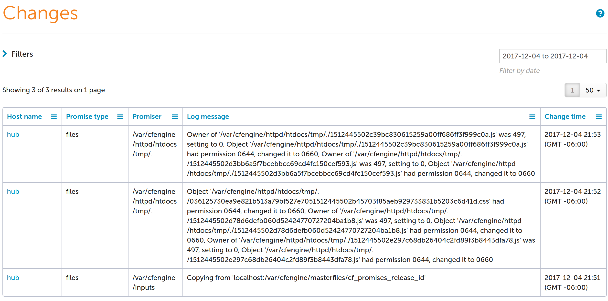
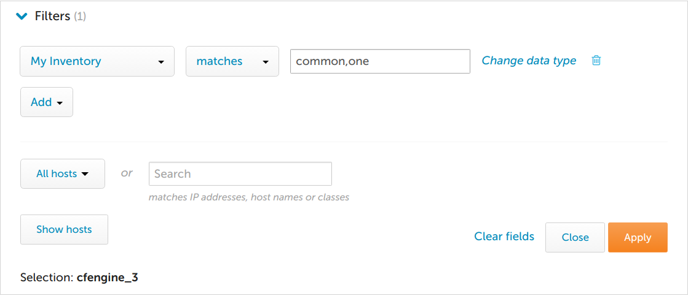
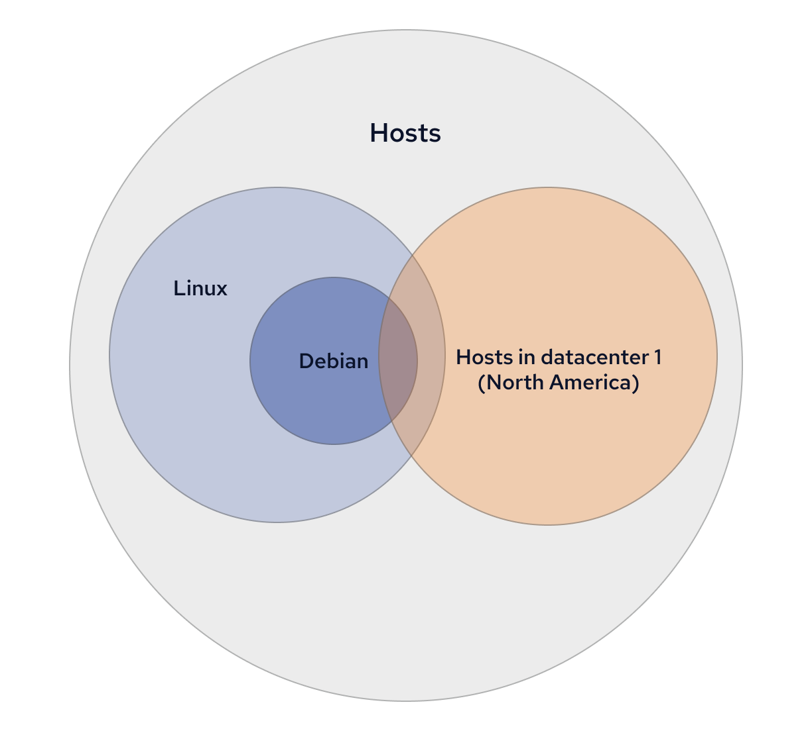
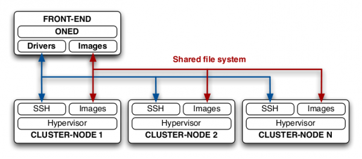
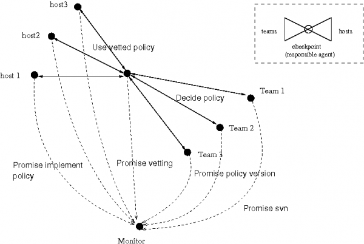

The Complete Resources
Table of Content
- FAQ
- Bootstrapping
- Tuning PostgreSQL
- What did CFEngine do?
- Why knowledge management?
- Requesting a CFEngine Enterprise License
- Uninstalling / reinstalling
- Debugging slow queries
- Enterprise report collection
- Enterprise Report Filtering
- Enterprise reporting database
- Why does CFEngine install into /var/cfengine instead of following the FHS?
- How do I find the public key for a given host
- How do I fix trust after an IP change?
- How do I fix undefined body errors?
- How do I integrate custom policy?
- Manual execution
- Mustache templating
- Agent output email
- How can I tell what classes and variables are defined?
- Unable to log into Mission Portal
- Users
- How do I pass a data type variable?
- What is promise locking?
- Why are some files inside masterfiles not being updated/distributed?
- Why are remote agents not updating?
- Additional topics
- External resources
- Best practices
FAQ
This is a collection of frequently asked questions. Contributions in the form of pull requests to the documentation are most welcome.
Bootstrapping
Frequently asked questions around bootstrapping, the process of starting CFEngine for the first time, and connecting the agents to the correct policy server.
Why did bootstrap fail?
When I bootstrap a host, I get errors:
No suitable server found for '<path>'No suitable server responded to hailAuthentication dialogue with '<IP>' failedProtocol transaction broken off (1). (ReceiveTransaction: Connection reset by peer)Couldn't receive. (recv: Connection reset by peer)Failed to establish TLS connection: underlying network error ()Failed to establish TLS connection: underlying network error (Connection reset by peer)
These types of errors typically indicate a problem with access.
To troubleshoot these types of errors review cf-serverd summary of access promises. allowconnects in body server control and trustkeysfrom in body server control should also be reviewed.
cf-serverd summary of access promises
cf-serverd provides a summary of access promises in verbose logs. Use this to see if cf-serverd is allowing access to the client.
Run cf-serverd with verbose logging and inspect the summary of access promises:
cf-serverd -v | awk '/=== BEGIN summary of access promises ===/,/=== END summary of access promises ===/'
Example Output:
verbose: === BEGIN summary of access promises ===
verbose: Host IPs allowed connection access (allowconnects):
verbose: IP: 192.168.56.2/16
verbose: IP: ::1
verbose: IP: 127.0.0.1
verbose: Host IPs denied connection access (denyconnects):
verbose: Host IPs allowed multiple connection access (allowallconnects):
verbose: IP: 192.168.56.2/16
verbose: IP: ::1
verbose: IP: 127.0.0.1
verbose: Host IPs whose keys we shall establish trust to (trustkeysfrom):
verbose: IP: 0.0.0.0/0
verbose: Host IPs allowed legacy connections (allowlegacyconnects):
verbose: Users from whom we accept cf-runagent connections (allowusers):
verbose: Access control lists:
verbose: Path: /usr/bin/bash
verbose: admit_ips: 192.168.56.2
verbose: Path: /var/cfengine/bin/
verbose: admit_ips: 192.168.56.2/16
verbose: Path: /var/cfengine/cmdb/$(connection.key)/
verbose: admit_keys: $(connection.key)
verbose: Path: /var/cfengine/data/
verbose: admit_ips: 192.168.56.2/16
verbose: Path: /var/cfengine/master_software_updates/
verbose: admit_ips: 192.168.56.2/16
verbose: Path: /var/cfengine/masterfiles/
verbose: admit_ips: 192.168.56.2/16
verbose: Path: /var/cfengine/masterfiles/.no-distrib/
verbose: deny_ips: 0.0.0.0/0
verbose: Path: /var/cfengine/modules/
verbose: admit_ips: 192.168.56.2/16
verbose: Query: collect_calls
verbose: admit_ips: 192.168.56.2/16
verbose: Query: delta
verbose: admit_ips: 127.0.0.1
verbose: admit_ips: 192.168.56.2
verbose: admit_ips: ::1
verbose: Query: full
verbose: admit_ips: 127.0.0.1
verbose: admit_ips: 192.168.56.2
verbose: admit_ips: ::1
verbose: Query: rebase
verbose: admit_ips: 127.0.0.1
verbose: admit_ips: 192.168.56.2
verbose: admit_ips: ::1
verbose: Role: .*
verbose: Access control lists for the classic network protocol:
verbose: Path: /var/cfengine/masterfiles
verbose: admit: 192.168.56.2/16
verbose: Path: /var/cfengine/bin
verbose: admit: 192.168.56.2/16
verbose: Path: /var/cfengine/data
verbose: admit: 192.168.56.2/16
verbose: Path: /var/cfengine/modules
verbose: admit: 192.168.56.2/16
verbose: Path: /var/cfengine/master_software_updates
verbose: admit: 192.168.56.2/16
verbose: Path: /usr/bin/bash
verbose: admit: 192.168.56.2
verbose: Path: /var/cfengine/masterfiles/.no-distrib
verbose: deny: 0.0.0.0/0
verbose: Object: collect_calls
verbose: Admit '192.168.56.2/16' root=
verbose: Object: delta
verbose: Admit '192.168.56.2' root=
verbose: Admit '::1' root=
verbose: Admit '127.0.0.1' root=
verbose: Object: rebase
verbose: Admit '192.168.56.2' root=
verbose: Admit '::1' root=
verbose: Admit '127.0.0.1' root=
verbose: Object: full
verbose: Admit '192.168.56.2' root=
verbose: Admit '::1' root=
verbose: Admit '127.0.0.1' root=
verbose: Object collect_calls
verbose: Object delta
verbose: Object rebase
verbose: Object full
verbose: === END summary of access promises ===
Notes:
If the summary of access promises looks correct, it may be that
cf-serverdhas not reloaded with a new access rule.Try stopping
cf-serverdand starting it in the foreground with verbose logging (cf-serverd --no-fork --log-level verbose) and look for logs related to the client that was failing.
allowconnects in body server control
In order for a host to communicate it must be within an IP range that is allowed to connect to the server.
cf-serverd logs errors when a host not in allow connects tries to communicate.
Remote host '<ip>' not in allowconnects, denying connection
Notes:
def.aclin the Masterfiles Policy Framework is included in this list by default.
See also: def.acl, [def.trustkeysfrom][Masterfiles Policy Framework#trustkeysfrom]
trustkeysfrom in body server control
This defines networks from which a host will automatically trust hosts. If you do not use automatic trust establishment you must arrange trust separately. The Secure bootstrap guide details a step-by-step procedure to securely bootstrap hosts.
cf-serverd logs verbose and notice messages relating to un-trusted clients trying to connect:
notice: 192.168.56.4> TRUST FAILED, peer presented an untrusted key, dropping connection!verbose: 192.168.56.4> Did not find new key format '/var/cfengine/ppkeys/root-SHA=85f8a23d6738599e03951e6930e661bcd9bb3ae12f32486c9795cc9baa7d5b4e.pub'verbose: 192.168.56.4> Trying old style '/var/cfengine/ppkeys/root-192.168.56.4.pub'verbose: 192.168.56.4> Received key 'SHA=85f8a23d6738599e03951e6930e661bcd9bb3ae12f32486c9795cc9baa7d5b4e' not found in ppkeys
See also: def.acl, [def.trustkeysfrom][Masterfiles Policy Framework#trustkeysfrom]
Tuning PostgreSQL
During install the CFEngine Enterprise Hub Package pre-configures PostgreSQL with a configuration for low (<3GB), medium (>3GB <64GB) or high (>64GB) memory which adjusts the values of effective_cache_size, shared_buffers, and maintenance_work_mem.
Depending on various factors your postgresql.conf may benefit from further tuning.
Parameters commonly tuned:
max_connectionseffective_cache_sizemaintenance_work_memcheckpoint_completion_targetwal_buffersdefault_statistics_targetrandom_page_costeffective_io_concurrencywork_memmin_wal_size
Tuning tools like pgtune and pgconfigurator can be helpful in adjusting your settings.
See also:
What did CFEngine do?
This page presents a few ways of understanding what CFEngine has done to your machine.
CFEngine Core/Community
The verbose agent log
Running the agent in verbose mode ( cf-agent --verbose | cf-agent -v )
provides all of the details about each promise and its result
Example Policy (/tmp/example.cf):
bundle agent main
{
files:
"/tmp/example"
handle => "example_file_exists_and_contains_date",
create => "true",
edit_line => lines_present( $(sys.date) );
}
bundle edit_line lines_present(lines)
# @brief Ensure `lines` are present in the file. Lines that do not exist are appended to the file
# @param List or string that should be present in the file
#
# Example:
#
# bundle agent example
# {
# vars:
# "nameservers"
# slist => { "8.8.8.8", "8.8.4.4" };
#
# files:
# "/etc/resolv.conf"
# edit_line => lines_present( @(nameservers) );
# "/etc/ssh/sshd_config"
# edit_line => lines_present( "PermitRootLogin no" );
# }
{
insert_lines:
"$(lines)"
comment => "Append lines if they don't exist";
}
In the verbose output as each promise is actuated a BEGIN promise is emitted
with the promise handle or filename and line number position if it does not have
a handle. In the example output we can see that the promise for /tmp/example
was REPAIRED.
verbose: B: *****************************************************************
verbose: B: BEGIN bundle main
verbose: B: *****************************************************************
verbose: P: .........................................................
verbose: P: BEGIN promise 'example_file_exists_and_contains_date' of type "files" (pass 1)
verbose: P: Promiser/affected object: '/tmp/example'
verbose: P: Part of bundle: main
verbose: P: Base context class: any
verbose: P: Stack path: /default/main/files/'/tmp/example'[1]
verbose: Using literal pathtype for '/tmp/example'
verbose: No mode was set, choose plain file default 0600
info: Created file '/tmp/example', mode 0600
verbose: Handling file edits in edit_line bundle 'lines_present'
verbose: V: + Private parameter: 'lines' in scope 'lines_present' (type: s) in pass 1
verbose: P: .........................................................
verbose: P: BEGIN promise 'promise_example_cf_32' of type "insert_lines" (pass 1)
verbose: P: Promiser/affected object: 'Mon Dec 4 21:08:38 2017'
verbose: P: Part of bundle: lines_present
verbose: P: Base context class: any
verbose: P: Stack path: /default/main/files/'/tmp/example'/default/lines_present/insert_lines/'Mon Dec 4 21:08:38 2017'[1]
verbose: P:
verbose: P: Comment: Append lines if they don't exist
verbose: Additional promise info: source path './example.cf' at line 32 comment 'Append lines if they don't exist'
verbose: Inserting the promised line 'Mon Dec 4 21:08:38 2017' into '/tmp/example' after locator
verbose: P: .........................................................
verbose: P: BEGIN promise 'promise_example_cf_32' of type "insert_lines" (pass 1)
verbose: P: Promiser/affected object: 'Mon Dec 4 21:08:38 2017'
verbose: P: Part of bundle: lines_present
verbose: P: Base context class: any
verbose: P: Stack path: /default/main/files/'/tmp/example'/default/lines_present/insert_lines/'Mon Dec 4 21:08:38 2017'[1]
verbose: P:
verbose: P: Comment: Append lines if they don't exist
verbose: P: .........................................................
verbose: P: BEGIN promise 'promise_example_cf_32' of type "insert_lines" (pass 1)
verbose: P: Promiser/affected object: 'Mon Dec 4 21:08:38 2017'
verbose: P: Part of bundle: lines_present
verbose: P: Base context class: any
verbose: P: Stack path: /default/main/files/'/tmp/example'/default/lines_present/insert_lines/'Mon Dec 4 21:08:38 2017'[1]
verbose: P:
verbose: P: Comment: Append lines if they don't exist
info: Edit file '/tmp/example'
verbose: Handling file existence constraints on '/tmp/example'
verbose: A: Promise REPAIRED
verbose: P: END files promise (/tmp/example)
verbose: P: .........................................................
verbose: P: BEGIN promise 'example_file_exists_and_contains_date' of type "files" (pass 2)
verbose: P: Promiser/affected object: '/tmp/example'
verbose: P: Part of bundle: main
verbose: P: Base context class: any
verbose: P: Stack path: /default/main/files/'/tmp/example'[1]
verbose: Using literal pathtype for '/tmp/example'
verbose: P: .........................................................
verbose: P: BEGIN promise 'example_file_exists_and_contains_date' of type "files" (pass 3)
verbose: P: Promiser/affected object: '/tmp/example'
verbose: P: Part of bundle: main
verbose: P: Base context class: any
verbose: P: Stack path: /default/main/files/'/tmp/example'[1]
verbose: Using literal pathtype for '/tmp/example'
verbose: A: ...................................................
verbose: A: Bundle Accounting Summary for 'main' in namespace default
verbose: A: Promises kept in 'main' = 0
verbose: A: Promises not kept in 'main' = 0
verbose: A: Promises repaired in 'main' = 2
verbose: A: Aggregate compliance (promises kept/repaired) for bundle 'main' = 100.0%
verbose: A: ...................................................
verbose: B: *****************************************************************
verbose: B: END bundle main
verbose: B: *****************************************************************
verbose: Generate diff state reports for policy './example.cf' SKIPPED
verbose: No lock purging scheduled
verbose: Outcome of version (not specified) (agent-0): Promises observed - Total promise compliance: 0% kept, 100% repaired, 0% not kept (out of 2 events). User promise compliance: 0% kept, 100% repaired, 0% not kept (out of 2 events). CFEngine system compliance: 0% kept, 0% repaired, 0% not kept (out of 0 events).
Promise logging
Promises can be configured to log their outcomes
to a file with log_kept, log_repaired, and log_failed attributes in an action body.
body file control
{
# reports.cf from stdlib needed for body printfile cat
inputs => { "$(sys.libdir)/reports.cf" };
}
bundle agent main
{
commands:
"/bin/true"
action => log_my_repairs( '/tmp/repaired.log' );
reports:
"/tmp/repaired.log"
printfile => cat( $(this.promiser) );
}
body action log_my_repairs( file )
{
log_repaired => "$(file)";
log_string => "$(sys.date) REPAIRED $(this.promiser)";
}
Policy output:
R: /tmp/repaired.log
R: Mon Dec 4 21:21:38 2017 REPAIRED /bin/true
CFEngine Enterprise
In addition to all of the core functionality CFEngine enterprise provides details logging without special configuration.
Changes UI
The changes reporting interface is the easiest way to what repairs the agent is making to your infrastructure.

Changes API
Changes can also be queried from the changes rest api. Here
we query for repairs made by files type promises.
Example query:
[root@hub ~]# curl https://hub/api/v2/changes/policy?promisetype=files
Example response:
{
"data": [
{
"bundlename": "cfe_internal_update_policy",
"changetime": 1512427971,
"hostkey": "SHA=01fe75e93ca88bbd381eb720e9b43d0840ea8727aae8fc84391c297c42798f5c",
"hostname": "hub",
"logmessages": [
"Copying from 'localhost:/var/cfengine/masterfiles/cf_promises_release_id'"
],
"policyfile": "/var/cfengine/inputs/cfe_internal/update/update_policy.cf",
"promisees": [],
"promisehandle": "cfe_internal_update_policy_files_inputs_dir",
"promiser": "/var/cfengine/inputs",
"promisetype": "files",
"stackpath": "/default/cfe_internal_update_policy/files/'/var/cfengine/inputs'[1]"
},
{
"bundlename": "cfe_internal_setup_knowledge",
"changetime": 1512428912,
"hostkey": "SHA=01fe75e93ca88bbd381eb720e9b43d0840ea8727aae8fc84391c297c42798f5c",
"hostname": "hub",
"logmessages": [
"Owner of '/var/cfengine/httpd/htdocs/application/logs/./log-2017-12-04.log' was 0, setting to 497",
"Group of '/var/cfengine/httpd/htdocs/application/logs/./log-2017-12-04.log' was 0, setting to 497",
"Object '/var/cfengine/httpd/htdocs/application/logs/./log-2017-12-04.log' had permission 0644, changed it to 0640"
],
"policyfile": "/var/cfengine/inputs/cfe_internal/enterprise/CFE_knowledge.cf",
"promisees": [],
"promisehandle": "cfe_internal_setup_knowledge_files_doc_root_application_logs",
"promiser": "/var/cfengine/httpd/htdocs/application/logs/.",
"promisetype": "files",
"stackpath": "/default/cfe_internal_management/methods/'CFEngine_Internals'/default/cfe_internal_enterprise_main/methods/'hub'/default/cfe_internal_setup_knowledge/files/'/var/cfengine/httpd/htdocs/application/logs/.'[1]"
}
],
"total": 2,
"next": null,
"previous": null
}
See also: query rest api
Custom Reports and Query API
The custom reports interface and associated query rest api allow more flexible reports to be run.
Queries can be made against the promiselog table. This query finds the
promises that are repaired the most excluding internal CFEngine related promises
and promises from the standard library.
-- Find most frequently repaired promises excluding lib and cfe_internal directories
SELECT namespace,bundlename,promisetype,promisehandle, promiser, count(promiseoutcome)
AS count
FROM promiselog
WHERE promiseoutcome = 'REPAIRED'
AND policyfile
NOT ilike '%/lib/%'
AND policyfile
NOT ilike '%cfe_internal%'
GROUP BY namespace, bundlename, promisetype,promisehandle,promiser
ORDER BY count DESC
Reference: query api examples
promise_log.jsonl
NOTE:* These logs are purged upon collection by the hub.
Beginning with Enterprise 3.9.0 we began logging promise outcomes to a JSON
format in $(sys.statedir)/promise_log.jsonl
(/var/cfengine/state/prmise_log.jsonl).
Each promise outcome is logged along with the bundle name, promise handle, log messages near the promise actuation, the promise namespace, policy filename, promise hash, promise type, promisees, promiser, release id, stack path (call path), and the timestamp of the agent ran.
Here is an example of the output in promise_log.jsonl:
{
"execution": {
"bundle":"file_make_mustache",
"handle":"",
"log_messages":[
"Created file '/var/cfengine/httpd/conf/httpd.conf.staged', mode 0600",
"Updated rendering of '/var/cfengine/httpd/conf/httpd.conf.staged' from mustache template '/var/cfengine/inputs/cfe_internal/enterprise/templates/httpd.conf.mustache'"
],
"namespace":"default",
"policy_filename":"/var/cfengine/inputs/lib/files.cf",
"promise_hash":"ebc3dce615bcdb724e53a9761a24f2e7ed4f2e01aed1ce85dc217a9d3429fed7",
"promise_outcome":"REPAIRED",
"promise_type":"files",
"promisees":[
"CFEngine Enterprise",
"Mission Portal"],
"promiser":"/var/cfengine/httpd/conf/httpd.conf.staged",
"release_id":"<unknown-release-id>",
"stack_path":"/default/cfe_internal_management/methods/'CFEngine_Internals'/default/cfe_internal_enterprise_mission_portal/methods/'Apache Configuration'/default/cfe_internal_enterprise_mission_portal_apache/methods/'Stage Apache Config'/default/file_make_mustache/files/'/var/cfengine/httpd/conf/httpd.conf.staged'[0]"
},
"timestamp":1470326639
},
{
"execution":{
"bundle":"mission_portal_apache_from_stage",
"handle":"",
"log_messages":[
"Updated '/var/cfengine/httpd/conf/httpd.conf' from source '/var/cfengine/httpd/conf/httpd.conf.staged' on 'localhost'"
],
"namespace":"default",
"policy_filename":"/var/cfengine/inputs/cfe_internal/enterprise/mission_portal.cf",
"promise_hash":"d730f2911834395411e4f3168847fc6cc522955f97652de41e02c8bc15f3f761",
"promise_outcome":"REPAIRED",
"promise_type":"files",
"promisees":[
"CFEngine Enterprise",
"Mission Portal"
],
"promiser":"/var/cfengine/httpd/conf/httpd.conf",
"release_id":"<unknown-release-id>",
"stack_path":"/default/cfe_internal_management/methods/'CFEngine_Internals'/default/cfe_internal_enterprise_mission_portal/methods/'Apache Configuration'/default/cfe_internal_enterprise_mission_portal_apache/methods/'Manage Final Apache Config'/default/mission_portal_apache_from_stage/files/'/var/cfengine/httpd/conf/httpd.conf'[0]"
},
"timestamp":1470326639
}
Why knowledge management?
The real IT management is all about the knowledge. At CFEngine we focus on knowledge right from the beginning - from initial description of desired state through actual state - with comprehensive reports and trend summaries that help us learn from the data we have gathered.
Requesting a CFEngine Enterprise License
To get a license please open a support request
including the number of hosts you would like each hub to be licensed for with
the archive generated by running tar --create --gzip --directory /var/cfengine
--file $(hostname)-ppkeys.tar.gz ppkeys/localhost.pub on each hub.
License installation instructions
First ensure there is no license.dat /var/cfengine/masterfiles or
/var/cfengine/inputs.
Install the license using cf-key.
cf-key --install-license license.dat
Note: If you get an error complaining about an existing license simply move it out of the way.
The new license should take effect automatically in about 5 minutes.
To have the license take effect immediately re-start cf-hub.
systemctl restart cf-hub
or
service /etc/init.d/cfengine3 restart
You can check the license information in the Mission Portal About page (top right) or by querying the API.
curl --cacert /var/cfengine/httpd/ssl/certs/$(hostname -f).cert --silent https://$(hostname -f)/api/settings --user admin
Uninstalling / reinstalling
What is left behind after uninstalling?
Uninstalling a CFEngine package does not remove any user data. Most data
including the host identity ($(sys.workdir)/ppkeys/localhost.{pub,priv}),
state, policy, and logs remain.
To completely remove CFEngine delete $(sys.workdir) typically /var/cfengine
or C:\Program Files\Cfengine after uninstalling the package.
Should I delete anything if I am re-installing?
You may want to wipe $(sys.statedir) and $(sys.workdir)/outputs for a fresh start to log data and history.
You may want to revoke trust of other hosts by deleting
$(sys.workdir)/ppkeys/*.pub ( excluding localhost.pub ).
Only delete the host identity if you want to generate a new key pair and establish a new identity for this host.
Debugging slow queries
If Mission Portal seems to take too much time to generate pages or reports or if API calls seem to be taking too long. You can enable logging and analyzing slow queries in postgresql with the following changes:
Edit
/var/cfengine/state/pg/data/postgresql.conf. Add the following lines at the end of the filecodesession_preload_libraries = 'auto_explain' auto_explain.log_analyze = 'on' auto_explain.log_min_duration = 1000The
log_min_durationis in milliseconds so adjust as needed.See https://www.postgresql.org/docs/current/auto-explain.html for more details.
Observe the postgresql log at
/var/log/postgresql.log. Send the log with any bug report you wish to send.
Enterprise report collection
Frequently asked questions on Enterprise report collection.
What are reports?
Reports are the records that the components ( cf-agent, cf-monitord,
cf-serverd ... ) record about their knowledge of the system state. Each
component may log to various data sources within $(sys.statedir).
How does CFEngine Enterprise collect reports?
cf-hub makes connections from the hub to remote agents currently registered in
the lastseen database (viewable with cf-key -s)
on body hub control port (5308 by default). The hub
tries to collect from up to the LICENSED number of hosts for each collection
round as identified by hub_schedule as defined
in body hub control.
- See also:
hostsseen(),hostswithclass()
How often does cf-hub re-check the LICENSE
cf-hub re-checks the license when it is started and once every 5 minutes after
that.
Which hosts are being report-collected?
cf-hub gets a list of hosts to collect from lastseen database
(viewable with cf-key -s).
NOTE: this database is periodically cleaned from entries older than one week old.
This cleanup is tweakable using lastseenexpireafter setting.
However we don't recommend tweaking this setting, as older hosts are
practically dead, and may affect report collection performance (via
timeouts) and license-counting.
How does the license count affect report collection?
In each collection round, cf-hub will collect reports from up to
LICENSED number of hosts. It is unspecified which hosts are the ones
skipped, in case the total number of hosts listed in lastseen database
are over the LICENSED number.
Can cf-hub host count be different from Mission Portal ?
Yes, it can be.
Mission Portal only sees the hosts which cf-hub has put into the PostgreSQL database.
cf-hub can skip hosts for a few reasons, for example if they are in exclude_hosts, or if it has reached the license count.
Thus, it is possible to appear to be within license count in Mission Portal, but cf-hub is detecting that you are over license.
If you believe you should be within license count, the Host DELETE API can be used to remove old / inactive hosts.
When is a hub behaving as over-licensed ?
When the number of hosts in the lastseen database (viewable with
cf-key -s) is greater than the number of LICENSED hosts for this hub.
How are agents not running determined?
Hosts who's last agent execution status is "FAIL" will show up under "Agents not running". A hosts last agent execution status is set to "FAIL" when the hub notices that there are no promise results within 3x of the expected agent run interval. The agents average run interval is computed by a geometric average based on the 4 most recent agent executions.

You can inspect hosts last execution time, execution status (from the hubs perspective), and average run interval using the following SQL.
SELECT Hosts.HostName AS "Host name",
AgentStatus.LastAgentLocalExecutionTimeStamp AS "Last agent local execution
time", cast(AgentStatus.AgentExecutionInterval AS integer) AS "Agent execution
interval", AgentStatus.LastAgentExecutionStatus AS "Last agent execution status"
FROM AgentStatus INNER JOIN Hosts ON Hosts.HostKey = AgentStatus.HostKey
This can be queried over the API most easily by placing the query into a json
file. And then using the query API.
agent_execution_time_interval_status.query.json:
{
"query": "SELECT Hosts.HostName, AgentStatus.LastAgentLocalExecutionTimeStamp, cast(AgentStatus.AgentExecutionInterval AS integer), AgentStatus.LastAgentExecutionStatus FROM AgentStatus INNER JOIN Hosts ON Hosts.HostKey = AgentStatus.HostKey"
}
$ curl -s -u admin:admin http://hub/api/query -X POST -d @agent_execution_time_interval_status.query.json | jq ".data[0].rows"
[
[
"hub",
"2016-07-25 16:53:23+00",
"296",
"OK"
],
[
"host001",
"2016-07-25 16:06:50+00",
"305",
"FAIL"
]
]
See also: Enterprise API reference, Enterprise API examples
How are hosts not reporting determined?
Hosts that have not been collected from within blueHostHorizon seconds will
show up under "Hosts not reporting".

blueHostHorizon defaults to 900 seconds (15 minutes). You can inspect the
current value of blueHostHorizon from Mission Portal or via the API:
$ curl -s -u admin:admin http://hub/api/settings/ | jq ".data[0].blueHostHorizon"
900
Note: It's called "blueHostHorizon" because older versions of Mission Portal would turn these hosts to a blue color as an indication of "hypoxia" (lack of oxygen, where oxygen is access to latest policy) to indicate a health issue.
See also: Enterprise API reference, Enterprise API examples, Enterprise Settings
Which hosts are pending trust revocation?
When a host is removed using the delete API its key is placed in a queue for
trust revocation. To see which hosts are pending key removal use the following
query against the cfsettings database.
SELECT HostKey FROM KeysPendingForDeletion;
How to troubleshoot report collection?
The following steps can be used to help diagnose and potentially restore reporting for hosts experiencing issues.
Perform manual delta collection for a single host
Performing back to back delta collections and comparing the data received can help to expose so called patching issues. If the same amount of data is collected twice a rebase may resolve it.
[root@hub ~]# cf-hub -q delta -H 192.168.56.2 -v
verbose: ----------------------------------------------------------------
verbose: Initialization preamble
verbose: ----------------------------------------------------------------
# <snipped for brevity>
verbose: Connecting to host 192.168.56.2, port 5308 as address 192.168.56.2
verbose: Waiting to connect...
verbose: Setting socket timeout to 10 seconds.
verbose: Connected to host 192.168.56.2 address 192.168.56.2 port 5308 (socket descriptor 4)
verbose: TLS version negotiated: TLSv1.2; Cipher: AES256-GCM-SHA384,TLSv1/SSLv3
verbose: TLS session established, checking trust...
verbose: Received public key compares equal to the one we have stored
verbose: Server is TRUSTED, received key 'SHA=e77d408e9802e2c549417d5e3379c43050d2ad5928a198855dbb7e9c8af9a6f1' MATCHES stored one.
verbose: Key digest for address '192.168.56.2' is SHA=e77d408e9802e2c549417d5e3379c43050d2ad5928a198855dbb7e9c8af9a6f1
verbose: Will request from host 192.168.56.2 (digest = SHA=e77d408e9802e2c549417d5e3379c43050d2ad5928a198855dbb7e9c8af9a6f1) data later than timestamp 1481901790
verbose: Successfully opened extension plugin 'cfengine-report-collect.so' from '/var/cfengine/lib/cfengine-report-collect.so'
verbose: Successfully loaded extension plugin 'cfengine-report-collect.so'
verbose: Sending query at Fri Dec 16 15:24:23 2016
verbose: h>s QUERY delta 1481901790 1481901863
verbose: Sending query at Fri Dec 16 15:24:23 2016
verbose: Received reply of 5050 bytes at Fri Dec 16 15:24:23 2016 -> Xfer time 0 seconds (processing time 0 seconds)
verbose: Processing report: MOM (items: 44)
verbose: Processing report: MOY (items: 48)
verbose: Processing report: MOH (items: 22)
verbose: Processing report: EXS (items: 1)
verbose: Received 5 kb of report data with 115 individual items
verbose: Connection to 192.168.56.2 is closed
Perform manual rebase collection for a single host
A rebase causes the hub to throw away all reports since the last collection
and collect only the output from the most recent run.
[root@hub ~]# cf-hub -q rebase -H 192.168.56.2 -v
verbose: ----------------------------------------------------------------
verbose: Initialization preamble
verbose: ----------------------------------------------------------------
# <snipped for brevity>
verbose: Connecting to host 192.168.56.2, port 5308 as address 192.168.56.2
verbose: Waiting to connect...
verbose: Setting socket timeout to 10 seconds.
verbose: Connected to host 192.168.56.2 address 192.168.56.2 port 5308 (socket descriptor 4)
verbose: TLS version negotiated: TLSv1.2; Cipher: AES256-GCM-SHA384,TLSv1/SSLv3
verbose: TLS session established, checking trust...
verbose: Received public key compares equal to the one we have stored
verbose: Server is TRUSTED, received key 'SHA=e77d408e9802e2c549417d5e3379c43050d2ad5928a198855dbb7e9c8af9a6f1' MATCHES stored one.
verbose: Key digest for address '192.168.56.2' is SHA=e77d408e9802e2c549417d5e3379c43050d2ad5928a198855dbb7e9c8af9a6f1
verbose: Successfully opened extension plugin 'cfengine-report-collect.so' from '/var/cfengine/lib/cfengine-report-collect.so'
verbose: Successfully loaded extension plugin 'cfengine-report-collect.so'
verbose: Sending query at Fri Dec 16 15:35:10 2016
verbose: h>s QUERY rebase 0 1481902510
verbose: Sending query at Fri Dec 16 15:35:10 2016
verbose: Received reply of 128157 bytes at Fri Dec 16 15:35:10 2016 -> Xfer time 0 seconds (processing time 0 seconds)
verbose: Processing report: CLD (items: 46)
verbose: Processing report: VAD (items: 52)
verbose: Processing report: LSD (items: 13)
verbose: Processing report: SDI (items: 327)
verbose: Processing report: SPD (items: 143)
verbose: Processing report: ELD (items: 205)
verbose: ts #0 > 1481902510
verbose: Received 125 kb of report data with 786 individual items
verbose: Connection to 192.168.56.2 is closed
Note: The Enterprise hub automatically schedules rebase queries if it has
been unable to collect from a given candidate for client_history_timeout
hours.
Enable report dumping for the affected client
Enable report dumping by creating enable_report_dumps in WORKDIR (/var/cfengine/enable_report_dumps). When the file is present, cf-serverd will log reports provided to cf-hub to WORKDIR/diagnostics/report_dump (/var/cfengine/diagnostics/report_dumps). These diagnostics should be provided to support.
Enterprise Report Filtering
Filtering inventoried lists
When filtering an inventoried list item filtering can be based on one or more elements of the specific inventoried item. Note that when filtering for multiple elements of a list AND logic is used.
For example, this simple policy will inventory "My Inventory" with "common" and either "one" and "four" or "two" and "three".
bundle agent example
{
meta:
"tags" slist => { "autorun" };
vars:
!host_001::
"slist" slist => { "common", "one", "four" },
meta => { "inventory", "attribute_name=My Inventory" };
host_001::
"slist" slist => { "common", "two", "three" },
meta => { "inventory", "attribute_name=My Inventory" };
}
The above policy can produce inventory that looks like this:

Adding a filter where "My Inventory" matches or contains common AND one:

Enterprise reporting database
Frequently asked questions on the Enterprise reporting database.
Can I use an existing PostgreSQL installation?
No. Although CFEngine keeps its assumptions about Postgres to a bare minimum, CFEngine should use a dedicated PostgreSQL database instance to ensure there is no conflict with an existing installation.
Do I need experience with PostgreSQL?
PostgreSQL is highly configurable and you should have some in-house expertise to properly configure your database installation. The defaults are well tuned for common cases but you may find optimizations depending on your hardware and OS.
What is the system user for the CFEngine dedicated PostgreSQL database?
The database runs under the cfpostgres user.
What are the requirements for installing CFEngine Enterprise?
General information
Users and permissions
- CFEngine Enterprise makes an attempt to create the local users
cfapacheandcfpostgres, as well as groupcfapacheduring install.
How does Enterprise scale?
See best practices on scalability
Is it normal to have many cf-hub processes running?
- Yes, it is expected to have ~ 50
cf-hubprocesses running on a hub.
What steps should I take after installing CFEngine Enterprise?
There are general steps to be taken outlined in Post-installation configuration.
In addition to this, Enterprise uses the local mail relay, and it is assumed that the server where CFEngine Enterprise is installed on has proper mail setup.
Why does CFEngine install into /var/cfengine instead of following the FHS?
The Unix Filesystem Hierarchy Standard is a specification for standardizing where files and directories get installed on a Unix-like system. When you install CFEngine from source you can choose to build with FHS support, it places all files in their expected locations. In addition, you may choose to follow this standard in locating your master configuration and work areas.
CFEngine was introduced at about the same time as the FHS standard and since
cfengine 2.x, CFEngine defaults to placing all components under /var/cfengine
(similar to /var/cron):
/var/cfengine
Installing all components into the same sub-directory of /var is intended to
increase the probability that all components are on a local file system. This
agrees with the intention of the FHS as described in section 5.1 of the FHS-2.3.
The location of this workspace is configurable, but the default is determined by
backward compatibility. In other words, particular distributions may choose to
use a different location, and some do.
References: - https://lists.gnu.org/archive/html/help-cfengine/2004-09/msg00181.html - https://groups.google.com/d/msg/help-cfengine/q9jVopHatXI/M8asmeAWTxQJ
How do I find the public key for a given host
Trying to locate the public key for a host on your hub in order to validate
trust? Use this snippet to figure out which public key file in
/var/cfengine/ppkeys matches a given host.
# KEY="SHA=31bcb32950d8b91ffdfca85bca71364ec8f67c93246e3617c3a49af58363c4a1"
# for each in $(ls /var/cfengine/ppkeys/*.pub); do
if [ "$(cf-key -n -p ${each})" = "$KEY" ]; then
echo "Found KEY in $each";
fi
done
How do I fix trust after an IP change?
Symptom:
After the policy server was restarted with the new IP address, clients would not connect:
error: Not authorized to trust public key of server '192.168.14.113' (trustkey = false)
error: Authentication dialogue with '192.168.14.113' failed
Bootstrapping the clients also fails:
[root@dev /var/cfengine] /var/cfengine/bin/cf-agent --bootstrap 192.168.14.113
2014-06-23T13:57:07-0400 notice: R: This autonomous node assumes the role of voluntary client
2014-06-23T13:57:07-0400 notice: R: Failed to copy policy from policy server at 192.168.14.113:/var/cfengine/masterfiles
Please check
* cf-serverd is running on 192.168.14.113
* network connectivity to 192.168.14.113 on port 5308
* masterfiles 'body server control' - in particular allowconnects, trustkeysfrom and skipverify
* masterfiles 'bundle server' -> access: -> masterfiles -> admit/deny
It is often useful to restart cf-serverd in verbose mode (cf-serverd -v) on 192.168.14.113 to diagnose connection issues.
When updating masterfiles, wait (usually 5 minutes) for files to propagate to inputs on 192.168.14.113 before retrying.
2014-06-23T13:57:07-0400 notice: R: Did not start the scheduler
2014-06-23T13:57:07-0400 error: Bootstrapping failed, no input file at '/var/cfengine/inputs/promises.cf' after bootstrap
Solution:
Assuming that 661df12c960af9afdde093e0cb339b4d is the MD5 hostkey and
192.168.14.113 is the new IP address:
[root@hub]# cd /var/cfengine/ppkeys && mv -i root-MD5=661df12c960af9afdde093e0cb339b4d.pub root-192.168.14.113.pub
How do I fix undefined body errors?
When running policy you see error: Undefined body. For example:
cf-promises -f ./large-files.cf:
./large-files.cf:14:0: error: Undefined body tidy with type delete
./large-files.cf:16:0: error: Undefined body recurse with type depth_search
The above errors indicate that the tidy and recurse bodies are not found in
inputs. Bodies and bundles must either be defined within the same policy file or
included from body common control inputs
or body file control inputs.
Example: Add stdlib via body common control
body common control
{
bundlesequence => { "file_remover" };
inputs => { "$(sys.libdir)/stdlib.cf" };
}
Example: Add stdlib via body file control
Body file control allows you to build modular policy. Body file control inputs are typically relative to the policy file itself.
bundle file_remover_control
{
vars:
"inputs" slist => {
"$(sys.libdir)/stdlib.cf",
"$(this.promise_dirname)/custom_policy.cf",
};
}
body file control
{
inputs => { @(file_remover_control.inputs) };
}
Tip: Locate bodies or bundles with cf-locate
cf-locate is a small utility that makes searching for and referencing body or
bundle definitions quick and easy. Simply download the utility from
core/contrib/cf-locate
into your $PATH and make it executable.
Find which policy file a bundle or body is defined in:
[root@hub ~]# cf-locate always
-> body or bundle matching 'always' found in /var/cfengine/masterfiles/lib/3.6/common.cf:260
body classes always(x)
Reference a bundle or bodies full implementation:
[root@hub ~]# cf-locate -f always /var/cfengine/masterfiles
-> body or bundle matching 'always' found in /var/cfengine/masterfiles/lib/3.6/common.cf:260
body classes always(x)
# Define a class no matter what the outcome of the promise is
{
promise_repaired => { "$(x)" };
promise_kept => { "$(x)" };
repair_failed => { "$(x)" };
repair_denied => { "$(x)" };
repair_timeout => { "$(x)" };
}
How do I integrate custom policy?
There are many different ways that custom polices can be organized. CFEngine does not prescribe any specific organizational layout but generally speaking keeping custom policy files under as few different paths as possible can ease policy framework upgrades.
For example, it is common to store custom policy files under services/SERVICE
or ORGINIZATION from the root of your policy set.
Here we only describe ways to include and execute custom policies.
Using autorun
The autorun feature in the Masterfiles Policy Framework automatically adds
policy files found in services/autorun to inputs and executes bundles tagged
with autorun as methods type promises in lexical order.
See also: [services_autorun in the Masterfiles Policy Framework][Masterfiles Policy Framework#services_autorun]
Using augments
Augments uses the inputs key to define def.augments_inputs which is included
in inputs of body common control in promises.cf by default.
{
"inputs": [ "my_update.cf" ]
}
Alternatively you can define augments_inputs directly.
{
"vars": {
"augments_inputs": [ "my_policy.cf" ]
}
}
To extend inputs in the update policy define update_inputs.
{
"vars": {
"update_inputs": [ "my_update.cf" ]
}
}
See also: Augments, [Extend inputs for update policy in the Masterfiles Policy Framework][Masterfiles Policy Framework#Append to inputs used by update policy]
Using body file control
inputs in body file control can be used to load additional policy files.
This can be very useful for loading policy files that are relative to each
other.
NOTES:
-
body file controlcan not be used to specify bundles that should be executed. this.promise_*variables can not be used directly inbody file control.codebody file control { inputs => { "$(this.policy_dirname)/../stdlib.cf" }; }Bundle variables can be used to achieve relative inputs.
codebundle common example_file_control { vars: "policy[stdlib]" string => "$(this.policy_dirname)/../my_other_policy.cf"; "inputs" slist => getvalues( policy ); } body file control { inputs => { "$(example_file_control.inputs)" }; }sys.policy_*variables can be used directly inbody file control.codebody file control { inputs => { "$(sys.policy_entry_dirname)/lib/stdlib.cf" }; }
See also: inputs in body file control
Using body common control
body common control is the classic way to define the list of policy files that
make up the policy set ( inputs ), and the order of the bundles to be executed
( bundlesequence ).
See also: inputs in body common control, bundlesequence in body common control
Manual execution
Frequently asked questions on manual execution.
How do I run a standalone policy file?
The --file or -f option to cf-agent specifys the policy file. The -K or
--no-lock flag and the -I or --inform options are commonly used in
combination with the -f option to ensure that all promises are skipped because
of locking and for the agent to produce informational output like successful
repairs.
[root@hub ~]# cf-agent -KIf ./my_standalone_policy.cf
A standalone policy file may choose not to specify a bundlesequence. In
that case, the bundlesequence defaults to main so you'll need a bundle
called main, or will need to specify the bundlesequence.
How do I run a specific bundle?
A specific bundle can be activated by passing the -b or --bundlesequence
options to cf-agent. This may be used to activate a specific bundle within a
large policy set or to run a standalone policy that does not include a body
common control.
[root@hub ~]# cf-agent -b my_bundle
If you want to activate multiple bundles in a sequence simply separate them with commas (no spaces between).
[root@hub ~]# cf-agent --bundlesequence bundle1,bundle2
How do I define a class for a single run?
You can use the --define or -D options of cf-agent.
[root@hub ~]# cf-agent -D my_class
And if you want to define multiple, simply separate them with commas (no spaces between).
[root@hub ~]# cf-agent --define my_class,my_other_class
Run via cf-execd
Sometimes it's convenient to run cf-execd with --once. It will execute
exec_command as defined in body executor control. In the
Masterfiles Policy Framework this
defaults
to update policy ( update.cf ) followed by the default policy ( promises.cf
). Output from cf-execd executions is logged to
$(sys.workdir)/outputs.
Request a remote agent run
cf-runagent can be used to request remote agent runs. It cannot execute
arbitrary commands, but it can be useful for triggering out of turn policy runs. cf-runagent is most commonly run by a privledged user on the hub as trust must be establsed between the hosts and there is already trust established between a hub and the agents bootstrapped to it.
##### cf-runagent --hail 203.0.113.5 --inform
Remote agent run for many hosts sharing a class
The --hail and -H options take a comma separated list of hosts that will be contacted.
##### cf-runagent --hail 203.0.113.5,203.0.113.6,203.0.113.7,host001.cfengine.example --inform
The --select-class option defines a list of comma separated classes that must
be defined on the remote host before execution is allowed to proceed.
This command will run cf-agent with the additional class patch_and_reboot on all hosts seen recently that have the class under_maintanance defined.
##### cf-runagent --hail $(cf-key --show-hosts --numeric | awk -vORS=, '/Incoming/ { print $2 }' | sed 's/,$/\n/') --define patch_and_reboot --select-class under_maintanance
This command will run cf-agent with the additional class patch_and_reboot on all hosts present in hostlist.txt that have the class under_maintanance defined.
##### cf-runagent --hail "$(tr '\n' , < hostlist.txt )" -I --define patch_and_reboot --select-class under_maintanance
Note: In order for the --select-class` option to function as expected the
classes it is using must be resolvable during pre-evaluation as the full
evaluation is only allowed when the classes are found to be defined.
See also: How is "recently seen" determined, cf-runagent, pre-evaluation
Mustache templating
CFEngine specific extensions
CFEngine has several extensions to the mustache standard.
-top-special key representing the complete data given.%variable prefix causing data to be rendered as multi-line json representation.$variable prefix causing data to be rendered as compact json representation.@expands the current key being iterated.
See also: template_method mustache extensions
How can I pass a data variable to template_data?
Just use template_data => @(mycontainer).
If you need to extract a portion of the container or merge it with another, use
template_data => mergedata("mycontainer[piece]", "othercontainer").
Can I render a Mustache template into a string?
Yes, see string_mustache().
How do I render a section only if a given class is defined?
In this Mustache example the word 'Enterprise' will only be rendered if the class 'enterprise' is defined.
This template should not be passed a data container; it uses the datastate()
of the CFEngine system. That's where classes.enterprise and
vars.sys.cf_version came from.
Version: CFEngine {{#classes.enterprise}}Enterprise{{/classes.enterprise}} {{vars.sys.cf_version}}
How do I render a section only if a given class is not defined?
In the mustache documentation this is referred to as an inverted section.
In this mustache example the word Enterprise will only be rendered if the
class cfengine_enterprise is defined and the word Community will
only be rendered if the class cfengine_enterprise is not defined.
This template should not be passed a data container; it uses the datastate()
of the CFEngine system. That's where classes.cfengine_enterprise and
vars.sys.cf_version came from.
Version: CFEngine {{#classes.cfengine_enterprise}}Enterprise{{/classes.cfengine_enterprise}}{{^classes.cfengine_enterprise}}Community{{/classes.cfengine_enterprise}} {{vars.sys.cf_version}}
How do I use class expressions?
Mustache does not understand CFEngine's class expression logic and it is not possible to use full class expressions in mustache templates. Instead, use class expressions inside CFEngine policy to define a singular class which can be used to conditionally render a block.
bundle agent main
{
classes:
"known_day_of_week"
expression => "(Monday|Tuesday|Wednesday|Thursday|Friday|Saturday|Sunday)";
vars:
"rendered"
string => string_mustache(
"{{#classes.known_day_of_week}}I recognize the day of the week.{{/classes.known_day_of_week}}
{{^classes.class_you_are_looking_for}}
The class you are looking for is not defined.
{{/classes.class_you_are_looking_for}}",
datastate());
reports:
"$(rendered)";
}
Here we define the class known_day_of_week as long as there is a class
representing a known day. Then we render the value of the string variable
"rendered" using string_mustache() with a template that includes a section
that is conditional when classes.known_day_of_week is true and another section
when classes.class_you_are_looking_for is not defined based on the data
provided from datastate() which is the default set of data to use for mustache
templates when explicit data is not provided. Finally we report the variable to
see the rendered template.
R: I recognize the day of the week.
The class you are looking for is not defined.
We can see in the output that the conditional text was rendered as expected. Try adjusting the template or the class expression.
This policy can be found in
/var/cfengine/share/doc/examples/mustache_classes.cf
and downloaded directly from
github.
How do I iterate over a list?
This template should not be passed a data container; it uses the datastate()
of the CFEngine system. That's where vars.mon.listening_tcp4_ports came from.
{{#vars.mon.listening_tcp4_ports}}
* {{.}}
{{/vars.mon.listening_tcp4_ports}}
How can I access keys when iterating over a dict?
In CFEngine, the @ symbol expands to the current key when iterating over a dict.
bundle agent main
{
reports:
"$(with)"
with => string_mustache("datastate() provides {{#-top-}} {{{@}}}{{/-top-}}", datastate() );
}
R: datastate() provides classes vars
This policy can be found in
/var/cfengine/share/doc/examples/mustache_extension_expand_key.cf
and downloaded directly from
github.
Can you use nested classes?
You can. This is handy when options slightly differ for different operating systems.
In this example for ssh daemon the authorized key configuration will only be added if
class SSH_LDAP_PUBKEY_BUNDLE is true and for the class debian/centos diffenrent
keywords are added.
{{#classes.SSH_LDAP_PUBKEY_BUNDLE}}
{{#classes.debian}}
AuthorizedKeysCommand {{vars.sara_data.ssh.authorized_keys_command}}
AuthorizedKeysCommandUser {{vars.sara_data.ssh.authorized_keys_commanduser}}
{{/classes.debian}}
{{#classes.centos}}
AuthorizedKeysCommand {{vars.sara_data.ssh.authorized_keys_command}}
AuthorizedKeysCommandRunAs {{vars.sara_data.ssh.authorized_keys_commanduser}}
{{/classes.centos}}
{{/classes.SSH_LDAP_PUBKEY_BUNDLE}}
Agent output email
How do I set the email where agent reports are sent?
The agent report email functionality is configured in body executor control
https://github.com/cfengine/masterfiles/blob/3.25/controls/cf_execd.cf.
It defaults to root@$(def.domain) which is configured in bundle common def
https://github.com/cfengine/masterfiles/blob/3.25/def.cf.
See also: def.mailto.
How do I disable agent email output?
You can simply remove or comment out the settings.
The Masterfiles Policy Framework will disable agent email when the class
cfengine_internal_disable_agent_email available in controls/def.cf to
switch on/off agent email.
How can I tell what classes and variables are defined?
You can see a high level overview of the first order classes and variables using
cf-promises --show-classes and cf-promises --show-vars.
Both of those commands will take an optional regular expression you can use to
filter the classes or variables. For example cf-promises --show-classes=MT
will show all the classes that contain MT like GMT_July.
You can see the variables and namespace scoped classes defined at the end of an
agent execution by using the --show-evaluated-vars or
--show-evaluated-classes options to cf-agent. In addition to the
variables and classes shown by cf-promises --show-classes or cf-promises
--show-vars this will show variables and namespace scoped classes that get
defined during a full agent run where the system may be modified and more policy
is evaluated.
Show first order classes with cf-promises
cf-promises --show-classes
Class name Meta tags Comment
0fb192602f52 inventory,attribute_name=none,source=agent,derived-from=sys.fqhost,hardclass
10_0_2_100 inventory,attribute_name=none,source=agent,hardclass
127_0_0_1 inventory,attribute_name=none,source=agent,hardclass
64_bit source=agent,hardclass
6_cpus source=agent,derived-from=sys.cpus,hardclass
Afternoon time_based,cfengine_internal_time_based_autoremove,source=agent,hardclass
Day7 time_based,cfengine_internal_time_based_autoremove,source=agent,hardclass
GMT_Afternoon time_based,cfengine_internal_time_based_autoremove,source=agent,hardclass
GMT_Day7 time_based,cfengine_internal_time_based_autoremove,source=agent,hardclass
GMT_Hr17 time_based,cfengine_internal_time_based_autoremove,source=agent,hardclass
GMT_Hr17_Q3 time_based,cfengine_internal_time_based_autoremove,source=agent,hardclass
GMT_January time_based,cfengine_internal_time_based_autoremove,source=agent,hardclass
GMT_Lcycle_0 time_based,cfengine_internal_time_based_autoremove,source=agent,hardclass
GMT_Min30_35 time_based,cfengine_internal_time_based_autoremove,source=agent,hardclass
GMT_Min33 time_based,cfengine_internal_time_based_autoremove,source=agent,hardclass
GMT_Q3 time_based,cfengine_internal_time_based_autoremove,source=agent,hardclass
GMT_Tuesday time_based,cfengine_internal_time_based_autoremove,source=agent,hardclass
GMT_Yr2025 time_based,cfengine_internal_time_based_autoremove,source=agent,hardclass
Hr17 time_based,cfengine_internal_time_based_autoremove,source=agent,hardclass
Hr17_Q3 time_based,cfengine_internal_time_based_autoremove,source=agent,hardclass
January time_based,cfengine_internal_time_based_autoremove,source=agent,hardclass
Lcycle_0 time_based,cfengine_internal_time_based_autoremove,source=agent,hardclass
Min30_35 time_based,cfengine_internal_time_based_autoremove,source=agent,hardclass
Min33 time_based,cfengine_internal_time_based_autoremove,source=agent,hardclass
Q3 time_based,cfengine_internal_time_based_autoremove,source=agent,hardclass
Tuesday time_based,cfengine_internal_time_based_autoremove,source=agent,hardclass
Yr2025 time_based,cfengine_internal_time_based_autoremove,source=agent,hardclass
_control_agent_environment_vars_validated source=promise
_have_bin_env source=promise
_have_bin_journalctl source=promise
_have_bin_systemctl source=promise
_have_bin_timedatectl source=promise
_have_control_agent_files_single_copy source=promise
_stdlib_has_path_apt_cache source=promise It's useful to know if a given path is defined
_stdlib_has_path_apt_config source=promise It's useful to know if a given path is defined
_stdlib_has_path_apt_get source=promise It's useful to know if a given path is defined
_stdlib_has_path_apt_key source=promise It's useful to know if a given path is defined
_stdlib_has_path_aptitude source=promise It's useful to know if a given path is defined
_stdlib_has_path_awk source=promise It's useful to know if a given path is defined
_stdlib_has_path_bc source=promise It's useful to know if a given path is defined
_stdlib_has_path_cat source=promise It's useful to know if a given path is defined
_stdlib_has_path_chkconfig source=promise It's useful to know if a given path is defined
_stdlib_has_path_cksum source=promise It's useful to know if a given path is defined
_stdlib_has_path_createrepo source=promise It's useful to know if a given path is defined
_stdlib_has_path_crontab source=promise It's useful to know if a given path is defined
_stdlib_has_path_crontabs source=promise It's useful to know if a given path is defined
_stdlib_has_path_curl source=promise It's useful to know if a given path is defined
_stdlib_has_path_cut source=promise It's useful to know if a given path is defined
_stdlib_has_path_date source=promise It's useful to know if a given path is defined
_stdlib_has_path_dc source=promise It's useful to know if a given path is defined
_stdlib_has_path_df source=promise It's useful to know if a given path is defined
_stdlib_has_path_diff source=promise It's useful to know if a given path is defined
_stdlib_has_path_dig source=promise It's useful to know if a given path is defined
_stdlib_has_path_dmidecode source=promise It's useful to know if a given path is defined
_stdlib_has_path_dmsetup source=promise It's useful to know if a given path is defined
_stdlib_has_path_domainname source=promise It's useful to know if a given path is defined
_stdlib_has_path_dpkg source=promise It's useful to know if a given path is defined
_stdlib_has_path_dpkg_divert source=promise It's useful to know if a given path is defined
_stdlib_has_path_echo source=promise It's useful to know if a given path is defined
_stdlib_has_path_egrep source=promise It's useful to know if a given path is defined
_stdlib_has_path_env source=promise It's useful to know if a given path is defined
_stdlib_has_path_ethtool source=promise It's useful to know if a given path is defined
_stdlib_has_path_false source=promise It's useful to know if a given path is defined
_stdlib_has_path_fdisk source=promise It's useful to know if a given path is defined
_stdlib_has_path_find source=promise It's useful to know if a given path is defined
_stdlib_has_path_free source=promise It's useful to know if a given path is defined
_stdlib_has_path_getenforce source=promise It's useful to know if a given path is defined
_stdlib_has_path_getent source=promise It's useful to know if a given path is defined
_stdlib_has_path_getfacl source=promise It's useful to know if a given path is defined
_stdlib_has_path_git source=promise It's useful to know if a given path is defined
_stdlib_has_path_grep source=promise It's useful to know if a given path is defined
_stdlib_has_path_groupadd source=promise It's useful to know if a given path is defined
_stdlib_has_path_groupdel source=promise It's useful to know if a given path is defined
_stdlib_has_path_groupmod source=promise It's useful to know if a given path is defined
_stdlib_has_path_hostname source=promise It's useful to know if a given path is defined
_stdlib_has_path_ifconfig source=promise It's useful to know if a given path is defined
_stdlib_has_path_init source=promise It's useful to know if a given path is defined
_stdlib_has_path_ip source=promise It's useful to know if a given path is defined
_stdlib_has_path_iptables source=promise It's useful to know if a given path is defined
_stdlib_has_path_iptables_save source=promise It's useful to know if a given path is defined
_stdlib_has_path_journalctl source=promise It's useful to know if a given path is defined
_stdlib_has_path_logger source=promise It's useful to know if a given path is defined
_stdlib_has_path_ls source=promise It's useful to know if a given path is defined
_stdlib_has_path_lsattr source=promise It's useful to know if a given path is defined
_stdlib_has_path_lshw source=promise It's useful to know if a given path is defined
_stdlib_has_path_lsmod source=promise It's useful to know if a given path is defined
_stdlib_has_path_lsof source=promise It's useful to know if a given path is defined
_stdlib_has_path_mailx source=promise It's useful to know if a given path is defined
_stdlib_has_path_netstat source=promise It's useful to know if a given path is defined
_stdlib_has_path_nologin source=promise It's useful to know if a given path is defined
_stdlib_has_path_npm source=promise It's useful to know if a given path is defined
_stdlib_has_path_perl source=promise It's useful to know if a given path is defined
_stdlib_has_path_pgrep source=promise It's useful to know if a given path is defined
_stdlib_has_path_ping source=promise It's useful to know if a given path is defined
_stdlib_has_path_pip source=promise It's useful to know if a given path is defined
_stdlib_has_path_prelink source=promise It's useful to know if a given path is defined
_stdlib_has_path_printf source=promise It's useful to know if a given path is defined
_stdlib_has_path_realpath source=promise It's useful to know if a given path is defined
_stdlib_has_path_restorecon source=promise It's useful to know if a given path is defined
_stdlib_has_path_sed source=promise It's useful to know if a given path is defined
_stdlib_has_path_semanage source=promise It's useful to know if a given path is defined
_stdlib_has_path_service source=promise It's useful to know if a given path is defined
_stdlib_has_path_setfacl source=promise It's useful to know if a given path is defined
_stdlib_has_path_shadow source=promise It's useful to know if a given path is defined
_stdlib_has_path_sort source=promise It's useful to know if a given path is defined
_stdlib_has_path_ss source=promise It's useful to know if a given path is defined
_stdlib_has_path_ssh source=promise It's useful to know if a given path is defined
_stdlib_has_path_svc source=promise It's useful to know if a given path is defined
_stdlib_has_path_sysctl source=promise It's useful to know if a given path is defined
_stdlib_has_path_systemctl source=promise It's useful to know if a given path is defined
_stdlib_has_path_tar source=promise It's useful to know if a given path is defined
_stdlib_has_path_test source=promise It's useful to know if a given path is defined
_stdlib_has_path_timedatectl source=promise It's useful to know if a given path is defined
_stdlib_has_path_tr source=promise It's useful to know if a given path is defined
_stdlib_has_path_true source=promise It's useful to know if a given path is defined
_stdlib_has_path_update_alternatives source=promise It's useful to know if a given path is defined
_stdlib_has_path_update_rc_d source=promise It's useful to know if a given path is defined
_stdlib_has_path_useradd source=promise It's useful to know if a given path is defined
_stdlib_has_path_userdel source=promise It's useful to know if a given path is defined
_stdlib_has_path_usermod source=promise It's useful to know if a given path is defined
_stdlib_has_path_virtualenv source=promise It's useful to know if a given path is defined
_stdlib_has_path_wc source=promise It's useful to know if a given path is defined
_stdlib_has_path_wget source=promise It's useful to know if a given path is defined
_stdlib_path_exists_apt_cache source=promise It's useful to know if apt_cache exists on the filesystem as defined
_stdlib_path_exists_apt_config source=promise It's useful to know if apt_config exists on the filesystem as defined
_stdlib_path_exists_apt_get source=promise It's useful to know if apt_get exists on the filesystem as defined
_stdlib_path_exists_apt_key source=promise It's useful to know if apt_key exists on the filesystem as defined
_stdlib_path_exists_awk source=promise It's useful to know if awk exists on the filesystem as defined
_stdlib_path_exists_cat source=promise It's useful to know if cat exists on the filesystem as defined
_stdlib_path_exists_cksum source=promise It's useful to know if cksum exists on the filesystem as defined
_stdlib_path_exists_curl source=promise It's useful to know if curl exists on the filesystem as defined
_stdlib_path_exists_cut source=promise It's useful to know if cut exists on the filesystem as defined
_stdlib_path_exists_date source=promise It's useful to know if date exists on the filesystem as defined
_stdlib_path_exists_df source=promise It's useful to know if df exists on the filesystem as defined
_stdlib_path_exists_diff source=promise It's useful to know if diff exists on the filesystem as defined
_stdlib_path_exists_dmsetup source=promise It's useful to know if dmsetup exists on the filesystem as defined
_stdlib_path_exists_domainname source=promise It's useful to know if domainname exists on the filesystem as defined
_stdlib_path_exists_dpkg source=promise It's useful to know if dpkg exists on the filesystem as defined
_stdlib_path_exists_dpkg_divert source=promise It's useful to know if dpkg_divert exists on the filesystem as defined
_stdlib_path_exists_echo source=promise It's useful to know if echo exists on the filesystem as defined
_stdlib_path_exists_egrep source=promise It's useful to know if egrep exists on the filesystem as defined
_stdlib_path_exists_env source=promise It's useful to know if env exists on the filesystem as defined
_stdlib_path_exists_false source=promise It's useful to know if false exists on the filesystem as defined
_stdlib_path_exists_find source=promise It's useful to know if find exists on the filesystem as defined
_stdlib_path_exists_free source=promise It's useful to know if free exists on the filesystem as defined
_stdlib_path_exists_getent source=promise It's useful to know if getent exists on the filesystem as defined
_stdlib_path_exists_git source=promise It's useful to know if git exists on the filesystem as defined
_stdlib_path_exists_grep source=promise It's useful to know if grep exists on the filesystem as defined
_stdlib_path_exists_groupadd source=promise It's useful to know if groupadd exists on the filesystem as defined
_stdlib_path_exists_groupdel source=promise It's useful to know if groupdel exists on the filesystem as defined
_stdlib_path_exists_groupmod source=promise It's useful to know if groupmod exists on the filesystem as defined
_stdlib_path_exists_hostname source=promise It's useful to know if hostname exists on the filesystem as defined
_stdlib_path_exists_init source=promise It's useful to know if init exists on the filesystem as defined
_stdlib_path_exists_journalctl source=promise It's useful to know if journalctl exists on the filesystem as defined
_stdlib_path_exists_logger source=promise It's useful to know if logger exists on the filesystem as defined
_stdlib_path_exists_ls source=promise It's useful to know if ls exists on the filesystem as defined
_stdlib_path_exists_lsattr source=promise It's useful to know if lsattr exists on the filesystem as defined
_stdlib_path_exists_nologin source=promise It's useful to know if nologin exists on the filesystem as defined
_stdlib_path_exists_npm source=promise It's useful to know if npm exists on the filesystem as defined
_stdlib_path_exists_perl source=promise It's useful to know if perl exists on the filesystem as defined
_stdlib_path_exists_pgrep source=promise It's useful to know if pgrep exists on the filesystem as defined
_stdlib_path_exists_printf source=promise It's useful to know if printf exists on the filesystem as defined
_stdlib_path_exists_realpath source=promise It's useful to know if realpath exists on the filesystem as defined
_stdlib_path_exists_sed source=promise It's useful to know if sed exists on the filesystem as defined
_stdlib_path_exists_service source=promise It's useful to know if service exists on the filesystem as defined
_stdlib_path_exists_shadow source=promise It's useful to know if shadow exists on the filesystem as defined
_stdlib_path_exists_sort source=promise It's useful to know if sort exists on the filesystem as defined
_stdlib_path_exists_ssh source=promise It's useful to know if ssh exists on the filesystem as defined
_stdlib_path_exists_svc source=promise It's useful to know if svc exists on the filesystem as defined
_stdlib_path_exists_sysctl source=promise It's useful to know if sysctl exists on the filesystem as defined
_stdlib_path_exists_systemctl source=promise It's useful to know if systemctl exists on the filesystem as defined
_stdlib_path_exists_tar source=promise It's useful to know if tar exists on the filesystem as defined
_stdlib_path_exists_test source=promise It's useful to know if test exists on the filesystem as defined
_stdlib_path_exists_timedatectl source=promise It's useful to know if timedatectl exists on the filesystem as defined
_stdlib_path_exists_tr source=promise It's useful to know if tr exists on the filesystem as defined
_stdlib_path_exists_true source=promise It's useful to know if true exists on the filesystem as defined
_stdlib_path_exists_update_alternatives source=promise It's useful to know if update_alternatives exists on the filesystem as defined
_stdlib_path_exists_update_rc_d source=promise It's useful to know if update_rc_d exists on the filesystem as defined
_stdlib_path_exists_useradd source=promise It's useful to know if useradd exists on the filesystem as defined
_stdlib_path_exists_userdel source=promise It's useful to know if userdel exists on the filesystem as defined
_stdlib_path_exists_usermod source=promise It's useful to know if usermod exists on the filesystem as defined
_stdlib_path_exists_wc source=promise It's useful to know if wc exists on the filesystem as defined
_stdlib_path_exists_wget source=promise It's useful to know if wget exists on the filesystem as defined
any source=agent,hardclass
cfengine inventory,attribute_name=none,source=agent,hardclass
cfengine_3 inventory,attribute_name=none,source=agent,hardclass
cfengine_3_25 inventory,attribute_name=none,source=agent,hardclass
cfengine_3_25_0a inventory,attribute_name=none,source=agent,hardclass
cfengine_3_25_0a_c234c2a3b inventory,attribute_name=none,source=agent,hardclass
cfengine_internal_agent_email source=promise
cfengine_internal_rotate_logs source=promise
cfengine_recommendations_enabled source=promise
common cfe_internal,source=agent,hardclass
compiled_on_linux_gnu source=agent,hardclass
debian inventory,attribute_name=none,source=agent,derived-from-file=/etc/debian_version,hardclass
debian_bookworm inventory,attribute_name=none,source=agent,derived-from-file=/etc/debian_version,hardclass
debian_derived source=promise,inventory,attribute_name=none derived from Debian
disable_inventory_LLDP source=promise
disable_inventory_dmidecode source=promise
docs_revamp_22_working_container inventory,attribute_name=none,source=agent,based-on=sys.fqhost,hardclass
enable_cfe_internal_cleanup_agent_reports source=promise If reports are not collected for an extended period of time
the disk may fill up or cause additional collection
issues.
enterprise inventory,attribute_name=none,source=agent,hardclass
enterprise_3 inventory,attribute_name=none,source=agent,hardclass
enterprise_3_25 inventory,attribute_name=none,source=agent,hardclass
enterprise_3_25_0a inventory,attribute_name=none,source=agent,hardclass
enterprise_3_25_0a_2e27fe2ec inventory,attribute_name=none,source=agent,hardclass
enterprise_edition inventory,attribute_name=none,source=agent,hardclass
feature source=agent,hardclass
feature_copyfrom source=agent,hardclass
feature_copyfrom_restrict source=agent,hardclass
feature_copyfrom_restrict_keys source=agent,hardclass
feature_curl source=agent,hardclass
feature_def source=agent,hardclass
feature_def_json source=agent,hardclass
feature_def_json_preparse source=agent,hardclass
feature_host source=agent,hardclass
feature_host_specific source=agent,hardclass
feature_host_specific_data source=agent,hardclass
feature_host_specific_data_load source=agent,hardclass
feature_tls source=agent,hardclass
feature_tls_1 source=agent,hardclass
feature_tls_1_0 source=agent,hardclass
feature_tls_1_1 source=agent,hardclass
feature_tls_1_2 source=agent,hardclass
feature_tls_1_3 source=agent,hardclass
feature_xml source=agent,hardclass
feature_yaml source=agent,hardclass
has_lsb_release source=promise Check if we can get more info from /etc/lsb-release
has_proc_1_cmdline source=promise Check if we can read /proc/1/cmdline
ipv4_10 inventory,attribute_name=none,source=agent,hardclass
ipv4_10_0 inventory,attribute_name=none,source=agent,hardclass
ipv4_10_0_2 inventory,attribute_name=none,source=agent,hardclass
ipv4_10_0_2_100 inventory,attribute_name=none,source=agent,hardclass
ipv4_127 inventory,attribute_name=none,source=agent,hardclass
ipv4_127_0 inventory,attribute_name=none,source=agent,hardclass
ipv4_127_0_0 inventory,attribute_name=none,source=agent,hardclass
ipv4_127_0_0_1 inventory,attribute_name=none,source=agent,hardclass
linux inventory,attribute_name=none,source=agent,derived-from=sys.class,hardclass
linux_4_18_0_553_32_1_el8_10_x86_64 inventory,attribute_name=none,source=agent,derived-from=sys.sysname,derived-from=sys.release,hardclass
linux_x86_64 source=agent,derived-from=sys.sysname,derived-from=sys.machine,hardclass
linux_x86_64_4_18_0_553_32_1_el8_10_x86_64 source=agent,derived-from=sys.sysname,derived-from=sys.machine,derived-from=sys.release,hardclass
linux_x86_64_4_18_0_553_32_1_el8_10_x86_64__1_SMP_Mon_Dec_2_06_32_20_EST_2024 source=agent,derived-from=sys.long_arch,hardclass
mac_0e_71_8d_62_74_9e inventory,attribute_name=none,source=agent,hardclass
mpf_stdlib_use_posix_utils source=promise
net_iface_lo source=agent,hardclass
net_iface_tap0 source=agent,hardclass
nova inventory,attribute_name=none,source=agent,hardclass
nova_3 inventory,attribute_name=none,source=agent,hardclass
nova_3_25 inventory,attribute_name=none,source=agent,hardclass
nova_3_25_0a inventory,attribute_name=none,source=agent,hardclass
nova_3_25_0a_2e27fe2ec inventory,attribute_name=none,source=agent,hardclass
nova_edition source=agent,hardclass
specific_linux_os source=promise
ubuntu inventory,attribute_name=none,source=agent,derived-from-file=/etc/os-release,hardclass
ubuntu_22 inventory,attribute_name=none,source=agent,derived-from=sys.flavor,hardclass
ubuntu_22_04 inventory,attribute_name=none,source=agent,derived-from-file=/etc/os-release,hardclass
x86_64 source=agent,derived-from=sys.machine,hardclass
Show first order variables with cf-promises
cf-promises --show-vars
Class name Meta tags Comment
0fb192602f52 inventory,attribute_name=none,source=agent,derived-from=sys.fqhost,hardclass
10_0_2_100 inventory,attribute_name=none,source=agent,hardclass
127_0_0_1 inventory,attribute_name=none,source=agent,hardclass
64_bit source=agent,hardclass
6_cpus source=agent,derived-from=sys.cpus,hardclass
Afternoon time_based,cfengine_internal_time_based_autoremove,source=agent,hardclass
Day7 time_based,cfengine_internal_time_based_autoremove,source=agent,hardclass
GMT_Afternoon time_based,cfengine_internal_time_based_autoremove,source=agent,hardclass
GMT_Day7 time_based,cfengine_internal_time_based_autoremove,source=agent,hardclass
GMT_Hr17 time_based,cfengine_internal_time_based_autoremove,source=agent,hardclass
GMT_Hr17_Q3 time_based,cfengine_internal_time_based_autoremove,source=agent,hardclass
GMT_January time_based,cfengine_internal_time_based_autoremove,source=agent,hardclass
GMT_Lcycle_0 time_based,cfengine_internal_time_based_autoremove,source=agent,hardclass
GMT_Min30_35 time_based,cfengine_internal_time_based_autoremove,source=agent,hardclass
GMT_Min33 time_based,cfengine_internal_time_based_autoremove,source=agent,hardclass
GMT_Q3 time_based,cfengine_internal_time_based_autoremove,source=agent,hardclass
GMT_Tuesday time_based,cfengine_internal_time_based_autoremove,source=agent,hardclass
GMT_Yr2025 time_based,cfengine_internal_time_based_autoremove,source=agent,hardclass
Hr17 time_based,cfengine_internal_time_based_autoremove,source=agent,hardclass
Hr17_Q3 time_based,cfengine_internal_time_based_autoremove,source=agent,hardclass
January time_based,cfengine_internal_time_based_autoremove,source=agent,hardclass
Lcycle_0 time_based,cfengine_internal_time_based_autoremove,source=agent,hardclass
Min30_35 time_based,cfengine_internal_time_based_autoremove,source=agent,hardclass
Min33 time_based,cfengine_internal_time_based_autoremove,source=agent,hardclass
Q3 time_based,cfengine_internal_time_based_autoremove,source=agent,hardclass
Tuesday time_based,cfengine_internal_time_based_autoremove,source=agent,hardclass
Yr2025 time_based,cfengine_internal_time_based_autoremove,source=agent,hardclass
_control_agent_environment_vars_validated source=promise
_have_bin_env source=promise
_have_bin_journalctl source=promise
_have_bin_systemctl source=promise
_have_bin_timedatectl source=promise
_have_control_agent_files_single_copy source=promise
_stdlib_has_path_apt_cache source=promise It's useful to know if a given path is defined
_stdlib_has_path_apt_config source=promise It's useful to know if a given path is defined
_stdlib_has_path_apt_get source=promise It's useful to know if a given path is defined
_stdlib_has_path_apt_key source=promise It's useful to know if a given path is defined
_stdlib_has_path_aptitude source=promise It's useful to know if a given path is defined
_stdlib_has_path_awk source=promise It's useful to know if a given path is defined
_stdlib_has_path_bc source=promise It's useful to know if a given path is defined
_stdlib_has_path_cat source=promise It's useful to know if a given path is defined
_stdlib_has_path_chkconfig source=promise It's useful to know if a given path is defined
_stdlib_has_path_cksum source=promise It's useful to know if a given path is defined
_stdlib_has_path_createrepo source=promise It's useful to know if a given path is defined
_stdlib_has_path_crontab source=promise It's useful to know if a given path is defined
_stdlib_has_path_crontabs source=promise It's useful to know if a given path is defined
_stdlib_has_path_curl source=promise It's useful to know if a given path is defined
_stdlib_has_path_cut source=promise It's useful to know if a given path is defined
_stdlib_has_path_date source=promise It's useful to know if a given path is defined
_stdlib_has_path_dc source=promise It's useful to know if a given path is defined
_stdlib_has_path_df source=promise It's useful to know if a given path is defined
_stdlib_has_path_diff source=promise It's useful to know if a given path is defined
_stdlib_has_path_dig source=promise It's useful to know if a given path is defined
_stdlib_has_path_dmidecode source=promise It's useful to know if a given path is defined
_stdlib_has_path_dmsetup source=promise It's useful to know if a given path is defined
_stdlib_has_path_domainname source=promise It's useful to know if a given path is defined
_stdlib_has_path_dpkg source=promise It's useful to know if a given path is defined
_stdlib_has_path_dpkg_divert source=promise It's useful to know if a given path is defined
_stdlib_has_path_echo source=promise It's useful to know if a given path is defined
_stdlib_has_path_egrep source=promise It's useful to know if a given path is defined
_stdlib_has_path_env source=promise It's useful to know if a given path is defined
_stdlib_has_path_ethtool source=promise It's useful to know if a given path is defined
_stdlib_has_path_false source=promise It's useful to know if a given path is defined
_stdlib_has_path_fdisk source=promise It's useful to know if a given path is defined
_stdlib_has_path_find source=promise It's useful to know if a given path is defined
_stdlib_has_path_free source=promise It's useful to know if a given path is defined
_stdlib_has_path_getenforce source=promise It's useful to know if a given path is defined
_stdlib_has_path_getent source=promise It's useful to know if a given path is defined
_stdlib_has_path_getfacl source=promise It's useful to know if a given path is defined
_stdlib_has_path_git source=promise It's useful to know if a given path is defined
_stdlib_has_path_grep source=promise It's useful to know if a given path is defined
_stdlib_has_path_groupadd source=promise It's useful to know if a given path is defined
_stdlib_has_path_groupdel source=promise It's useful to know if a given path is defined
_stdlib_has_path_groupmod source=promise It's useful to know if a given path is defined
_stdlib_has_path_hostname source=promise It's useful to know if a given path is defined
_stdlib_has_path_ifconfig source=promise It's useful to know if a given path is defined
_stdlib_has_path_init source=promise It's useful to know if a given path is defined
_stdlib_has_path_ip source=promise It's useful to know if a given path is defined
_stdlib_has_path_iptables source=promise It's useful to know if a given path is defined
_stdlib_has_path_iptables_save source=promise It's useful to know if a given path is defined
_stdlib_has_path_journalctl source=promise It's useful to know if a given path is defined
_stdlib_has_path_logger source=promise It's useful to know if a given path is defined
_stdlib_has_path_ls source=promise It's useful to know if a given path is defined
_stdlib_has_path_lsattr source=promise It's useful to know if a given path is defined
_stdlib_has_path_lshw source=promise It's useful to know if a given path is defined
_stdlib_has_path_lsmod source=promise It's useful to know if a given path is defined
_stdlib_has_path_lsof source=promise It's useful to know if a given path is defined
_stdlib_has_path_mailx source=promise It's useful to know if a given path is defined
_stdlib_has_path_netstat source=promise It's useful to know if a given path is defined
_stdlib_has_path_nologin source=promise It's useful to know if a given path is defined
_stdlib_has_path_npm source=promise It's useful to know if a given path is defined
_stdlib_has_path_perl source=promise It's useful to know if a given path is defined
_stdlib_has_path_pgrep source=promise It's useful to know if a given path is defined
_stdlib_has_path_ping source=promise It's useful to know if a given path is defined
_stdlib_has_path_pip source=promise It's useful to know if a given path is defined
_stdlib_has_path_prelink source=promise It's useful to know if a given path is defined
_stdlib_has_path_printf source=promise It's useful to know if a given path is defined
_stdlib_has_path_realpath source=promise It's useful to know if a given path is defined
_stdlib_has_path_restorecon source=promise It's useful to know if a given path is defined
_stdlib_has_path_sed source=promise It's useful to know if a given path is defined
_stdlib_has_path_semanage source=promise It's useful to know if a given path is defined
_stdlib_has_path_service source=promise It's useful to know if a given path is defined
_stdlib_has_path_setfacl source=promise It's useful to know if a given path is defined
_stdlib_has_path_shadow source=promise It's useful to know if a given path is defined
_stdlib_has_path_sort source=promise It's useful to know if a given path is defined
_stdlib_has_path_ss source=promise It's useful to know if a given path is defined
_stdlib_has_path_ssh source=promise It's useful to know if a given path is defined
_stdlib_has_path_svc source=promise It's useful to know if a given path is defined
_stdlib_has_path_sysctl source=promise It's useful to know if a given path is defined
_stdlib_has_path_systemctl source=promise It's useful to know if a given path is defined
_stdlib_has_path_tar source=promise It's useful to know if a given path is defined
_stdlib_has_path_test source=promise It's useful to know if a given path is defined
_stdlib_has_path_timedatectl source=promise It's useful to know if a given path is defined
_stdlib_has_path_tr source=promise It's useful to know if a given path is defined
_stdlib_has_path_true source=promise It's useful to know if a given path is defined
_stdlib_has_path_update_alternatives source=promise It's useful to know if a given path is defined
_stdlib_has_path_update_rc_d source=promise It's useful to know if a given path is defined
_stdlib_has_path_useradd source=promise It's useful to know if a given path is defined
_stdlib_has_path_userdel source=promise It's useful to know if a given path is defined
_stdlib_has_path_usermod source=promise It's useful to know if a given path is defined
_stdlib_has_path_virtualenv source=promise It's useful to know if a given path is defined
_stdlib_has_path_wc source=promise It's useful to know if a given path is defined
_stdlib_has_path_wget source=promise It's useful to know if a given path is defined
_stdlib_path_exists_apt_cache source=promise It's useful to know if apt_cache exists on the filesystem as defined
_stdlib_path_exists_apt_config source=promise It's useful to know if apt_config exists on the filesystem as defined
_stdlib_path_exists_apt_get source=promise It's useful to know if apt_get exists on the filesystem as defined
_stdlib_path_exists_apt_key source=promise It's useful to know if apt_key exists on the filesystem as defined
_stdlib_path_exists_awk source=promise It's useful to know if awk exists on the filesystem as defined
_stdlib_path_exists_cat source=promise It's useful to know if cat exists on the filesystem as defined
_stdlib_path_exists_cksum source=promise It's useful to know if cksum exists on the filesystem as defined
_stdlib_path_exists_curl source=promise It's useful to know if curl exists on the filesystem as defined
_stdlib_path_exists_cut source=promise It's useful to know if cut exists on the filesystem as defined
_stdlib_path_exists_date source=promise It's useful to know if date exists on the filesystem as defined
_stdlib_path_exists_df source=promise It's useful to know if df exists on the filesystem as defined
_stdlib_path_exists_diff source=promise It's useful to know if diff exists on the filesystem as defined
_stdlib_path_exists_dmsetup source=promise It's useful to know if dmsetup exists on the filesystem as defined
_stdlib_path_exists_domainname source=promise It's useful to know if domainname exists on the filesystem as defined
_stdlib_path_exists_dpkg source=promise It's useful to know if dpkg exists on the filesystem as defined
_stdlib_path_exists_dpkg_divert source=promise It's useful to know if dpkg_divert exists on the filesystem as defined
_stdlib_path_exists_echo source=promise It's useful to know if echo exists on the filesystem as defined
_stdlib_path_exists_egrep source=promise It's useful to know if egrep exists on the filesystem as defined
_stdlib_path_exists_env source=promise It's useful to know if env exists on the filesystem as defined
_stdlib_path_exists_false source=promise It's useful to know if false exists on the filesystem as defined
_stdlib_path_exists_find source=promise It's useful to know if find exists on the filesystem as defined
_stdlib_path_exists_free source=promise It's useful to know if free exists on the filesystem as defined
_stdlib_path_exists_getent source=promise It's useful to know if getent exists on the filesystem as defined
_stdlib_path_exists_git source=promise It's useful to know if git exists on the filesystem as defined
_stdlib_path_exists_grep source=promise It's useful to know if grep exists on the filesystem as defined
_stdlib_path_exists_groupadd source=promise It's useful to know if groupadd exists on the filesystem as defined
_stdlib_path_exists_groupdel source=promise It's useful to know if groupdel exists on the filesystem as defined
_stdlib_path_exists_groupmod source=promise It's useful to know if groupmod exists on the filesystem as defined
_stdlib_path_exists_hostname source=promise It's useful to know if hostname exists on the filesystem as defined
_stdlib_path_exists_init source=promise It's useful to know if init exists on the filesystem as defined
_stdlib_path_exists_journalctl source=promise It's useful to know if journalctl exists on the filesystem as defined
_stdlib_path_exists_logger source=promise It's useful to know if logger exists on the filesystem as defined
_stdlib_path_exists_ls source=promise It's useful to know if ls exists on the filesystem as defined
_stdlib_path_exists_lsattr source=promise It's useful to know if lsattr exists on the filesystem as defined
_stdlib_path_exists_nologin source=promise It's useful to know if nologin exists on the filesystem as defined
_stdlib_path_exists_npm source=promise It's useful to know if npm exists on the filesystem as defined
_stdlib_path_exists_perl source=promise It's useful to know if perl exists on the filesystem as defined
_stdlib_path_exists_pgrep source=promise It's useful to know if pgrep exists on the filesystem as defined
_stdlib_path_exists_printf source=promise It's useful to know if printf exists on the filesystem as defined
_stdlib_path_exists_realpath source=promise It's useful to know if realpath exists on the filesystem as defined
_stdlib_path_exists_sed source=promise It's useful to know if sed exists on the filesystem as defined
_stdlib_path_exists_service source=promise It's useful to know if service exists on the filesystem as defined
_stdlib_path_exists_shadow source=promise It's useful to know if shadow exists on the filesystem as defined
_stdlib_path_exists_sort source=promise It's useful to know if sort exists on the filesystem as defined
_stdlib_path_exists_ssh source=promise It's useful to know if ssh exists on the filesystem as defined
_stdlib_path_exists_svc source=promise It's useful to know if svc exists on the filesystem as defined
_stdlib_path_exists_sysctl source=promise It's useful to know if sysctl exists on the filesystem as defined
_stdlib_path_exists_systemctl source=promise It's useful to know if systemctl exists on the filesystem as defined
_stdlib_path_exists_tar source=promise It's useful to know if tar exists on the filesystem as defined
_stdlib_path_exists_test source=promise It's useful to know if test exists on the filesystem as defined
_stdlib_path_exists_timedatectl source=promise It's useful to know if timedatectl exists on the filesystem as defined
_stdlib_path_exists_tr source=promise It's useful to know if tr exists on the filesystem as defined
_stdlib_path_exists_true source=promise It's useful to know if true exists on the filesystem as defined
_stdlib_path_exists_update_alternatives source=promise It's useful to know if update_alternatives exists on the filesystem as defined
_stdlib_path_exists_update_rc_d source=promise It's useful to know if update_rc_d exists on the filesystem as defined
_stdlib_path_exists_useradd source=promise It's useful to know if useradd exists on the filesystem as defined
_stdlib_path_exists_userdel source=promise It's useful to know if userdel exists on the filesystem as defined
_stdlib_path_exists_usermod source=promise It's useful to know if usermod exists on the filesystem as defined
_stdlib_path_exists_wc source=promise It's useful to know if wc exists on the filesystem as defined
_stdlib_path_exists_wget source=promise It's useful to know if wget exists on the filesystem as defined
any source=agent,hardclass
cfengine inventory,attribute_name=none,source=agent,hardclass
cfengine_3 inventory,attribute_name=none,source=agent,hardclass
cfengine_3_25 inventory,attribute_name=none,source=agent,hardclass
cfengine_3_25_0a inventory,attribute_name=none,source=agent,hardclass
cfengine_3_25_0a_c234c2a3b inventory,attribute_name=none,source=agent,hardclass
cfengine_internal_agent_email source=promise
cfengine_internal_rotate_logs source=promise
cfengine_recommendations_enabled source=promise
common cfe_internal,source=agent,hardclass
compiled_on_linux_gnu source=agent,hardclass
debian inventory,attribute_name=none,source=agent,derived-from-file=/etc/debian_version,hardclass
debian_bookworm inventory,attribute_name=none,source=agent,derived-from-file=/etc/debian_version,hardclass
debian_derived source=promise,inventory,attribute_name=none derived from Debian
disable_inventory_LLDP source=promise
disable_inventory_dmidecode source=promise
docs_revamp_22_working_container inventory,attribute_name=none,source=agent,based-on=sys.fqhost,hardclass
enable_cfe_internal_cleanup_agent_reports source=promise If reports are not collected for an extended period of time
the disk may fill up or cause additional collection
issues.
enterprise inventory,attribute_name=none,source=agent,hardclass
enterprise_3 inventory,attribute_name=none,source=agent,hardclass
enterprise_3_25 inventory,attribute_name=none,source=agent,hardclass
enterprise_3_25_0a inventory,attribute_name=none,source=agent,hardclass
enterprise_3_25_0a_2e27fe2ec inventory,attribute_name=none,source=agent,hardclass
enterprise_edition inventory,attribute_name=none,source=agent,hardclass
feature source=agent,hardclass
feature_copyfrom source=agent,hardclass
feature_copyfrom_restrict source=agent,hardclass
feature_copyfrom_restrict_keys source=agent,hardclass
feature_curl source=agent,hardclass
feature_def source=agent,hardclass
feature_def_json source=agent,hardclass
feature_def_json_preparse source=agent,hardclass
feature_host source=agent,hardclass
feature_host_specific source=agent,hardclass
feature_host_specific_data source=agent,hardclass
feature_host_specific_data_load source=agent,hardclass
feature_tls source=agent,hardclass
feature_tls_1 source=agent,hardclass
feature_tls_1_0 source=agent,hardclass
feature_tls_1_1 source=agent,hardclass
feature_tls_1_2 source=agent,hardclass
feature_tls_1_3 source=agent,hardclass
feature_xml source=agent,hardclass
feature_yaml source=agent,hardclass
has_lsb_release source=promise Check if we can get more info from /etc/lsb-release
has_proc_1_cmdline source=promise Check if we can read /proc/1/cmdline
ipv4_10 inventory,attribute_name=none,source=agent,hardclass
ipv4_10_0 inventory,attribute_name=none,source=agent,hardclass
ipv4_10_0_2 inventory,attribute_name=none,source=agent,hardclass
ipv4_10_0_2_100 inventory,attribute_name=none,source=agent,hardclass
ipv4_127 inventory,attribute_name=none,source=agent,hardclass
ipv4_127_0 inventory,attribute_name=none,source=agent,hardclass
ipv4_127_0_0 inventory,attribute_name=none,source=agent,hardclass
ipv4_127_0_0_1 inventory,attribute_name=none,source=agent,hardclass
linux inventory,attribute_name=none,source=agent,derived-from=sys.class,hardclass
linux_4_18_0_553_32_1_el8_10_x86_64 inventory,attribute_name=none,source=agent,derived-from=sys.sysname,derived-from=sys.release,hardclass
linux_x86_64 source=agent,derived-from=sys.sysname,derived-from=sys.machine,hardclass
linux_x86_64_4_18_0_553_32_1_el8_10_x86_64 source=agent,derived-from=sys.sysname,derived-from=sys.machine,derived-from=sys.release,hardclass
linux_x86_64_4_18_0_553_32_1_el8_10_x86_64__1_SMP_Mon_Dec_2_06_32_20_EST_2024 source=agent,derived-from=sys.long_arch,hardclass
mac_0e_71_8d_62_74_9e inventory,attribute_name=none,source=agent,hardclass
mpf_stdlib_use_posix_utils source=promise
net_iface_lo source=agent,hardclass
net_iface_tap0 source=agent,hardclass
nova inventory,attribute_name=none,source=agent,hardclass
nova_3 inventory,attribute_name=none,source=agent,hardclass
nova_3_25 inventory,attribute_name=none,source=agent,hardclass
nova_3_25_0a inventory,attribute_name=none,source=agent,hardclass
nova_3_25_0a_2e27fe2ec inventory,attribute_name=none,source=agent,hardclass
nova_edition source=agent,hardclass
specific_linux_os source=promise
ubuntu inventory,attribute_name=none,source=agent,derived-from-file=/etc/os-release,hardclass
ubuntu_22 inventory,attribute_name=none,source=agent,derived-from=sys.flavor,hardclass
ubuntu_22_04 inventory,attribute_name=none,source=agent,derived-from-file=/etc/os-release,hardclass
x86_64 source=agent,derived-from=sys.machine,hardclass
Unable to log into Mission Portal
Mismatched names in SSL certificate
If your ssl certificate does not match the name used to access Mission Portal the api will not be able to authenticate and you will not be able to log in.
Verify the name used to access mission portal resolves correctly:
/etc/hostscontains a proper entry with the fqdn used to access Mission Portal listed in the second column.
192.168.56.1 hub.cfengine.com hub
hostname -freturns the fqdn used to access Mission Portal.hostname -sreturns the short hostname
Mis-aligned oauth configuration
The API uses oauth internally to authenticate. Verify that client_secret for
client_id MP matches $config['MP_CLIENT_SECRET'] in
/var/cfengine/share/GUI/application/config/appsettings.php and
$config['encryption_key'] in
/var/cfengine/share/GUI/application/config/config.php.
Get MP client_secret:
[root@hub ~]# psql cfsettings -c "SELECT client_secret from oauth_clients where client_id = 'MP'";
client_secret
Users
Frequently asked questions about managing users from policy.
How do I ensure that a local user is locked?
To ensure that a local user exists but is locked (for example a service
account) simply specify policy => "locked".
bundle agent service_accounts
{
vars:
"users" slist => { "apache", "libuuid" };
users:
!windows::
"$(users)"
policy => "locked";
}
How do I pass a data type variable?
Data type variables also known as "data containers" are passed using the same syntax as passing a list.
bundle agent example
{
vars:
# First you must have a data type variable, define it inline or read from a
# file using `readjson()`.
"data" data => parsejson('[ { "x": 1 }, { "y": 2 } ]');
methods:
"use data"
usebundle => use_data(@(data));
}
bundle agent use_data(dc)
{
vars:
# Use the data
# Get its keys, or its index
"dc_index" slist => getindices(dc);
classes:
"have_x" expression => isvariable("dc[$(dc_index)][x]");
"have_z" expression => isvariable("dc[$(dc_index)][z]");
reports:
"CFEngine version '$(sys.cf_version)'";
have_x::
"Index '$(dc_index)' has key for x";
have_z::
"Index '$(dc_index)' has key for z";
}
$ cf-agent -Kf ./example.cf -b example
R: CFEngine version '3.6.4'
R: Index '0' has key for x
R: Index '1' has key for x
What is promise locking?
By default when the agent runs each promise that has an outcome
of kept or repaired is locked for one minute. So if the
agent runs again within one minute the kept or repaired promise
will be skipped. The --no-lock and -K options clear locks
at the beginning of the run so a kept or repaired promise
actuated within the previous minute will be actuated again.
Generally when people run the agent manually (during debugging
or testing) the agent is run without locks (because it's not
uncommon to iterate quickly and have back to back executions),
but typically for automatic execution the agent respects these
locks to avoid excessive resource usage and avoid accidental
denial of service.
Versions prior to 3.8 do not allow executions initiated by
cf-runagent to ignore locks.
Why are some files inside masterfiles not being updated/distributed?
During agent bootstrap all files found in masterfiles are copied to
$(sys.inputdir) (commonly /var/cfengine/inputs).
However not all files are considered for update in the default update policy.
The default update policy in the MPF only copies files matching a list of regular expressions defined in [update_def.input_name_patterns][Masterfiles Policy Framework#files considered for copy during policy updates]
Why are remote agents not updating?
The masterfiles policy framework defaults to using
cf_promises_validated as a simple gating mechanism for policy updates. This
gating mechanism helps in avoiding the distribution of broken policy to clients
as well as reducing the burden on the policy server during times policy is not
changing.
The $(sys.masterdir)/cf_promises_validated is created by cf-agent or any
other CFEngine component after new policy in $(sys.inputdir) has been
validated.
By default (in the masterfiles policy framework) non policy servers only trigger
a fully policy scan when $(sys.inputdir)/cf_promises_validated is repaired.
By default (in the masterfiles policy framework) policy servers always pull all
policy changes to $(sys.inputdir). If the policy successfully validates then
$(sys.masterdir)/cf_promises_validated is updated, and remote agents will
update their policy when they notice that change. If the policy does not
validate $(sys.masterdir)/cf_promises_validated is not updated, and remote
clients will see no need to scan for updates.
- Check that the policy on in
$(sys.masterdir)on the hub validates withcf-promises. - Check if
$(sys.inputdir)/cf_promises_validateddiffers from the$(sys.masterdir)/cf_promises_validatedon the policy server. - Trigger a full policy scan with
cf-agent --no-lock --file update.cf --define validated_updates_ready
Note: Dynamic inputs could mean different validation results on different hosts. Be conscious of different perspectives when validating policy.
Additional topics
Agility
Understanding agility
We intuitively recognize agility as the capability to respond rapidly enough and flexibly enough to a difficult challenge. If we imagine an animal surviving in the wild, a climber on a rock-face or a wrestler engaged in combat, we identify the skills of anticipation, speed of response and the ability to adapt or bend without breaking to meet the challenges.
- Anticipate.
- Act.
- Adapt.
In infrastructure management, agility represents the need to handle changing demand for service, to repair an absence of service, and to improve and deploy new services in response to changes from users and market requirements. It is tied to economic, business or work-related imperatives by the need to maintain a competitive lead.
The compelling event that our system must respond to might represent danger, or merely a self-imposed deadline. In either case, there is generally a penalty associated with a lack of agility: a blow, a fall or a loss.
- What make agility possible?
- The capacity of a system
- Speed
- Precision
- Comprehension
- Efficiency
What make agility possible?
To understand agility, we have to understand time and the capacity for change. Agility is a relative concept: it's about adapting quickly enough, in the right context, with the right measure and in the right way. Below, we'll try to gain an engineering perspective on agility to see what enables it and what throttles it.
To respond to a challenge there are four stages that need attention:
- To comprehend the challenge.
- To solve the challenge.
- To respond to the challenge.
- To confirm or verify the response.
Each of these phases takes actual clock-time and requires a certain flexibility. Our goal is to keep these phases simple and therefore cheap for the long-term. Affording the time and flexibility needed is the key to being agile. Technology can help with this, if we adopt sound practices.
Intuitively, we understand agility to be related to our capacity to respond to a situation. Let's try to pin this idea down more precisely.
The capacity of a system
The capacity of a system is defined to be its maximum rate of change. Most often, this refers to speed of the system response to a single request1.
In engineering, capacity is measured in changes per second, so it represents the maximum speed of a system within a single thread of activity2.
Speed
Speed is the rate at which change takes place. For a configuration tool like CFEngine, speed can be measured either as
Clock speed
The actual elapsed wall-clock time-rate at which work gets done, including any breaks and pauses in the schedule.
This depends on how often checks are made, or the interval between them, e.g. in CFEngine, the default schedule is to verify promises every five minutes.
System speed
The average speed of the system when it is actually busy working on a problem, excluding breaks and pauses. For example, once CFEngine has been scheduled at the end of a five minute interval, it might take a few seconds to make necessary changes.
Engineers can try to define an engineering scale of agility as the ratio of available speed to required speed and ratio of number ways a system can be changed to the number of ways imperatives require us to change.
Agility is proportional to both how much speed we can muster compared to what is required, and the number of change-capabilities we possess, compared to what we need to meet a challenge. In other words: how well equipped are we? As engineers, we could write something like this:
Available speed under control Changes available
Agility =~ ----------------------------- * -----------------------
Required speed Changes Required
Although such a scale might be hard to measure and follow in practice, the definition makes simple engineering sense3, and brings some insight into what we need to think about. What it suggests is that agility is a combination of speed and precision.
What is required speed? It is is the rate of change we have to be able to enact in order to achieve and maintain a state (keep a promise) that is aligned with our intent. This requires a dependence on technology and human processes.
The weakest link in any chain of dependencies limits the speed. The weakest link might be a human who doesn't understand what to do, or a broken wire or a misconfigured switch, so there are many possible failure modes for agility. An organization is an information rich society with complex interplays between Man and Machine; agility challenges us to think about these weakest links and try to bolster them with CFEngine's technology.
For example:
If we think in terms of services, it is the Service Level you have to achieve in order to comply with a Service Level Agreement.
If we think of a support ticket, it is the speed we have to work at in order to keep the impact of an unpredicted change within acceptable levels.
What we call /acceptable/ is a subjective judgement, i.e. a matter for policy to decide. So there are many uncertainties and relativisms in such definitions. It would be inconceivable to claim any kind of industry standard for these.

We can write some scaling laws for the dependencies of agility to see where the failure modes might arise.
The speed available to meet a challenge is (on average) the maximum speed we can reliably maintain over time divided by the number of challenges we have to share between.
Expected capacity * reliability
Average available speed =~ -------------------------------
Consumers or challenges
This expression says that the rate at which we get work done on average depends no only on how we share maximum capacity amongst a number of different consumers, clients, processes, etc, but also on how much of the time this capacity is fully available, perhaps because systems are down or unavailable.
The appearance of reliability in this expression therefore tells us that maintenance of the system, and anticipation of failure will play a key role in agility. Remarkably this is usually unexpected for most practitioners, and most of system planning goes into first time deployment, rather than maintaining operational state.
Precision
Acting quickly is not enough: we also need to be accurate in responding to change[4]. We need to be able to:
Model the desired outcome accurately in terms of universal policy coordinates: Why, When, Where, What, How.
Maximize the chance that the promised outcome will be achieved.
Precision is maximized when:
Changes are precise, i.e. they can be made at a highly granular level, without disturbing areas that are not relevant (few side-effects).
Policy is able to model or describe the desired state accurately, i.e. within the relevant area, the state is within acceptable tolerances.
If any assumptions are hidden, they are describable in terms of the model, not determined by the limitations of the software5.
The agent executes the details of the model quickly and verifiably, in a partially unpredictable environment, i.e. it should be fault tolerant.
If the model cannot be implemented, it is possible to determine why and decide whether the problem lies in an incorrect assumption or a flaw in the implementation.
CFEngine is a fault tolerant system - it continues to work on what it can even when some parts of its model don't work out as expected[6].
Next: Efficiency, Previous: Precision, Up: Understanding agility 1.5 Comprehension
The next challenge is concerns a human limitation. One of the greatest challenges in any organization lies in comprehending the system.
Comprehensibility increases if something is predictable, or steady in its behaviour, but it decreases in proportion to the number of things we need to think about - which includes the many different contexts such as environments, or groups of machines with different purposes or profiles.
Predictability (Reliability) Predictability
Comprehensibility =~ ---------------------------- = ---------------- Contexts Diversity
Our ability to comprehend behaviour depends on how predictable it is, i.e. how well it meets our expectations. For technology, we expect behaviour to be as close as possible on our intentions. CFEngine's maintenance of promises ensures that this is done with best possible effort and a rapid cycle of checking.
To keep the number of contexts to a minimum, CFEngine avoids mixing up what policy is being expressed with how the promises are kept. It uses a declarative language to separate the what from the how. This allows ordinary users to see what was intended without having to know the meaning of how, as was the case when scripting was used to configure systems.
Previous: Comprehension, Up: Understanding agility 1.6 Efficiency
Finally, if we think about the efficiency of a configuration, which is another way of estimating its simplicity, we are interested in how much work it takes to represent our intentions. There are two ways we can think about efficiency: the efficiency of the automated process and the human efficiency in deploying it.
If the technology has a high overhead, the cost of maintaining change is high and efficiency is low:
The efficiency of the technology decreases with the more resources it uses, e.g. like memory and CPU. Resources used to run the technology itself are pure overhead and take away from the real work of your system.
Resources used
Resource Efficiency =~ 1 - ---------------
Total resources
It is a design goal of CFEngine to maintain minimal overhead in all situations. The second aspect of efficiency is how much planning or rule-making is needed to manage the relevant issues.
The efficiency of a model decreases when you put more effort into managing a certain number of things. If you can manage a large number of things with a few simple constraints, that is efficient.
Number of objects affected
Model Efficiency =~ -------------------------------
Number of rules and constraints
General patterns play a role too in simplifying, because the reduce the number of special rules and constraints down to fewer more generic rules. If we make good use of patterns, we can make few rules that cover many cases. If there are no discernible patterns, every special case is a costly exception. This affects not just the technology cost, but also the cognitive cost (i.e. the comprehensibility).
Efficiency therefore plays a role in agility, because it affects the cost of change. Greater efficiency generally means greater speed, and more greater likelihood for precision.
Next: Agility in your work, Previous: Understanding agility, Up: Top 2 Aspects of CFEngine that bring agility
We can now summarize some qualities of CFEngine that favour agility:
Ability to express clear intentions about desired outcome (comprehension).
Availability of insight into system performance and state (comprehension).
Ability to manage large numbers of hosts and resources with a few generic patterns (efficiency).
Ability to bundle related details into simple containers (comprehension without loss of adaptability).
Ability to accurately customize policy down to a low level without programming (adaptability).
Ability to recover quickly from faults and failures. The default, parallelized execution framework verifies promises every 5 minutes for rapid fault detection and change deployment (clock speed)7 .
A quick system monitoring/sampling rate - every 2.5 minutes (Nyquist frequency), for automated hands-free response to errors.
Ability to recover cheaply. The lightweight resource footprint of CFEngine that consumes few system resources required for actual business (system speed
- low overhead, maximum capacity).
Ability to increase number of clients without significant penalty (scalability and easy increase of capacity).
A single framework for all devices and operating systems (ease of migrating from one platform to another).
What agility means in different environments
Separating What from How
Packaging limits agility
How abstraction improves agility
Increasing system capacity - by scaling
What agility means in different environments
Let's examine some example cases where agility plays a role. Agility only has meaning relative to an environment, so in the following sections, we cite the remarks of CFEngine users (in quotes), and their example environments.
Users' expectations for agility can differ dramatically in the present; but if we think just a few years down the line, and follow the trends, it seems clear that limber systems must prevail in IT's evolutionary jungle.
- Desktop management
- Web shops
- Cloud providers
- High performance computing
- Government
- Finance
- Manufacturing
Desktop management
"The desktop space can be a very volatile environment, with multiple platforms."
Speed:
Speed is essential when there is a need to respond to a security threat that
affects all of the desktop systems; e.g. when dealing with malware that
requires the distribution of updated virus.dat files, etc. CFEngine can be
very helpful by automating the process of distributing and restarting the
application responsible for virus detection and mitigation. Systems that
have been breached, need to be returned to known and secure state quickly to
avoid loss. CFEngine can quickly detect and correct host based intrusions
using file-scanning techniques and can secure hosts for examination, or just
repair them quickly.
Another case for agility lies in user request processing. For example, when
a new user joins a workplace and needs resources such as desktop, laptop,
phone, Internet connection, VPN connection, VM instances, etc. Speed is of
the essence to minimize employee downtime.
Precision:
Desktop environments can involve many different platforms: Windows, multiple
flavours of Linux and Macintosh, etc. A uniform low-cost way of
_provisioning_ and maintaining all of these, as well as responding to common
threats is of significant value.
Precision is important to ensure that the resources made available are
indeed the correct ones. Inaccuracy can be a potential security issue, or
merely a productivity question.
Precision also comes into play when an enterprise rolls out new patches or
productivity upgrades. These upgrades need to be uniformly and precisely
distributed to all of the desktop systems during a given change window. By
design, desktop clients running CFEngine automatically check for changes in
system state and can precisely propagate desired state. In the case of
system restoration due to corruption or hardware failure, CFEngine can
greatly reduce the time needed to return to the most current enterprise
build.
Web shops
Modern web-based companies often base their entire financial operations around an active web site. Down-time of the web service is mission critical.
Speed:
The frequency of maintenance is not usually critical in web shops, since
configuration changes can be planned to occur over hours rather than
minutes. During software updates and system repairs, however, speed and
orchestration are issues, as time lost during upgrades is often revenue
lost, and a lack of coordination of multiple parts could cause effective
downtime.
It is therefore easy to scale the management of a web service, as change is
rarely considered to be time-critical.
Resource availability for the web service is an issue on busy web servers,
however web services are typically quite slow already and it is easy to load
balance a web service, so resource efficiency of the management software is
not usually considered a high priority, until the possible savings become
significant with thousands of hosts.
Credit card information is subject to PCI-DSS regulation and requires a
continuous verification for auditing purposes, but these systems are often
separated from the main web service. Speed of execution can be seen as an
advantage by some auditors where repairs to security matters and detection
of breaches are carefully monitored.
Precision:
The level of customization in a web shop could be quite high, as there is a
stack of interdependent services including databases and name services that
have to work seamlessly, and the rate of deployment of new versions of the
software might be relatively high.
Customization and individuality is a large part of a website's business
competitiveness. Maintaining precise
Cloud providers
Speed:
The cloud was designed for shorter time-scales, and relatively quick
turnover of needs. That suggests that configuration will change quite often.
For Infrastructure-as-a-Service providers and consumers, set up and
tear-down rates are quite high so efficient and speedy configuration is
imperative.
Precision:
For Software and Platform as a service providers, stability, high
performance and regulation are key issues, and scaling up and down for
demand is probably the fastest rate of change.
High performance computing
High Performance clusters are typically found in the oil and gas industry, in movie, financial, weather and aviation industries, and any other modelling applications where raw computation is used to crunch numbers.
Speed:
The lightweight footprint of CFEngine is a major benefit here, as every CPU
cycle and megabyte of memory is precious, so workflow is not disrupted.
"A single node in the compute grid being out of sync with the others can
cause the entire grid to cause failed jobs or otherwise introduce
unpredictability into the environment, as it may produce results that differ
from its peers. Thus it is imperative that repairs to an incorrect state
happen as soon as possible, to minimize the impact of these issues."
Precision:
"Precision is exquisitely important in an HPC grid. When making a
configuration change, due to the homogeneity of the environment, small
changes can have enormous impacts due to the quantity of affected systems. I
liken this to the "monoculture" problem in replanted forests - everything is
the same, so what would ordinarily be a small, easily-contained problem like
a fungus outbreak, quickly spreads into an uncontrollable disaster. Thus,
with HPC systems it is imperative that any changes deployed are precise, to
ensure that no unintended consequences will occur. This is clearly directly
related to comprehensibility of the environment - it is difficult or
impossible to make a precise change when you don't fully comprehend the
environment."
Government
Speed:
Government is not known for speed.
Precision:
"Government systems are reviewed and audited under FISMA and so one has
often thought in terms of the ability to reduce complexity to make the
problem manageable. Government typically wants the one-size-fits-all
solution to system management and could benefit from something that can
manage complexity and diversity while providing some central control (I bet
you hate that word). The only thing we might have in common with finance is
auditing but I'm sure the methods and goals are completely different.
Finance is big money trying to make more big money. Government is focused
more on compliance with its own regulations."
Finance
Speed:
One of the key factors in finance is liability. Fear of error, has led to
very slow processing of change.
High availability in CFEngine is used for continuous auditing and security.
Passing regulatory frameworks like SOX, SAS-70, ISO 20k, etc can depend on
this non-intrusive availability. Liability is a major concern and
significant levels of approval are generally required to make changes, with
tracking of individual responsibility. Out-of-hours change windows are
common for making upgrades and making intended changes. Scalability of
reporting is a key here, but change happens slowly.
Precision:
Security and hence tight control of approved software are major challenges
in government regulated institutions. Agility has been a low priority in the
past, but this will have to change as the rest of the world's IT services
accelerate.
Manufacturing
SCADA (supervisory control and data acquisition) generally refers to industrial control systems (ICS): computer systems that monitor and control industrial, infrastructure, or facility-based processes, as described below.
Speed:
Manufacturing is a curious mix of all the mention areas and more. In
addition to the above, there is an tool component. The tools can design,
build, test, track, and ship a physical unit. Downtime of any component is
measured in missed revenue, so speed of detection and repair is crucial.
Precision:
"We need to ensure agility and accuracy of reporting. We need to know what
is going on at any microsecond of the day. One faulty tool can throw a
wrench in the whole works. The digital equivalent of the steam whistle to
stop the line.
From there, all the tool information is fed upstream to servers, from there
to databases, then reports, that statistical analysis, and so on. Each piece
needs to move with the product and incorporate it. It is a steady chain of
events where are all information is liquid and relevant.
Not only do you have the security requirements, from virus updates to top
secret classification, but these tools need to never stop, ever. Also, these
tools need constant reconfiguration depending on the product they are
working on: e.g. you can't use the same set of procedures on XBox chip as a
cellphone memory module. And all the tools are different too: one may be a
probe to detect microscopic fractures in the layers, one tool may just track
it's position in line. Supply and demand, cost and revenue."
Separating what from how (DevOps)
If you have to designs a programmatic solution to a challenge, it will cost you highly in terms of cognitive investment, testing and clarity of purpose to future users. Thinkingprocess(how) instead ofknowledge(what) is a classic carry-over from the era of 2nd Wave industrialization8.
Think of CFEngine as an active knowledge management system, rather than as a relatively passive programming framework.
For DevOps: programming is for your application, consider its deployment to be part of the documentation.
Many programmatic systems and APIs force you to explain how something will be accomplished and the statement about what the outcome will be is left to an implicit assumption. Such systems are called imperative systems.
CFEngine is a declarative system. In a declarative system, the reverse is true. You begin by writing down What you are trying to accomplish and the How is more implicit. The way this is done is by separating data from algorithm in the model. CFEngine encourages this with its language, but you can go even further by using the tools optimally.
CFEngine allows you to represent raw data as variables, or as strings within your policy. For example:
bundle agent name
{
vars:
"main_server" string => "abc.123.com";
"package_source[ubuntu]" string => "repository.ubuntu.com";
"package_source[suse]" string => "repository.suse.com";
# Promises that use these data
#
# packages:
# processes:
# files:
# services: , etc
}
By separating what data like this out of the details of how they are used, it becomes easier to comprehend and locate, and it becomes fast to change, and the accuracy of the change is easily perceived. Moreover, CFEngine can track the impact of such a change by seeing where the data are used.
CFEngine's knowledge management can tell you which system promises depend on which data in a clear manner, so you will know the impact of a change to the data.
You can also keep data outside your policy in databases, or sources like:
- LDAP
- NIS
- DNS
- System files
For example, reading in data from a system file is very convenient. This is what Unix-like system do for passwords and user management.
What you might lose when making an input matrix is the why. Is there an explanation that fits all these cases, or does each case need a special explanation? We recommend that you include as much information as possible about why.
Packaging limits agility
Atomicity enables agility. Atomicity, or the avoidance of dependency, is a key approach to simplicity. Today this is often used to argue to packaging of software.
Handling software and system configuration as packages of data makes certain processes appear superficially easy, because you get a single object to deal with, that has a name and a version number. However, to maintain flexibility we should not bundle too many features into a package.
A tin of soup or a microwave meal might be a superficially easy way to make dinner, for many scenarios, but the day you get a visitor with special dietary requirements (vegetarian or allergic etc) then the prepackaging is a major obstacle to adapting: the recipe cannot be changed and repackaged without going back to the factory that made it. Thus oversimplification generally tends to end up sending up back to work around the technology.
CFEngine's modelling language gives you control over the smallest ingredients, but also allows you to package your own containers or work with other suppliers' packages. This ensures that adaptability is not sacrificed for superficial ease.
For example: your system's package model can cooperate with CFEngine make asking CFEngine to promise to work with the package manager:
bundle agent example
{
packages:
"apache2";
"php5";
"opera";
}
If you need to change what happens under the covers, it is very simple to do this in CFEngine. You can copy the details of the existing methods, because the details are not hard-coded, and you can make your own custom version quickly.
bundle agent example
{
packages:
"apache2"
package_method => my_special_package_manager_interface;
}
How abstraction improves agility
Abstraction allows us to turn special cases into general patterns. This leads to a compression of information, as we can make defaults for the general patterns, which do not have to be repeated each time.
Service promises are good example of this9, for example:
bundle agent example
{
services:
"wwww";
}
In this promise, all of the details of what happens to turn on the web service have been hidden behind this simple identifier 'www'. This looks easy, but is it simple?
In this case, it is both easy and simple. Let's check why. We have to ask the question: how does this abstraction improve speed and precision in the long run?
Obviously, it provides short term ease by allowing many complex operations to take place with the utterance of just a single word10. But any software can pull that smoke and mirrors trick. To be agile, it must be possible to understand and change the details of what happens when this services is promised. Some tools hard-code processes for this kind of statement, requiring an understanding of programming in a development language to alter the result. In CFEngine, the definitions underlying this are written in the high-level declarative CFEngine language, using the same paradigm, and can therefore be altered by the users who need the promise, with only a small amount of work.
Thus, simplicity is assured by having consistency of interface and low cost barrier to changing the meaning of the definition.
Increasing system capacity (by scaling)
Capacity in IT infrastructure is increased by increasing machine power. Today, at the limit of hardware capacity, this typically means increasing the number of machines serving a task. Cloud services have increased the speed agility with which resources can be deployed - whether public or private cloud - but they do not usually provide any customization tools. This is where CFEngine brings significant value.
The rapid deployment of new services is assisted by:
Virtualization hypervisor control or private cloud management (libvirt integration).
Rapid, massively-parallelized custom configuration.
Avoidance of network dependencies.
Related to capacity is the issue of scaling services for massive available capacity.
By scalability we mean the intrinsic capacity of a system to handle growth. Growth in a system can occur in three ways: by the volume of input the system must handle, in the total size of its infrastructure, and by the complexity of the processes within it.
For a system to be called scalable, growth should proceed unhindered, i.e. the size and volume of processing may expand without significantly affecting the average service level per node.
Although most of us have an intuitive notion of what scalability means, a full understanding of it is a very complex issue, mainly because there are so many factors to take into account. One factor that is often forgotten in considering scalability, is the human ability to comprehend the system as it grows. Limitations of comprehension often lead to over-simplification and lowest-common-denominator standardization.
Scalability is addressed in a separate document: Scale and Scalability, so we shall not discuss it further here.
Agility in your work
- Easy versus simple
- How does complexity affect agility?
- An effective understanding helps agility
- Maximizing business imperatives
- What does agility cost?
- Who is responsible for agility?
Easy versus simple
Just as we separate goals from actions, and strategy from tactics, so we can separate what is easy from what is simple. Easy brings short-term gratification, but simple makes the future cost less.
Easyis about barriers to adoption. If there is a cost associated with moving ahead that makes it hard:
- A psychological cost
- A cognitive cost
- It takes too long
- It costs too much money
Simple is about what happens next. Once you have started, what happens if you want to change something?
Total cost of ownership is reduced if a design is simple, as there are only a few things to learn in total. Even if those things are hard to learn, it is a one-off investment and everything that follows will be easy.
Unlike some tools, with CFEngine, you do not need to program how to do things, only what you want to happen. This is always done by using the same kinds of declarations, based on the same model. You don't need to learn new principles and ideas, just more of the same.
How does complexity affect agility?
In the past[11], it was common to manage change by making everything the same. Today, the individualized custom experience is what today's information-society craves. Being forced into a single mold is a hindrance to adaptability and therefore to agility. To put it another way, in the modern world of commerce, consumers rule the roost, and agility is competitive edge in a market of many more players than before.
Of course, it is not quite that simple. Today, we live in a culture of ease, and we focus on what can be done easily (low initial investment) rather than worrying about long term simplicity (Total Cost of Ownership).
At CFEngine, we believe that easy answers often suffer from the sin of over-simplification, and can lead to risky practices. After all, anyone can make something appear superficially easy by papering over a mess, or applying raw effort, but this will not necessarily scale up cheaply over time. Moreover, making a risky process too easy can encourage haste and carelessness.
Any problem has an intrinsic complexity, which can be measured by the smallest amount of information required to manage it, without loss of control.
Ease is the absence of a barrier or cost to action.
Simplicity is a strategy for minimizing Total Cost of Ownership.
Making something truly simple is a very hard problem, but it is an investment in future change. What is easy today might be expensive to make easy tomorrow. But if something is truly simple, then the work is all up front in learning the basics, and does not come as an unexpected surprise down the line.
At CFEngine, we believe in agility through simplicity, and so we invest continuous research into making our technology genuinely simple for trained users. We know that a novice user will not necessarily find CFEngine easy, but after a small amount of training, CFEngine will be a tool for life, not just a hurried deployment.
Simplicity in CFEngine is addressed in the following ways:
The software has few dependencies that complicate installation and upgrading.
Changes made are atomic and minimize dependencies.
Each host works as an independent entity, reducing communication fragility.
The configuration model is based on Promise Theory - a very consistent and simple approach to modelling autonomous cooperative systems.
All hosts run the same software agents on all operating platforms (from mobile phones to mainframes), and understand a single common language of intent, which they can translate into native system calls. So there are few exceptions to deal with.
Comprehensive facilities are allowed for making use of patterns and other total-information-reducing tactics.
A certain level of complexity might be necessary and desirable - complexity is relative. Some organizations still try to remain agile by avoiding complexity. However, the ability to respond to complex scenarios often requires us to dabble with diversity. Avoiding it merely creates a lack of agility, as one is held back by the need to over-simplify.
An effective understanding helps agility
All configuration issues, including fitness for purpose, boil down to three things: why, what and how. Knowing why we do something is the most important way of avoiding error and risk of failure. Simplicity then comes from keeping the what and the how separate, and reducing the how to a predictable, repairable transaction. This is what CFEngine'sconvergent promisetechnology does.
Knowledge is an antidote to uncertainty. Insight into patterns, brings simplicity to the information management, and insight into behaviour allows us to estimate impact of change, thus avoiding the risk associated with agility.
In configuration what represents transitory knowledge, while how is often more lasting and can be absorbed into the infrastructure. The consistency and repairability of how makes it simpler to change what without risk.
Maximizing business imperatives
Agility allows companies and public services to compete and address the needs of continuous service improvement. This requires insight into IT operations from business and vice versa. Recently, the DevOps movement in web arenas has emphasized the need for a more streamlined approach to integrating business-driven change and IT operations. Whatever we choose to call this, and in whatever arena, connecting the dots between business and IT is a major enabler for agility to business imperatives.
Some business issues are inherently complex, e.g. software customization and security, because they introduce multifaceted conflicts of interest that need to resolved with clear documentation about why.
Be careful about choosing a solution because it has a low initial outlay cost. Look to the long term cost, or the Total Cost of Ownership over the next 5 years.
Many businesses have used the argument: everything is getting cheaper so it doesn't matter if my software is inefficient - I can brute force it in a year's time with more memory and a faster CPU. The flaw in this argument is that complexity and scale are also increasing, and you will need those savings down the line even more than you do now.
The ability to model our intentions in a clearly understandable way enables insight and understanding; this, in turn, allows us to anticipate and comprehend challenges. CFEngine's knowledge management features help to make the configuration itself a part of the documentation of the system. Instead of relying on command line tools to interact, the user documents intentions (as promises to be kept). These promises, and how well they have been kept, can be examined either from the original specification or in the Mission Portal.
In the industrial age, the strategy was to supply sufficient force to a small problem in order to control it by brute force. In systems today the scale and complexity are such that no such brute force approach can seriously be expected to work. Thus one is reduced to a more even state of affairs: learning to work with the environment as is, with clear expectations of what is possible and controlling only certain parts on which crucial things depend.
What does agility cost?
CFEngine is designed to have a low Total Cost of Ownership, by being exceptionally lightweight and conceptually simple. The investment in CFEngine is a learning curve that some find daunting. Indeed, at CFEngine, we work on reducing this initial learning curve all the time - but what really saves you in the end is simplicity without over-simplification.
At a deployment in the banking sector, CFEngine replaced an incumbent software solution where 200 machines were required to make the management infrastructure scale to the task.
CFEngine replaced this with 3 machines, and a reduced workforce. After the replacement the clock-time required for system updates went from 45 minutes to 16 seconds.
The total cost of providing for agility can be costly or it can be cheap. By design, CFEngine aims to make scale and agility inexpensive in the long run.
Who is responsible for agility?
The bottom line is: you are! Diversity and customization are basic freedoms that user-driven services demand in today's world, and having the agility to meet changing desires is going to be an increasingly important and prominent feature of IT, as we delve further into the information-based society.
Competitive edge, response to demands, in both private sector and research, makes agility the actual product of a not-too-distant tomorrow.
Who or what makes agility a reality? The simple answer to this question is everyone and everything. Change is a chain of dependent activities and the weakest link in the chain is the limiting factor. Often, that is human knowledge, since it is the part of the chain that we take most for granted.
CFEngine has been carefully designed to support agile operations for the long term, by investing in knowledge management, speed and efficiency.
Footnotes
[1]: Capacity is often loosely referred to as bandwidth because of its connection to signal propagation in communication science, but this is not strictly correct, as bandwidth refers to parallel channels.
[2]: For example, for a single coding frequency, the capacity of a communications channel is measured in bits per second, and the bandwidth is the number multiplied by the number of parallel frequencies.
[3]: If available speed matches need, and we have the capability to make all required changes, then we can claim exactly 100% agility. If we have less than required, then we get a smaller number, and if we have excess speed or changeability then we can even claim a super-efficiency.
[4]: In the 20th century, science learned that there is no such thing as determinism - the idea that you can guarantee an outcome absolutely. If you still think in such terms, you will be quickly disappointed. The best we can accomplish is to maximize the likelihood of a predictable result, relative to the kind of environment in which we work.
[5]: In some other configuration software, assumptions are hard-coded into the tools themselves, making the outcome undocumented.
[6]: Other systems that claim to be deterministic simply stop with error messages. What is the correct behaviour? Clearly, this is a subjective choice. The important thing is that your system for change behaves in a predictable way.
[7]: Two related concepts that are frequently referred to are the classic reliability measures: Mean Time Before Failure (MTBF) or proactive health and Mean Time To Repair (MTTR), speed of recovery: (i) If we are proactive or quick at recovering from minor problems, larger outages can be avoided. Recovery agility plays a role in avoiding cascade failure. (ii) If the time to repair is long, or the repair is inaccurate, this could result if more widespread problems. Inaccurate change or repair often leads to attempts to roll-back, causing further problems.
[8]: See http://www.cfengine.com/blog/sysadmin-3.0-and-the-third-wave
[9]: Service promises, as described here, were introduced into version 3.3.0 of CFEngine in 2012.
[10]: All good magic stories begin like this.
[11]: Perhaps not just in the past. We are emerging from an industrial era of management where mass producing everything the same was the cheapest approach to scaling up services. However, today personal freedom demands variety and will not tolerate such oversimplification.
Application management
What is application management?
Application management concerns the deployment and updating of software, as well as customization of for actual use, in other words all the activities required to make an application ready for use. Initially, software installation packages must be deployed on host machines, however, we frequently encounter the need to update software due to security flaws, bugs or new features.
It is generally unwise to let every application update itself automatically to the newest version from the internet; we want to decide which version gets installed and also make sure that the load on the network does not impair performance during mass-updates. Equally important is making sure certain applications are not present, especially when they are known to have security issues.
Using CFEngine, you can verify that the software is in a promised state and is properly customized for use.
How can CFEngine help?
CFEngine assists with application management in a number of ways. Following the BDMA lifecycle, we note:
Build
CFEngine can be used to automate the build of packaged software releases using standardized or custom package formats.
Deploy
CFEngine can distribute and install packaged software on any kind of platform.
Manage
CFEngine can start, stop, restart, monitor, and upgrade, and customize software applications.
Audit
CFEngine can monitor and report on packages and patches installed on systems and their versions and status.
Package management
Application management is simple today on most operating systems due to the introduction ofpackage systems.
All major operating systems now have some sort of package management system, e.g. RPM for Linux, and MSI for Windows. However, their capabilities and methods vary greatly. Moreover, the packages they need to install have to be made available to the hosts that need them and the package manager has to be executed at the right time and place. This is where CFEngine assists.
Some package managers support online automatic access of online repositories and can download data from the network. Others have to have packages copied to local storage first. CFEngine can work with both types of system to integrate software management.
CFEngine communicates with the system using its own standards to utilize the approach suitable for that software system.
Custom software repositories can be made, and CFEngine's agents can perform this distribution by collecting software packages to local storage and then installing from there.
When software packages are available on local storage, CFEngine can check whether they are already installed, and if so, which version and architecture are installed. This, in turn, can be verified against the policy for the software - should it indeed be installed, updated or removed?
Using the CFEngine standard library, agents know how to talk to the native package manager to query information and get the system into the desired state.
CFEngine can edit configuration files in real time to ensure that applications are customized to local needs at all times.
Enterprise software reporting
In commercial releases of CFEngine, the state of software installation is reported centrally and is easily accessible through the Knowledge Map.
Commercial editions of CFEngine also support querying Windows machines for installed MSI packages and thus allows for easy software deployment in heterogeneous Unix and Windows environments.
Integrated software installation
CFEngine gives complete freedom to users, so there are many ways to design a system that achieves a desired software end-state. Consider the following example setup which ensures that one particular application is up to date on all hosts. The procedure below is very similar to the way that commercial CFEngine editions update.
Rather than using an OS-specific package repository, like yum, we create a universal approach using CFEngine's distribution and installation promises.
We first look at the example on an RPM system, then we show the modifications required to handle Windows instead. The examples use body parts from the standard library.

Distributing software packages to client hosts
To begin with, we promise that the relevant software packages will be locally available to the agents from software servers, i.e. we promise that a local copy of all deployed software packages will exist in the directory /software_repo on local storage. The copy will be collected and compared against a directory called /master_software_repo on host server.example.org in this example.
We say that this approach is data-driven because, by placing software package data in the central repository, client hosts update automatically, as they promise to subscribe to the data.
bundle agent example
{
files:
"/software_repo"
comment => "Copy app1 updates from software server",
copy_from => remote_cp("/master_software_repo/app1/$(sys.flavour)",
"server.example.org"),
depth_search => recurse("inf"),
classes => if_repaired("newpkg_app1");
}
When the agent copies a relevant software package from the software server (sys.flavour is the local operating system), the class newpkg_app1 will get defined. This class can act as a trigger to stop the application, update it, and start it again.
Stopping and restarting an application for update
On some operating systems, software cannot be updated while it is running. CFEngine can promise to enure that a program is stopped before update:
bundle agent example
{
processes:
newpkg_app1::
"app1" signals => { "term", "kill" };
}
CFEngine normal ordering, ensures that processes promises are always run prior to packages promises, so the application will be stopped before updated. Next we promise the version of the software we want to install. In this case, any version greater than 1.0.0.
bundle agent example
{
packages:
newpkg_app1::
"app1"
package_policy => "update",
package_select => ">=",
package_architectures => { "i586" },
package_version => "1.0.0",
package_method => rpm_version("/software_repo"),
classes => if_else("app1_update", "app1_noupdate");
}
By promising carefully what package and version you want, using package_policy, package_select, and package_version, CFEngine can keep this promise by updating to the latest version of the package available in the directory repository /software_repo. If the available versions are all less than than "1.0.0", an update will not take place. The package_version specification should match the versioning format of the software, whatever it is, e.g. you would write something like "1.00.00.0" if two digits were used in the two middle version number positions.
CFEngine automatically adapts its versioning to the conventions used by individual package schemas.
To summarize, in order for CFEngine to be able to match installed packages with the ones in the directory repository, the same naming convention must be applied. That is, the package name, version and architecture must have the same format in the list of installed packages as the file names of available packages.
From the promise above, we see that CFEngine will interpret app1 as the name, 1.0.0 as the version and i586 as the architecture of the package. Using this while looking at the package_name_convention in the rpm package method, we see that CFEngine will look for packages named as app1-X.Y.Z-i586.rpm, with X, Y, Z producing the largest version available in the directory repository. If an available version is larger than the one installed, an update will take place - the update command is run.
Finally, we set classes from the software update in case we want to act differently depending on the outcome.
Replacing the policy 'update' with 'add' is all that is required to install the package (once) instead of updating. Using policy 'add' will do nothing if the package is already installed, but installs the largest version available if it is not. Use package_select => "==" to install the exact version instead of the largest.
Adapting to Windows
To adapt our example to Windows, we change the path to the local software repository from/software_repotoc:\software_repo, to support the Windows path format. Other than that, all we have to change is thepackage_method, yielding the following.
package_method => msi_version("c:\software_repo"),
Refer to the msi_version body in the standard library.
Notes on Windows systems
CFEngine implements Windows packaging using the MSI subsystem, internally querying the Windows Management Interface for information. However, not all Windows systems have the required information.
CFEngine relies on the name (lower-cased with spaces replaced by hyphen) and version fields found inside the msi packages to look for upgrades in the package repository.
Problems can arise when the format of these fields differ from their format in the file names. For example, a package file name may be 7zip-4.65-x86_64.msi, while the product name in the msi is given as 7-Zip 4.65 (x64 edition), and the version is 4.65.00.0.
For the formats to match, we can change the product name to 7zip and the version to 4.65 in the msi-package. Free tools such as InstEd can both view and change the product name and version (Tables->Property->ProductName and ProductVersion).
Customizing applications
By definition, we cannot explain how to customize software for all cases. For Unix-like systems however, software customization is usually a matter of editing a configuration text file. CFEngine can edit files, for instance, to add a configuration line to a file, you might so something like this:
bundle agent my_application_customize
{
files:
"$(prefix)/config.cf"
comment => "Set the permissions and add a line...",
perms => mo("0600","root"),
edit_line => append_if_no_line("My custom setting...");
}
To set a number of variables inside a file, you might do something like this:
bundle agent my_application_customize
{
vars:
# want to set these values by the names of their array keys
"rhs[serverhost]" string => "123.456.789.123";
"rhs[portnumber]" string => "1234";
"rhs[admin]" string => "admin@example.org";
files:
"$(prefix)/config.cf"
comment => "Add new variables or set existing ones",
edit_line => set_variable_values("setvars.rhs");
}
You can also create file templates with customizable variables using theexpand_templatemethod from the standard library.
Starting and stopping software
CFEngine is promise or compliance oriented. You promise whether software will be running or not running at different times and locations by making processes or services promises.
To start a service, you might do something like this:
bundle agent example
{
processes:
"myprocess" restart_class => "start_me";
commands:
start_me::
"/path/to/software"
# ... many security options, etc
}
or using services
bundle agent example
{
services:
windows::
"Dhcp"
service_policy => "start",
service_dependencies => { "Alerter", "W32Time" },
service_method => winmethod;
}
To stop a service, you take one of these approaches:
bundle agent example
{
processes:
"badprocess"
signals => { "term", "kill" };
"snmp"
process_stop => "/etc/init.d/snmp stop";
}
Auditing software applications
Commercial Editions of CFEngine generate reports about installed software, showing package names and versions that are installed. There is a huge variety in the functionality offered by different package systems. The most sophisticated package managers are those provided by OpenSuSE Linux and RedHat. These know the difference between installation packages and software updates and can keep track of installed software transparently. Most package systems have fewer functions.
CFEngine tries to make the best of each package system to collect information about the state of software. In commercial editions you have access to reports on the software installed on each system in the network, to the extent permitted by the software subsystems on those hosts.
Build Deploy Manage Audit
What is BDMA?
The four mission phases are sometimes referred to as
Build
A mission is based on decisions and resources that need to be assembled or built before they can be applied. This is the planning phase.
In CFEngine, what you build is a template of proposed promises for the machines in an organization such that, if the machines all make and keep these promises, the system will function seamlessly as planned. This is how it works in a human organization, and this is how is works for computers too.
Deploy
Deploying really means launching the policy into production. In CFEngine you simply publish your policy (in CFEngine parlance these are promise proposals) and the machines see the new proposals and can adjust accordingly. Each machine runs an agent that is capable of keeping the system on course and maintaining it over time without further assistance.
Manage
Once a decision is made, unplanned events will occur. Such incidents traditionally set off alarms and humans rush to make new transactions to repair them. Under CFEngine guidance, the autonomous agent manages the system, and humans only manage knowledge and have to deal with rare events that cannot be dealt with automatically.
Audit
CFEngine performs continuous analysis and correction, and commercial editions generate explicit reports on mission status. Users can sit back and examine these reports to check mission progress, or examine the current state in relation to the knowledge map for the mission.

Stem cell hosts
At CFEngine we talk about stem cell hosts. A stem cell host is a generic foundation of software that is the necessary and sufficient basis for any future purpose. To make a finished system from this stem cell host, you only have to differentiate the system from this generic basis by running CFEngine.
Differentiation of hosts involves adding or subtracting software packages, and/or configuring the basic system. This strategy is cost effective, as you do not have to maintain more than one base-line image for each operating system; rather, you use CFEngine to implement and maintain the morphology of the differences. Stem cell hosts are normally built using PXE services by booting and installing automatically from the network.
Recommendations for Build
There are many approaches to building complete systems. When you use CFEngine, you should try to progress from thinking only about putting bytes on disks, to planning a long term set of promises to keep.
What services do you want to support?
What promises do you want to keep concerning these services?
Are these promises sustainable and convergently implementable?
Formulate proposed intentions in the form of CFEngine promises.
Discuss the impact of these in your team of CFEngine Mission Specialists (more than one pair of eyes).
It is worth spending extra time in the build planning to simplify your system as much as possible. A clear formulation here will save time both in maintenance and training later, as employees come and go. The better you understand your intentions, the simpler the system will be.
We cannot emphasize enough the value of the promise discipline. If you can formulate your requirements as promises to be kept, you have identified not only what, where, when and how, but also who is responsible and affected by every promise.
Building systems is resource intensive. CFEngine works well with rPath, allowing optimized build that can shave off many minutes from the build time for machines. CFEngine can then take over where rPath leaves off, performing surgically precise customization.
Recommendations for Deploy
Deploying a policy is a potentially dangerous operation, as it will lead to change, with associated risk. Side-effects are common, and often result from incomplete planning. (See the CFEngine Special Topics Guide on Change Management).
The following sequence forms a checklist for deploying successful policy change:
Discuss the impact of changes in the team.
Commit the changes to promises in version control, e.g. subversion.
Make a change in the CFEngine input files.
Run the configuration through 'cf-promises --inform' to check for problems.
Move the policy to a test system.
Try running the configuration in dry-run model: 'cf-agent --dry-run'
Try running the policy once on a single system, being observant of unexpected behaviour.
Try running the policy on a small number of systems.
Construct a test environment and examine the effect of these promises in practice.
Move the policy to the production environment.
If possible, test on one or a few machines before releasing for general use.
CFEngine recommends a process of many small incremental changes, rather than large high-risk deployments.
CFEngine allows you to apply changes at a much finer level of granularity than any package based management system, thus it complements basic package management with its deployment and real time repair (see next section).
Recommendations for Manage
Managing systems is an almost trivial task with CFEngine. Once a model for desired state has been created, you just sit back and watch. You should be ready for hands free operation. No one should make changes to the system by hand. All changes should follow the deployment strategy above.
All that remains to do is wait for email alerts from CFEngine and to browse reports about the system state. In CFEngine Nova, these reports are generated automatically and integrated into the system knowledge base.
Most email alerts from CFEngine are information only. It is possible (but not recommended) to make CFEngine very verbose about its operations. It is common to look for confirmation early in the phase of adopting CFEngine, as trust in the software is building. Eventually users turn off the verbosity and the default is for CFEngine to send as little email or output as possible.
Consider a single line E-mail, in confirmation of a change, arriving from 1000 computers in a single day. Learning to trust the software saves unnecessary communication and needless human involvement. The Nova Mission Portal makes notification and alerting largely unnecessary.
Recommendations for Audit
Auditing systems is a continuous process when using CFEngine Nova. Report data are collected on a continuous and distributed basis. These data are then collected from each distributed location according to a schedule of your choosing to collate and integrate the reports from all systems.
The reports CFEngine provides are meant to offer simple summaries of the kind of information administrators need about their environment, avoiding unnecessary detail.
Available patches report
Patches already installed on system if available.
Classes report
User defined classes observed on the system - inventory data.
Compliance report
Total summary of host compliance, all promises aggregated over time.
File_changes report
Latest observed changes to system files with time discovered.
File_diffs report
Latest observed differences to system files, in a simple diff format.
Hashes report
File hash values measured (change detection).
Installed patches report
Patches not yet installed, but published by vendor if available.
Installed software report
Software already installed on system if available.
Lastseen report
Time and frequency of communications with peers, host reliability.
Micro-audit report
Generated by CFEngine self-auditing. This report is not aggregated.
Monitor summary report
Pseudo-real-time measurement of time series data.
Performance report
Time cost of verifying system promises.
Promise report
Per-promise average compliance report over time.
Promises not kept report
Promises that were recently un-kept.
Promises repaired report
Promises that were recently kept by repairing system state.
Setuid report
Known setuid programs found on system.
Variables report
Current variable values expanded on different hosts.
Summary BDMA workflow
Define a stem cell host template.
Set up PXE network booting and kickstart / jumpstart OS tools with CFEngine integrated.
Get CFEngine running and updating on all hosts, but make no system changes.
Define a service catalogue.
Discuss and formulate a policy increment, thinking convergence at all times.
Publish (deploy) the policy.
Follow emails and reports in the CFEngine Knowledge Map (Manage).
Adjust policy if necessary, following procedures for change management (Manage).
View reports (or enjoy the silence) to audit system state.
CFEngine works well with package based management software. Users of rPath, for example, can achieve substantially improved efficiency in the build phase. CFEngine takes over where package based systems leave off, providing an unprecedented level of control hands free.
Change management
What is change management?
Change Management is about the planning and implementation of intended changes to an IT system, as well as the detection, documentation and possible repair of unintended changes. Change Management involves the assessment of current system state, the planning, testing and quality assurance cycles, and scheduling of improvements.
There are many accounts of change management in the industry. Often these make assumptions about the management framework being used. In the context of CFEngine automation, some of these approaches are considered antiquated. This guide explains change management in the framework of CFEngine's self-healing automation.
Regulation: authorized and unauthorized change
It is common to speak of authorized and unauthorized change in the IT industry. Many organizations think in these authoritarian terms and use management techniques designed for a slower-moving world. Today's e-commerce companies usually have much more agile and dynamical processes for change.
The purpose of change regulation is to minimize the risk of actions taken by humans, i.e. to avoid human error. This approach makes sense in low-tech companies that have environments where change is only about long-term wear and tear or intended modifications to infrastructure (like a adding new building, or fitting a new gasket on a car). In today's IT-driven organizations, problems arise a thousand or more times faster than that, and a new approach is needed.
Procedures for change, based on legacy regulative methods are incorporated into popular frameworks for human management, such as ITIL. They begin by making a formal Request For Change (RFC), which is processed by management in order to secure permission to exercise a change during an allocated time-window. In some cases, an ordinary repair such as restarting a server could take weeks to process, as mandatory Root Cause Analysis (RCA) is undertaken. The Mean Time To Repair (MTTR) is dominated by internal bureaucracy.
Today's IT-based organizations, experience unintended change too quickly for such a process however, and there is a real risk of lost revenues from not repairing issues quickly. As many organizations are fearful of litigation or management reprisals, preferring to err on the side of caution, it is necessary to evaluate the best strategy for avoiding exposure to risk. To use automation effectively, it makes sense to separate change management into two phases:
Change of policy itself - which defines desired state.
Policy has a strategic impact, and its change deserves a process that includes expert opinions, staged testing and ultimately a phased deployment during a controllable time-window. Change that brings systems into compliance with policy.
Once policy is frozen for a period of time, any unintended changes must be considered infractions (non-compliance), and repairs should be made according to what has already been decided. This should happen without delay, rather than starting a new process to delay action. The ethical issue is now turned on its head: execessive caution in fixing what has already been decided may be seen as prevarication and even negligence.
The CFEngine way of managing change is to migrate systems through states of stable equilibrium. One should not believe that systems continue flawlessly because no intended changes are made. Change management with CFEngine should be about planning one stable state after another, but expecting run-time errors. The rate at which you move through revisions of stable policy depends on your needs. The rate at which compliance is repaired should be as soon as possible.
To use an analogy: if policy changes are like take-off and landing, then a period of stable operations is like a smooth flight, on course to the correct destination. If unintended changes happen to change that, like the weather, immediate course corrections should be made to avoid loss.
Intended and unintended change
To institue a rational approach to change management, i.e. one that is suited to business's operational time-scales, we need to think about separating change into two the categories implied above: change by design and change by fate. It is desirable to exercise due diligence in the design of a system's intended state, but we must be ready to quickly repair faults that might disrupt business services. We need to distinguish:
Purposeful change of an intended policy (planning).
Change in the actual system state and behaviour (implementation and maintenance).
What is intended and what actually happens should not be confused. It is impossible to lock down or fully control changes made to computer systems, without switching them off. A mandatory level of risk must be anticipated.
It is by defining a desired operational state that one can avoid re-processing every since repair to a system.
How fast should changes be made?
Time scales are crucially important in engineering, and deserve equal importance in IT management. Ask yourself: how do you know if something is changing or not? You've probably heard catchetisms such as:
- A watched kettle never boils.
- Tempus fugit (time flies).
These phrases capture the idea that, if we expect to see change at a certain rate, it is possible to miss changes that occur at either a faster or slower rate. When we manage a dynamical process, we have to attend to the system at the same rate as change takes place.
If there is a process changing the system once a day, then to keep the system aligned with its desired state, there must be a corrective process that repairs this once per day (the Mean Time To Repair or MTTR should be the same as the Mean Time Before Failure MTBF), else the system will experience significant deviations from policy. In the worst case, this could result in security leaks or loss of revenue. This is not the full story of course: there will always be some delay between error and repair (actual time to repair). To minimize the impact of lost compliance and deviations from intended state, changes should be made before serious consequences can ensue that require more significant repairs[1].
Thus, mean time to repair is not a metric that should be used to define ideal time to repair. The ideal time should be that which minimizes the risk of losses to operations, and therefore revenues.
The advantage of CFEngine's two-phase approach to change is that approved changes can be made a quickly as possible, without significant use of resources. CFEngine's lightweight agents can run every five minutes to achieve a tight alignment with operational and business goals.
In information theory, Nyquist's theorem says that, in order to properly track (and potentially correct) a process that happens at rate R, one must sample the system at twice this rate 2R. In CFEngine, we have chosen a repair resolution of 5 minutes for configuration sampling, because measurements show that many system characteristics have auto-correlations times of 10-20 minutes[2].
Partially centralized change
It is not necessary to assume a central model of authority to manage change. Indeed, many CFEngine users have highly devolved organizations with many decision makers. Federated regions of an organization can maintain independent policies, aligned with different cultures if necessary.
What may be problematic is to have teams that are not aligned, so that there are conficting intentions. In this case, one individual might instigate a change that conflicts with another. This often happens in hit'n'run system administration, where there is no concerted plan or modus operandi.
To keep federated teams aligned with common criteria for policy, strong communication is required. For this we provide access to information through the Mission Portal. This shows the policy itself in different regions, as well as reports about the compliance of systems. Users can also exchange messages about their intentions, through policy comments and personal logs in the system.
The decision point
By making all changes through a single point of control and verification, you avoid[3] the problem of multiple intentions, because all intentions will be clear to see. CFEngine works with promises, because a promise is simply the expression of an intention.

If you work in a federated environment, then each distinct region of policy can have its own policy server or hub. These will not conflict, unless a host subscribes to updates from more than one hub.
Promises about change vs state
CFEngine works by keeping promises, so think about how promises apply to change.
You could promise to make a change, but that is a very weak promise because it would be kept by a single transitory event (the moment at which the change is made) and then it would go away. To have control over your system at all times you need to make promises about state, because state is something that persists for long times, and thus the promise persists.
When we care about the state of a system, we make promises that describe that state at all times, because we know that there might be other forces for change that can bring about unintended states. If we intend the state of the system to persist, we should promise that. Thinking always about periods of stable equilbrium will minimize issues with non-compliance.
To make a change of state, you should think about changing the promises that describe your desired state, not about promising to make a change of state.
An analogy: think of change management as navigation though a sea of possible states. If you promise changes, you promise to alter course relative to your current state, e.g. turn left, turn right, alter heading by 10 degrees to starboard, etc. However, you are now vulnerable to things you don't know about. Winds and currents blow you off course and can lead to unintended changes that invalidate these course corrections, if you have not promised to monitor and avoid them. That is why modern navigators use beacons.
In CFEngine, a beacon is a promise of desired end-state (the end of your journey). It's the place you want to be - and the journey doesn't interest you. Navigators used fixed stars, lighthouses and now artificial radio signals to guide ships and planes on their intended course at all times, because beacons promise absolute desired location, not relative instructions to get there. CFEngine uses promises in the same way, to guide systems to their desired outcomes, not merely a script of relative corrections. So CFEngine works somewhat like a system auto-pilot.
Promises about change
To help you think of change in terms of promises, consider the following promises made during change management, with CFEngine examples.
You promise a desired state for your system (beacon).
bundle agent example
{
packages:
"apache"
comment => "Ensure Apache webserver installed",
package_policy => "add",
package_method => yum;
processes:
"apache"
comment => "Ensure apache webserver running",
restart_class => restart_apache;
}
You change a promise you have made about state to promise a new desired state.
You edit promises.cf and track the changes using a change management repository like Subversion or CVS. A third party promises a change and we promise to accept that change.
bundle agent example
{
packages:
"apache"
comment => "Ensure Apache webserver up to date",
package_policy => "update",
package_method => yum;
}
We promise to monitor unintended changes.
bundle agent example
{
files:
"/usr" -> "Security team"
changes => detect_all_change,
depth_search => recurse("inf");
}
We promise two conflicting outcomes (a validation error to be corrected). Conflicts of intention are easy to see when they are mediated by CFEngine.
bundle agent example
{
files:
"/etc/passwd" -> "Security team"
perms => owner("root");
"/etc/passwd" -> "Security team"
perms => owner("mark");
}
Perhaps you can think of more promises for your own organization. CFEngine encourages promise thinking because it promotes stable expectations about the system. Let us underline what traditional approaches ignore about change management:
If you have made no promise about your system state, you should not be surprised by anything that happens there. You cannot assume that no change will happen.
Change management and knowledge management
The decision to manage change is an economic trade-off. The more promises we make about state, the higher the cost of keeping them. You have to decide how much you are willing to spend on navigating change.
CFEngine makes desired state cheap, but the true cost of change management is not implementation but the cost of changing knowledge, i.e. losing track of your place within your intentions. If your system behaviour is dominated by changing external currents that you ignore, you will constantly be fighting to steer reactively.
Knowledge Management is necessary to maintain a guidance system that makes course programming reliable and effective. CFEngine allows you to document all of your intentions as promises to be kept. CFEngine Nova additionally provides a continuously updated knowledge map as part of its auto-pilot navigation facilities, based on what we promise and what it discovers about the environment impacting on systems. Hence, it tracks both promised state, and unintended changes.
Lack of knowledge about your system is the cause of unexpected side-effects and unpleasant surprises. The key to predictability in system operations is CFEngine's core principle of convergence. CFEngine Missions Specialists always think convergence.
Non-destructive change
The IT industry, for the most part, has not really progressed beyond the idea of baselining systems. In the traditional conception of change management you start by baselining, i.e. establishing a known starting configuration. Then you generally assume that you are the only source of change. If something goes wrong you do not try to repair the fault, but merely start again, destroying and rebuilding.
In fact, all kinds of things change beyond our control all the time. Bugs emerge, items are stolen, things get broken by accident and external circumstances conspire to confound the order we would like to preserve. The suggestion that only authorized people actually make changes is simply wrong.

In reality, circumstances are part of the picture, as well as changing inventory and releases. CFEngine uses the idea of "convergence" (see figure below) to ensure desired state, independently of where you start from. In this way of thinking, the configuration details might be changing in a quite unpredictable way, and it is our job to continuously monitor and repair this general dilapidation. Rather than assuming a constant state in between changes, CFEngine assumes a constant "ideal state" or goal to be achieved at all times.
Change and convergence
Change requires action, and implementation is the most dangerous part of change, as it leads to consquences that a difficult to predict, especially if you have incomplete knowledge of your environment.
Reliability and dependability on promises requires you to think about the convergence of all change operations. Many change procedures fail because they are built in a highly fragile manner (left hand figure): you require exact knowledge of where you start from, and you have a recipe that (if applied once and only once) will take you to the desired end state.

Such a procedure cannot maintain the desired state, without demolishing it and rebuilding it from scratch. With CFEngine you focus on the end state (right hand figure), not where you start from. Every change, action or recipe may be repeated a infinite number of times[4] without adverse consquences, because every action will only bring you to the desired state, no matter where you start from.
The change decision process or release management
The process of managing intended changes is often called release management. A release is a collection of authorized changes to the promises of desired state for a system.
A release is traditionally a larger umbrella under which many smaller changes are made. Changes are assembled into releases and then they are rolled out.
At CFEngine we encourage many small, incremental changes above large risky changes, as every change has unexpected consequences, and small changes minimize risk. (See the Special Topics Guide on BDMA.)
Release management is about the designing, testing and scheduling the release, i.e. everything to do with the release process except the explicit implementation of it.
New releases are usually made in response to the occurrence of unintended changes, called incidents (incident management). An incident is an event that leads to unintended behaviour. The root cause of many incidents is often called a problem (problem management). One goal of CFEngine is to plan pro-actively to handle incidents automatically, thus taking them off the list of things to worry about. Changes can introduce new incidents, so it is important to test changes to promises in advance.
Formulate proposed intentions in the form of promises.
Discuss the impact of these in your team of CFEngine Mission Specialists (more than one pair of eyes).
Construct a test environment and examine the effect of these promises in practice.
Commit the changes to promises in version control, e.g. subversion.
Deploy promises changes into live environment on a small number of machines.
Finally deploy to all machines.
At each stage, we make careful, low-risk incursions on the system and see how it responds. Note that some side-effects could take days to emerge, so the schedule for change should account for the expected impact.
Deploying policy changes
The following sequence forms a checklist for deploying successful policy change:
Discuss the impact of changes in the team.
Construct a test environment and examine the effect of these promises in practice.
Make a change in the CFEngine input files.
Run the configuration through
cf-promises --informto check for problems.Commit the tested changes to promises in version control, e.g. subversion.
Move the policy to a test system.
Try running the configuration in dry-run model:
cf-agent --dry-runTry running the policy once on a single system, being observant of unexpected behaviour.
Try running the policy on a small number of systems.
Move the policy to the production environment.
If possible, test on one or a few machines before releasing for general use.
Be aware of the differences in your environment. A decision will not necessarily work everywhere in the same way.
Footnotes
[1]: For example, suppose a process runs out of control and starts filling up logs with error messages - the disk might fill up and cause a much more serious problem, such as a total system failure with crash, if this were left unattended.
[2]: Nyquist's theorem is the main reason why CD-players sample at 44kHz in order to cover the audible spectrum of 22kHz for most young people. Even though hearing deteriorates with age, and most people cannot hear this well, it provides a quality margin.
[3]: Promise theory tells us that coordination requires mutual agreement between all agents that work in a coordinated way on common resources. Every decision necessarily comes from a single point of origin (but there could be many of these, making non-overlapping decisions); consistency only starts to go wrong when intentions about common resources conflict.
[4]: Some writers like to call this property idempotence.
Cloud computing
What is cloud computing?
Cloud Computing refers to the commoditization of computing, i.e. a world in which computers may be borrowed on demand from a resource pool, like renting a car or loaning a book from the library. The term Cloud comes from a model of the Internet, where the precise details of how everything fits together are fuzzy. In a strongly networked environment, it might matter less where objects are physically located.
Commoditization of computers is an important strategy for business because it has the potential to eliminate a lot of the investment overhead for equipment during times of rapid change, as well as to recycle no-longer needed resources and save on redundant investment. You may think of Cloud Computing as Recycle-able Computing - a world in which you can use something for a short time and then discard it, without fear of waste.
Is cloud computing for everything and everyone?
Cloud Computing does for computers what the database did for information. Instead of having to keep reams of paper physically on site, databases allowed us to virtualize the information and care less about where the data were stored. Today we can call up a resource easily and cheaply from a database, and have someone else manage the service for us. Cloud computing allows us to dial up a new computer, like a book from the library, and then return it to the pool for others to use when we are done. It frees us from thinking about the specific location of the host, and we can appoint someone to manage this abstraction for us.
Of course, this has negative aspects too. In a security environment, you do indeed want to know exactly where your resources are. If you are storing diamonds, you want a bank not a library, and you want to know exactly where the physical objects are. The same is true for valuable data and computers.
Cloud Computing might be popular in the contemporary press, but it should be seen in clear terms as one strategy of several for managing resources efficiently. Some people still buy books, cars and dig wells, while others loan books, rent cars and get water from the water authority. Different economic models have different applications.
How does CFEngine enable cloud computing?
CFEngine has technology that can quickly bring machines, either real or virtual, from an uninitiated state to a fully working and customized state in seconds or minutes, without any human intervention. It can thus turn a generic resource into a specialized managed service on demand. CFEngine makes it extremely cheap to rebuild systems from scratch. This is exactly what a vibrant recycling regime needs to work efficiently.
Permanent infra-structure with vibrant change
Not all your computers should be disposable. Certain key infrastructure items like DNS servers, directory servers, databases, etc are part of a permanent infrastructure. What you need there is unwavering stability, not agility and impermanence.
CFEngine's lightweight repair capabilities are not only suitable for building machines quickly, but also for maintaining their state over time. It only pays to rent services (either from yourself or from a third party cloud provider) if you use the service infrequently, or your needs are constantly changing. The lack of permanence of cloud services can itself become an overhead if what you really need is constancy and security.
The overhead of investment in physical infrastructure is cheap if that one term investment will last you for a long time, unchanged. For that reason, cloud services will never solve everyone's needs all the time. It is merely one product of choice.
How does Cloud relate to virtualization?
Virtualization is the tool that makes Cloud Computing practical. Every time a physical machine needs to be deployed or retired, it requires the physical presence of a human. To deploy or recycle a physical machine, somehow usually has to touch the box.
To deploy and tear down a virtual machine, however, no one needs to touch anything literally. Machines can be installed, moved and retired on command, using the physical computers as the host for a purely software process. Virtualization turns computer deployment into a software application.
CFEngine can help to manage the deployment of virtual machines, by working on the physical host directly. It can also run on every virtual machine to manage them in a seamless process in which no one needs to think about what kind of machine software is running on. CFEngine can bring stability to the hosts or the virtual guests, or it can keep virtual machines running without the need to reboot[1].
Isn't virtualization inefficient?
Virtualized computers run as software simulations, adding an extra layer of overhead. Using virtual machines is thus not as fast or processor-efficient as using real machines, however the processing overhead is written off in different ways.
About 70-80% of the electrical power used by a computer is wasted just by turning it on. Only the remaining 20% go to solving real problems. However, most computers are very under-utilized (2-5%), so that many more machines than necessary are switched on at any one moment, compounding the cost of merely being switched on with an additional cost of cooling. This expense costs datacentres money every day. By squeezing 5-10 virtual machines into a single physical host container, one has a net saving of electrical power and man-power and often indistinguishable performance.
Virtualization is a form of packaging, which enables service providers to separate services more easily with a Chinese Wall barrier. This is useful when dealing with services belonging to different companies or different users on the same physical host. The packaging aspect of virtual machines is therefore a form of information management.
Challenges for Cloud Computing
Dealing with scale, rapid change and impermanence could quickly lead to a processing overhead for humans, i.e. in the management of the cloud computers. In order to cope, some models force an oversimplification onto the user, forcing them to make do with second best (a cheap rental).
However, the requirements of computing are getting more complicated, not less. Even as this new economic management of resources comes into focus, companies are having to deal with increasing legislation about privacy, security, compliance with audits, and more. CFEngine addresses this challenge by integrating transparency of process and business goals into its scalable approach to continuous maintenance.
The approach used by CFEngine is to:
Help to bring comprehension to the scope of the problem (Knowledge Management and Model-based Desired State Computing).
Help to implement change quickly and cheaply (through Lightweight Automation).
Help to bring measurable assurance about the state of compliance with policy (continuous maintenance).
CFEngine's model promise-based computing provides both a language of assurance for keeping promises, and a measuring stick against which compliance can be measured. It is not necessary to make ad hoc judgements; every statement about the system can be documented and woven into a narrative about the system that can be understood both by technicians and management stakeholders.
Deployment and maintaining real or virtual machines
Instant Managed services from stem cell hosts
Modelling the required properties of all machines and allowing non-experts insight into that model to see how their business goals are being handled.
Focus on outcomes rather than implementation.
Bring systems from any state into compliance.
What if I change my mind about Cloud Computing?
CFEngine can be used in a public or in a private cloud, and it can be used on local servers, desktops and even mobile devices. CFEngine is designed to be simple and lightweight, but powerful in its concepts and capabilities. It out-performs most other management software and imposes fewer limitations. If you want to move a service or a server-role, it is a simple matter to do so. CFEngine will continue to manage the service no matter what the underlying resource model.
The future - molecular computing
At CFEngine, we believe that Cloud Computing is just a rehearsal for a real change in the way computing services are managed. In the future, the capabilities that assured management of recycle-able parts bring to services will allow atomic services to be combined into new and complex fabrics of functionality. The chemistry of these services will enable businesses and other organizations to express unique functions by combining a standard set of elementary parts. CFEngine's role in such a fabric would be the same as today: bringing self-maintaining, knowledge-based management to an infrastructure where users are free to make the most of shared pools.
Footnotes
[1]: Rebooting a virtual machine in the cloud often means losing all of its special properties, so one needs to be ready to rebuild in case of catastrophe.
Content driven policy
What is a content-driven policy?
A Content-Driven Policy is a text file with lines containing semi-colon separated fields, like a spreadsheet or tabular file. Each line in the file is parsed and results in a specific type of promise being made, depending on which type the Content-Driven Policy is. The 'services' Content-Driven Policy is shown below.
# masterfiles/cdp_inputs/service_list.txt
Dnscache;stop;fix;windows
ALG;start;warn;windows
RemoteRegistry;start;fix;Windows_Server_2008
The meaning of the fields are different depending of the policy type, but explained in the file header. With these three lines, we ensure the correct status of three services on all our Windows machines and are given specialized reports on the outcome. The Content-Driven Policy services report is shown below.
Note: Content-Driven Policy originally from the CFEngine Nova has not been part
of masterfiles since 3.6.0. cdp_inputs was removed as part of moving to a
unified base for policy that works with both CFEngine Community and CFEngine
Enterprise.
Why should i use content-driven policies?
As seen in the example above, Content-Driven Policies are easy to write and maintain, especially for users not very familiar with the CFEngine language. They are designed to capture the essence of a specific, popular use of CFEngine, and make it easier. For example, the services Content-Driven Policy above has the following equivalent in the CFEngine language.
bundle agent service_example
{
services:
"Dnscache"
comment => "Check services status of Dnscache",
handle => "srv_Dnscache_windows",
service_policy => "stop",
service_method => force_deps,
action => policy("fix"),
if => "windows";
"ALG"
comment => "Check services status of ALG",
handle => "srv_ALG_windows",
service_policy => "start",
service_method => force_deps,
action => policy("warn"),
if => "windows";
"RemoteRegistry"
comment => "Check services status of ALG",
handle => "srv_ALG_windows",
service_policy => "start",
service_method => force_deps,
action => policy("fix"),
if => "Windows_Server_2008";
}
Writing this policy is clearly more time-consuming and error-prone. On the other hand, it allows for much more flexibility than Content-Driven Policies, when that is needed.
CFEngine provides Content-Driven Policies to cover mainstream management tasks like the following.
- File change/difference management
- Service management
- Database management
- Application / script management
How do content-driven policies work in detail?
The text files in masterfiles/cdp_inputs/(e.g. 'registry_list.txt') are parsed into CFEngine lists by corresponding cdp_*files in masterfiles/(e.g. 'cdp_registry.cf'). It is the latter set of files that actually implement the policies in the text files.
The Knowledge Map contains reports specifically designed to match the Content-Driven Policies.
Can I make my own content-driven policies?
It is possible to mimic the structure of the existing Content-Driven Policies to implement new ones, for new purposes.
Professional services can be engaged to assist you in development of the correct fit for your organization given your existing data sources and tooling available.
DevOps
What is DevOps?
DevOps is a term coined by Patrick Debois in 2009, from an amalgamation of Development and Operations. It expresses a change in the way companies are thinking about IT - a change from segregated IT infrastructure to highly integrated platforms. Leading the way is a group of highly innovative Web-based companies whose businesses depend on very specific arrangements of infrastructure. It is about giving software developers more influence over the IT infrastructure their applications run on, and allowing change at the same speed as agile development teams.
Why is DevOps happening now?
The proliferation of Free and Open Source software has put powerful software components in the hands of a broader range of developers than ever before - and businesses everywhere are exploiting this software by adapting it and combining it is a wealth of mutations. This blurs the line between what used to be development and what used to be the system administrator's domain (operations). We have entered an age analogous to that of hobby electronics for IT systems, where we can order off-the-shelf components and build cool new applications from them anywhere.
After 20 years of scepticism, business and Free Open Source software have made friends and are working together creatively for the benefit of willing consumers. With this basic premise of agility, companies working in this area naturally embrace a rapid innovation cycle, meaning a fast release cycle too. Traditional IT management methods can be perceived as too slow in such an environment. An important part of DevOps is that it naturally encompasses the idea of business integration - or IT for a purpose.
Should Web and IT management be closely related?
Web frameworks have seen the rise of languages like PHP, Java, Python and Ruby, all of which offer frameworks for fast deployment. Languages that work well for application development are not well suited to managing infrastructure however: they focus too much on low level details that one would like to suppress. The fact that programmers already know the languages does not change this.
An important principle for robustness and stability of systems is weak coupling between components. This brings flexibility rather than brittle fragility. Giving programmers direct control over infrastructure from their applications risks insufficient separation in which infrastructure management becomes a second-class citizen run by amateurs who just want to get code out there and don't properly understand the implications. The System Administrator role exists for a reason.
Should we use the web and HTTP for everything just because we know it? We suggest not. HTTP is an inefficient protocol for operations. It was designed for 1:1 communication with centralized certificate verification, not for decentralized 1000000:1 communication, as testified by the extensive need for load balancers in web farms.
At CFEngine, we believe in lightweight management - made as simple as possible, but no simpler.
How do we make controlled change faster?
It is important to be able to make changes quickly. Automation can implement change quickly if humans can get their acts together. Human IT processes and best practices (e.g. ITIL, COBIT, etc) tend to over bureaucratize change, leading to unnecessary overhead which frustrates agile companies.
To be confident and efficient (_less haste more speed_), there needs to be a model for the system that everyone agrees on. Models compress information and cache understanding, meaning we have less to talk about1. Finally, models allow us to make predictions, so they aid understanding and help us to avoid mistake.
CFEngine's promise model offers a flexible approach to weakly-coupled autonomous resource configuration. It simultaneously allows efficient, convergent, and repeatable implementation, and a simple definition of compliance with requirements2. All web-based companies using credit cards will know about the need for PCI-DSS compliance, for instance. And US-traded companies will know about Sarbanes-Oxley (SOX).
What role does CFEngine play in DevOps?
The challenges for IT management today are about increasing complexity (driven by the circuitry of online applications) and increasing scale.
CFEngine is not a programming language, but a documentation language for system state that has the pleasant side effect of enforcing that state on a continuous basis. It gets away from the idea of build automation to complete lifecycle management. It's continuity is a natural partner for a rapid development environment, as mistakes can be quickly fixed on the fly with minimal impact on the system.
CFEngine's wins are that it is massively scalable, very low impact and rich in functionality. It will not break at a few hundred machines or choke off network communications with overhead. It will fix practically any well-defined problem within 5 minutes, bringing dependability and agility.
Knowledge, business integration - metrics
The advantage CFEngine brings is that users can have clear expectations about their systems at all times. Today's programmers are more sophisticated than script monkeys.
Getting used to declarative expression
CFEngine uses a pragmatic mixture of the declarative (functional) and imperative to represent configurations. Programmers are taught mainly imperative programming today, so a declarative approach could seem like a barrier to adoption. The principles are very simple however, and easy for developers to grasp.
In spite of the focus on readability for documenting intent, all the familiar structures of imperative programming are, in fact, available in CFEngine, just optimized for clarity.
The main goals of CFEngine are convergence to a desired state, repeatability and clear intentions.
Expressing actions or tasks in CFEngine
Most of the actionable items have builtin operational support, which is designed to be convergent and safely repeatable. To keep declarations clear, CFEngine organizes similar operations into chapters in a simple separation of concerns.
bundle agent example
{
files:
"affected object" ...details....
processes:
"affected object" ...details....
}
In general, many such promises and types are collected into bundles, so that the form is
bundle agent SomeUserDefinedName
{
type_of_promise:
"affected object/promiser"
body of the promise/details
...
}
Expressing conditionals in CFEngine
CFEngine uses the idea of contexts (also called classes or class-contexts3) to address declarations to certain environments. The contexts or classes are written as a prefix, a bit like a target in a Makefile. They represent known properties of the environment.
bundle agent SomeUserDefinedName
{
type_of_promise:
property::
make one promise...
!property::
make a different promise...
}
This is the mechanism by which all decisions are made in CFEngine. Class contexts are evaluated bycf-agentand are cached so that they can be used at any time.
How do we know if the property has been evaluated or not? CFEngine evaluates certain hard-classes by default. In addition, you can probe as many more as you like, as separate promises.
bundle agent SomeUserDefinedName
{
classes:
"cached_result" expression => fileexists("/some/file");
"bigger" and => { isgreaterthan("1","0"), "cached_result" };
}
This is different from a programming language where you generally make these tests in-line when you need them. In CFEngine the chance that you need the same test multiple times is greater, so the determination is separated entirely from the usage.
To go from if-then-else thinking to using classes, you just need to thihnk about classes as booleans:
bundle agent Name
{
classes:
"cached_result" expression => fileexists("/some/file");
"bigger" and => { isgreaterthan("1","0"), "cached_result" };
reports:
bigger::
"Bigger is true....";
cached_result&!bigger::
"Mathematics seems to be awry...";
# may also be written cached_result.!bigger::
}
These results can then be extended and reused efficiently. The class definitions can be hidden away and suitably meaningful class names replace a lot of redundant syntax.
All the information about class contexts is evaluated at the end-host, in a decentralized manner avoiding clogging of network communications that befuddles many centralized approaches. This keeps CFEngine execution very fast and with a low overhead.
Expressing loops in CFEngine
Lists and loops go hand in hand, and they are a very effective way of reducing syntax and simplifying the expression of intent. Saying do this to all the following is generally easier to comprehend than do this to the first, do this to the next,... and so on, because our brains are wired to see patterns.
Thus, loops are as useful for configuration as for programming. We only want to
simplify the syntax once again to hide redundant words like foreach. To do
this, CFEngine makes loops implicit. If you use a scalar variable reference
$(mylist) to a list variable @(mylist), CFEngine assumes you want to iterate
over each case.
bundle agent example
{
vars:
"my_list" slist => { "one", "two", "three" };
files:
"/tmp/file_$(my_list)"
create => "true";
}
The above evaluates to three promises:
bundle agent example
{
files:
"/tmp/file_one"
create => "true";
"/tmp/file_two"
create => "true";
"/tmp/file_three"
create => "true";
}
Similarly the following
bundle agent x
{
vars:
"hi" string => "Hello";
"list1" slist => { "a", "b", "c" };
"list2" slist => { "1", "2", "3", "4" };
"list3" slist => { "x", "y", "z" };
reports:
!silly_non_existent_context::
"$(hi) $(list1) $(list2) $(list3)";
}
Results in:
R: Hello a 1 x
R: Hello b 1 x
R: Hello c 1 x
R: Hello a 2 x
R: Hello b 2 x
R: Hello c 2 x
R: Hello a 3 x
R: Hello b 3 x
R: Hello c 3 x
R: Hello a 4 x
R: Hello b 4 x
R: Hello c 4 x
R: Hello a 1 y
R: Hello b 1 y
R: Hello c 1 y
R: Hello a 2 y
R: Hello b 2 y
R: Hello c 2 y
R: Hello a 3 y
R: Hello b 3 y
R: Hello c 3 y
R: Hello a 4 y
R: Hello b 4 y
R: Hello c 4 y
R: Hello a 1 z
R: Hello b 1 z
R: Hello c 1 z
R: Hello a 2 z
R: Hello b 2 z
R: Hello c 2 z
R: Hello a 3 z
R: Hello b 3 z
R: Hello c 3 z
R: Hello a 4 z
R: Hello b 4 z
R: Hello c 4 z
Expressing subroutines in CFEngine
Subroutines are used for both expressing and reusing parameterizable chunks of code, and for naming chunks for better management of intention. In CFEngine you define these asmethods. A method is simply a bundle of promises, possibly with parameters. To call a method, you make a method-use-bundle promise. In this example, we call a bundle calledsubtestwhich accepts a parameter from its calling bundle.
body common control
{
# Master execution list
bundlesequence => { "testbundle" };
}
###########################################
bundle agent testbundle
{
vars:
"userlist" slist => { "one", "two", "three" };
methods:
"any" usebundle => subtest("$(userlist)");
}
###########################################
bundle agent subtest(user)
{
commands:
"/bin/echo Fix $(user)";
}
The use of methods brings multi-dimensional patterns to convergent configuration management.
Using CFEngine to integrate software components
Integration of software components may be addressed with a variety of approaches and techniques:
Standard template methods from the COPBL community library (_out of the box_ solutions).
Customized, personalized configurations.
Package management for software dependencies.
File management - copying, editing, permissions, etc.
Process management - starting, stopping, restarting.
Security.
Monitoring performance and change.
Needless to say, all of these are easily achievable with 5 minute repair accuracy using our CFEngine framework.
Cloud computing is a rehearsal
We have barely made a dent in CFEngine in this Short Topics Guide. Let us end by noting briefly that DevOps and Cloud Computing are merely rehearsals for what is to come next: molecular computing in which we synthesize complex clusters of components based on higher level rule based schemas.
In this future version of IT, knowledge management will be the key challenge for understanding how to build systems. We fully expect the APIs of the future virtualized infrastructure to be promise oriented, and for CFEngine to remain a viable approach to configuration after other frameworks have become outmoded.
Footnotes
[1] Consider, for example, US versus Norwegian legal systems. In Norway more details are codified into federal law. This means that there is less to talk about in court and legal proceedings are much more quickly resolved as there is less need to reinvent interpretations on the fly.
[2] For an explanation of convergence, see the Special Topics Guide on Change Management and Incident Repair.
[3] The term classes was originally used but has since been overloaded with connotations from Object Orientation, etc, making the term confusing.
Distributed scheduling
What is distributed scheduling?
Scheduling refers to the execution of non-interactive processes or tasks (usually called jobs) at designated times and places around a network of computers (see the Special Topics Guide on Scheduling). Distributed Scheduling refers to the chaining of different jobs into a coordinated workflow that spans several computers. For example, you schedule a processing job on machine1 and machine2, and when these are finished you need to schedule a job on machine3. This is distributed scheduling.
Coordinating dispatch
Dispatch is the term used for starting actually the execution of a job that has been scheduled. There are two ways to achieve distributed job scheduling:
Centralized dispatch of jobs.
Peer to peer signalling with local dispatch of jobs.
There are pros and cons to centralization. Centralization makes consistency easy to determine, but it creates bottlenecks in processing and allows one machine to see all information. Decentralization provides an automatic and natural load-balancing of job dispatch, and it allows machines to reveal information on a need to know basis.
CFEngine is a naturally decentralized system, and only policy definition is usually centralized, but you can set up practically any architecture you like, in a secure fashion.
Job scheduling and periodic maintenance
You promise to execute tasks or keep promises at distributed places and times:
You tell CFEngine what and how with the details of a promise.
You tell CFEngine where and when promises should be kept, using classes.
CFEngine is designed principally to maintain desired state on a continuous basis. There are three cases for job scheduling:
Unique jobs run once and only once.
Standard jobs run sporadically on demand.
Standard jobs run on a regular schedule.
This list transfers to workflow processes too. If one job needs to follow after another (because it depends on it for something), we can ask if this workflow is a standard and regular occurrence, or a one-off phenomenon.
One-off workflows
In CFEngine, you code a one-off workflow by specifying the space-time coordinates of the event that starts it. For example, if you want a job to be run a 16:45 on Monday 24th January 2012, you would make a class corresponding to this time, and place the promise of a job (or jobs) in this class. Let's look at some examples of this, in which host1 executes a command called my_job, and host2 follows up with a bundle of promises afterwards.
The simplest case is to schedule the exact times.
bundle agent workflow_one
{
methods:
Host2.Day24.January.Year2012.Hr16.Min50_55::
"any" usebundle => do_my_job_bundle;
commands:
Host1.Day24.January.Year2012.Hr16.Min45_50::
"/usr/local/bin/my_job";
}
Host1 runs its task at 16:45, and Host2 excutes its part in the workflow five minutes later. The advantage of this approach is that no direct communication is required between Host1 and Host2. The disadvantage is that you, as the orchestrator, have to guess how long the jobs will take. Moreover Host2 doesn't know for certain whether host1 succeeded in carrying out its job, so it might be a fruitless act.
We can change this by signalling between the processes. Whether not you consider this an improvement or not depends on what you value highest: avoidance of communication or certainty of outcome. In this version, we increase the certainty of control by asking the predecessor or upstream host for confirmation of success if the job was carried out.
bundle agent workflow_one
{
classes:
Host2::
"succeeded" expression => remoteclassesmatching
(
"did.*", # get classes matching
"Host1", # from this server
"no", # encrypt comms?
"hostX" # prefix
);
methods:
Host2.hostX_did_my_job
"any" usebundle => do_my_job_bundle;
commands:
Host1.Day24.January.Year2012.Hr16.Min45_50::
"/usr/local/bin/my_job",
classes => state_repaired("did_my_job");
}
In this example, the methods promise runs on Host2 and the commands promise runs one Host1 as before. Now, host 1 sets a signal class 'did_my_job' when it carries out the job, and Host2 collects it by contacting the cf-serverd on Host1. Assuming that Host1 has agreed to let Host2 know this information, by granting access to it, Host2 can inherit this class, with a prefix of its own choosing. Thus is transforms the class 'did_my_job' on Host1 into 'hostX_did_my_job' on Host2.
The advantage of this method is that the second job will only be started if the first completed, and we don't have to know how long the job took. The disadvantage of this is that we have to exchange some network information, and this has a small network cost, and requires some extra configuration on the server side to grant access to this context information:
bundle server my_access_rules
{
access:
"did_my_job"
resource_type => "context",
admit => { "Host2" };
}
Regular workflows
To make a job happen at a specific time, we used a very specific time classifier 'Day24.January.Year2012.Hr16.Min45_50'. If we now want to make this workflow into a regular occurrence, repeating at some interval we have two options:
We repeat this at the same time each week, day, hour, etc.
We don't care about the precise time, we only care about the interval between executions.
The checking of promises in CFEngine is controlled by classes and by ifelapsed locks, which may be used for these two cases respectively. If nothing else is specified, CFEngine runs every 5 minutes and reconsiders the state of all its active promises. To be specific about the time, we just alter which promises are active at different times. Classes (as used already) allow us to anchor a promise to a particular region of time and space. Locks, on the other hand, allow us to say that a promise will only be rechecked if a certain time has elapsed since the last time.
So, to make a promise repeat, we simply have to be less specific about the time. Let us make the promise on Host1 apply every day between 16:00:00 (4 pm) and 16:59:59, and add an ifelapsed lock saying that we do not want to consider rechecking more often than once every 100 minutes (more than 1 hour). Now we have a workflow process that starts at 16:00 hours each day and runs only once each day.
bundle agent workflow_one
{
classes:
Host2::
"succeeded" expression => remoteclassesmatching(
"did.*",
"Host1",
"no",
"hostX"
);
methods:
Host2.hostX_did_my_job
"any" usebundle => do_my_job_bundle;
commands:
Host1.Hr16::
"/usr/local/bin/my_job",
action => if_elapsed("100"),
classes => state_repaired("did_my_job");
Fancy distributed encapsulation
We could try to be fancy about distributed scheduling, packaging it into a reusable structure. This may or may not be a good idea, depending on your aesthetics. The following example, from the community unit tests, shows how we might proceed.
body common control
{
bundlesequence => { job_chain("Hr16.Min10_15") };
}
########################################################
bundle common g
{
vars:
# Define the name of the signal passed between hosts
"signal" string => "pack_a_name";
}
########################################################
bundle agent job_chain(time)
{
vars:
# Define the names of the two parties
"client" string => "downstream.exampe.org";
"server" string => "upstream.example.org";
classes:
# derive some classes from the names defined in variables
"client_primed" expression => classmatch(canonify("$(client)")),
if => "$(time)";
"server_primed" expression => classmatch(canonify("$(server)")),
if => "$(time)";
client_primed::
"succeeded" expression => remoteclassesmatching(
"$(g.signal)",
"$(server)",
"yes",
"hostX"
);
methods:
client_primed::
"downstream" usebundle => do_job("Starting local follow-up job"),
action => if_elapsed("5"),
if => "hostX_$(g.signal)";
server_primed::
"upstream" usebundle => do_job("Starting remote job"),
action => if_elapsed("5"),
classes => state_repaired("$(g.signal)");
reports:
!succeeded::
"Server communication failed",
if => "$(time)";
}
#########################################################
bundle agent do_job(job)
{
commands:
# do whatever...
"/bin/echo $(job)";
}
#########################################################
# Server config
#########################################################
body server control
{
allowconnects => { "127.0.0.1" , "::1" };
allowallconnects => { "127.0.0.1" , "::1" };
trustkeysfrom => { "127.0.0.1" , "::1" };
allowusers => { "mark" };
}
#########################################################
bundle server my_access_rules()
{
access:
"$(g.signal)"
resource_type => "context",
admit => { "127.0.0.1" };
}
More links in the chain
In the examples above, we only had two hosts cooperating about jobs. In general, it is not a good idea to link together many different hosts unless there is a good reason for doing so. In HPC or Grid environments, where distributed jobs are more common and results are combined from many sub-tasks, one typically uses some more specialized middleware to accomplish this kind of cooperation. Such software makes compromises of its own, but is generally better suited to the specialized task for which it was written than a tool like CFEngine (whose main design criteria are to be secure and generic).
Nevertheless, there are some tricks left in CFEngine for distributed scheduling if we want to trigger a number of follow-ups from a single job, or aggregate a number of jobs to drive a single follow-up.

Aggregation of multiple jobs
When aggregating jobs, we must combine their exit status using AND or OR. The most common case it that we require all the prerequisites in place in order to generate the final result, i.e. trigger the followup only if all of the prerequisites succeeded.
bundle agent workflow_one
{
vars:
"n" slist => { "2", "3", "4" };
classes:
"succeeded$(n)" expression => remoteclassesmatching(
"did.*",
"Host$(n)",
"no",
"hostX"
),
if => "Host$(n)";
methods:
Host2.Host3.Host4.hostX_did_my_job
"any" usebundle => do_my_job_bundle;
commands:
Host1.Hr16::
"/usr/local/bin/my_job",
action => if_elapsed("100"),
classes => state_repaired("did_my_job");
}
This example shows an all-or-nothing result. The follow-up job will only be executed if all three jobs finish within the same 5 minute time-frame. There is no error handling or recovery except to schedule the whole thing again.
Triggering from one or more predecessors, i.e. combining with OR, looks similar, we just have to change the class expression:
bundle agent example
{
methods:
(Host2|Host3|Host4).hostX_did_my_job
"any" usebundle => do_my_job_bundle;
}
Triggering multiple follow-ups
The converse scenario is to trigger a number of jobs from a single pre-requisite. This is simply a case of listing the jobs under the trigger classes.
bundle agent workflow_one
{
classes:
Host2::
"succeeded" expression => remoteclassesmatching(
"did.*",
"Host1",
"no",
"hostX"
);
methods:
Host2.hostX_did_my_job
"any" usebundle => do_my_job_bundle1;
"any" usebundle => do_my_job_bundle2;
"any" usebundle => do_my_job_bundle3;
commands:
Host1.Hr16::
"/usr/local/bin/my_job",
action => if_elapsed("100"),
classes => state_repaired("did_my_job");
Self-healing workflows
To apply CFEngine's self-healing concepts to workflow scheduling, we can imagine the concept of a convergent workflow, i.e. one that, if we repeat everything a sufficient number of times, will eventually lead to the result. The outcome of the chained sequence of jobs must have an outcome that is repeatably achievable and which will eventually be achieved if we try a sufficient number of times. Using CFEngine this is a natural outcome - however, most system designers do not think in terms of repeatable sustainable outcomes and fault-tolerance.
Beware however, one-off jobs cannot be made convergent, because they only have a single chance to succeed. It is a question of business process design whether you design workflows to be sustainable and repeatable, or whether you trust the outcome of a single shot process. Using the persistent classes in CFEngine together with the if-elapsed locks to send signals between hosts, it is simple and automatic to make convergent self-healing workflows.
Long workflow chains
Long workflow chains are those which involve more than one trigger. These can be created by repeating the pattern above several times. Note however, that each link in the chain introduces a new level of uncertainty and potential failure. In general, we would not recommend creating workflows with long chains.
Summary of distributed scheduling
Distributed scheduling is about tying together jobs to create a workflow across multiple machines. It introduces a level of fragility into system automation. Using CFEngine promises, we can create self-healing workflows, but we recommend minimizing dependencies. This document shows how to build workflows using CFEngine primitives.
File content
From boiler-plates to convergent file editing
Many configuration management systems allow you to determine configuration file content to some extent, usually by over-writing files with boiler-plate (template) files. This approach works for some cases, but it is a blunt and inflexible instrument, which forces you to take over the ownership of the file all or nothing and determine its entire content yourself. This is more than is necessary or desirable in general.
Other approaches to file editing us search and replace, e.g. with the long-standing Unix tools awk and sed. Adding a user to a structured file such as the password file, only if the user is not already defined, is a more complex operation.
CFEngine allows you to model both whole files and parts of files, in any format, and promise that these fragments will satisfy certain promises about their state. This is potentially different from more common templating approaches to file management in which pre-adjusted copies of files are generated for all recipients at a single location and then distributed.
The most important thing about making changes to files is that the result end up being predictable. There are three ways to approach this problem. You should choose the simplest approach that solves your problem and try not to be prejudiced by what you have done before.
Why is file editing difficult?
File content is not made up of simple data objects like permission flags or process tables: files contain compound, ordered structures (known as grammars) and they cannot always be determined from a single source of information. To determine the outcome of a file we have to adopt either a fully deterministic approach, or live with a partial approximation.
Some approaches to file editing try to know the intended format of a file, by hardcoding it. If the file then fails to follow this format, the algorithms might break. CFEngine gives you generic tools to be able to handle files in any line-based format, without the need to hard-code specialist knowledge about file formats.
Remember that all changes are adapted to your local context and implemented at the final destination by cf-agent.
What does file editing involve?
There are several ways to approach desired state management of file contents:
Copy a finished file template to the desired location, completely overwriting existing content.
Copy and adapt an almost finished template, filling in variables or macros to yield a desired content.
Make corrections to whatever the existing state of the file might be.
There are advantages and disadvantages with each of these approaches and the best approach depends on the type of situation you need to describe.
For the approach Against the approach 1. Deterministic. Hard to specialize the result and the source must still be maintained by hand. 2. Deterministic. Limited specialization and must come from a single source, again maintained by hand. 3. Non-deterministic/partial model. Full power to customize file even with multiple managers.
Approaches 1 and 2 are best for situations where very few variations of a file are needed in different circumstances. Approach 3 is best when you need to customize a file significantly, especially when you don't know the full details of the file you are starting from. Approach 3 is generally required when adapting configuration files provided by a third party, since the basic content is determined by them.
Three approaches to managing files
Copying a finished file template into place
Contextual adaptation of a file template
Example file template
Combining copy with template expansion
Making delta changes to someone else's file
Copying a finished file template into place
Use this approach if a simple substution of data will solve the problem in all contexts.
Maintain the content of the file in a version controlled repository.
Check out the file into a staging area.
Copy the file into place.
bundle agent something
{
files:
"/important/file"
copy_from => secure_cp("/repository/important_file_template","svn-host");
}
Contextual adaptation of a file template
There are several approaches here:
Encode the boiler-plate template directly in the CFEngine configuration, and have full use of the power of the CFEngine language to adapt it.
Keep a separate boiler-plate file and edit/adapt it.
Copy a template from a repository then edit/adapt it.
Copy a generic template with embedded variables that can be expanded like macro-substitution.
Choose the approach that you consider to be simplest and most reliable for the purpose you need. Don't use templating, for instance, simply because it is what you are used to, or you might waste a lot of time and effort maintaining data that you don't need to.
To expand a template file on a local disk:
bundle agent templating
{
files:
"/home/mark/tmp/file_based_on_template"
create => "true",
edit_line => expand_template("/tmp/source_template");
}
As of CFEngine version 3.3.0 you can also use a new templating file format and write:
bundle agent templating
{
files:
"/home/mark/tmp/file_based_on_template"
create => "true",
edit_template => "/tmp/source_template";
}
For example, the source template file might look like this, with embedded CFEngine variables:
mail_relay = $(sys.fqhost)
important_user = $(mybundle.variable)
#...
These variables will be filled in by CFEngine assuming they are defined within your CFEngine configuration.
If you use the new edit_template promise, you can embed directives to CFEngine context-classes and mark out regions of a file to be treated as an iteratable block.
#This is a template file /templates/input.tmpl
These lines apply to anyone
[%CFEngine solaris.Monday:: %]
Everything after here applies only to solaris on Mondays
until overridden...
[%CFEngine linux:: %]
Everything after here now applies now to linux only.
[%CFEngine BEGIN %]
This is a block of text
That contains list variables: $(some.list)
With text before and after.
[%CFEngine END %]
nameserver $(some.list)
For example: if we use this template in a promise:
bundle agent test
{
vars:
"var" slist => { "1", "2", "3"};
files:
"/tmp/expander"
create => "true",
edit_template => "/templates/input.tmpl";
}
The result would look like this, on a linux host:
#This is a template file /templates/input.tmpl
These lines apply to anyone
Everything after here now applies now to linux only.
This is a block of text
That contains list variables: 1
With text before and after.
This is a block of text
That contains list variables: 2
With text before and after.
This is a block of text
That contains list variables: 3
With text before and after.
nameserver 1
nameserver 2
nameserver 3
Example file template
[%CFEngine any:: %]
<VirtualHost $(sys.ipv4[eth0]):80>
ServerAdmin $(stage_file.params[apache_mail_address][1])
DocumentRoot /var/www/htdocs
ServerName $(stage_file.params[apache_server_name][1])
AddHandler cgi-script cgi
ErrorLog /var/log/httpd/error.log
AddType application/x-x509-ca-cert .crt
AddType application/x-pkcs7-crl .crl
SSLEngine off
CustomLog /var/log/httpd/access.log
</VirtualHost>
[%CFEngine webservers_prod:: %]
[%CFEngine BEGIN %]
<VirtualHost $(sys.ipv4[$(bundle.interfaces)]):443>
ServerAdmin $(stage_file.params[apache_mail_address][1])
DocumentRoot /var/www/htdocs
ServerName $(stage_file.params[apache_server_name][1])
AddHandler cgi-script cgi
ErrorLog /var/log/httpd/error.log
AddType application/x-x509-ca-cert .crt
AddType application/x-pkcs7-crl .crl
SSLEngine on
SSLCertificateFile $(stage_file.params[apache_ssl_crt][1])
SSLCertificateKeyFile $(stage_file.params[apache_ssl_key][1])
CustomLog /var/log/httpd/access.log
</VirtualHost>
[%CFEngine END %]
Combining copy with template expansion
What about getting your template to the end-host? To convergently copy a file from a source and then edit it, use the following construction with a staging file.
bundle agent master
{
files:
"$(final_destination)"
create => "true",
edit_line => fix_file("$(staging_file)"),
edit_defaults => empty,
perms => mo("644","root"),
action => if_elapsed("60");
}
bundle edit_line fix_file(f)
{
insert_lines:
"$(f)"
insert_type => "file";
# expand_scalars => "true" ;
replace_patterns:
"searchstring"
replace_with => value("replacestring");
}
Making delta changes to someone else's file
Edit a file with multiple promises about its state, when you do not want to determine the entire content of the file, or if it is unsafe to make unilateral changes, e.g. because its contents are also being managed from another source like a software package manager.
For modifying a file, you have access to the full power of text editing promises. This is a powerful framework.
# Resolve conf edit
body common control
{
bundlesequence => { "g", resolver(@(g.searchlist),@(g.nameservers)) };
inputs => { "cfengine_stdlib.cf" };
}
bundle common g # global
{
vars:
"searchlist" slist => { "example.com", "cfengine.com" };
"nameservers" slist => { "10.1.1.10", "10.3.2.16", "8.8.8.8" };
classes:
"am_name_server"
expression => reglist("@(nameservers)","$(sys.ipv4[eth1])");
}
bundle agent resolver(s,n)
{
files:
"$(sys.resolv)" # test on "/tmp/resolv.conf" #
create => "true",
edit_line => doresolv("@(this.s)","@(this.n)"),
edit_defaults => empty;
}
# For your private library ......................
bundle edit_line doresolv(s,n)
{
insert_lines:
"search $(s)";
"nameserver $(n)";
delete_lines:
# To clean out junk
"nameserver .*| search .*" not_matching => "true";
}
Constructing files from promises
Making finished templates for files and filling in the blanks using variables is a flexble approach in many cases, but it is not flexible enough for all cases. A very flexible approach, but one that requires more thought, is to build a final result (desired end-state) from a set of promises about what the file should contain. This might or might not include templates in the sense of complete files that are read in.
If you are using CFEngine 3.3 or later, you have the option of using
edit_template and its embedded language constructs to keep decisions and loops
inside templates. Let's set aside that for a while and look at the alternatives,
placing the data entirely within bundles of edit-promises.
There is language support for this kind of editing in the standard library, and you can store data and template components within a CFEngine configuration itself, or as a separate file. For example:
#
body common control
{
bundlesequence => { "main" };
inputs => { "LapTop/cfengine/copbl/cfengine_stdlib.cf" };
}
#
bundle common data
{
vars:
"person" string => "Mary";
"animal" string => "a little lamb";
}
#
bundle agent main
{
files:
"/tmp/my_result"
create => "true",
edit_line => expand_template("/tmp/my_template_source"),
edit_defaults => empty;
}
Suppose the filemy_template_sourcecontains the following text:
This is a file template containing variables to expand
e.g $(data.person) had $(data.animal)
Then we would have the file content:
host$ more /tmp/my_result
This is a file template containing variables to expand
e.g Mary had a little lamb
Adding a line here and there
A simple file like this could also be defined in-line, without a separate template file:
body common control
{
bundlesequence => { "main" };
inputs => { "LapTop/cfengine/copbl/cfengine_stdlib.cf" };
}
#
bundle common data
{
vars:
"person" string => "Mary";
"animal" string => "a little lamb";
}
#
bundle agent main
{
vars:
"content" string =>
"This is a file template containing variables to expand
e.g $(data.person) had $(data.animal)";
files:
"/tmp/my_result"
create => "true",
edit_line => append_if_no_line("$(content)"),
edit_defaults => empty;
}
Lists inline
Here is a more complicated example, that includes list expansion. List expansion (iteration) adds some trickiness because it is an ordered process, which needs to be anchored somehow.
body common control
{
bundlesequence => { "main" };
inputs => { "LapTop/cfengine/copbl/cfengine_stdlib.cf" };
}
#
bundle common data
{
vars:
"person" string => "Mary";
"animal" string => "a little lamb";
"mylist" slist => { "one", "two", "three" };
"clocks" slist => { "five", "six", "seven" };
# or read the list from a file with readstringlist()
}
#
bundle agent main
{
files:
"/tmp/my_result"
create => "true",
edit_line => my_expand_template,
edit_defaults => empty;
}
#
bundle edit_line my_expand_template
{
vars:
# import the lists, due to current limitation
"mylist" slist => { @(data.mylist) };
"clocks" string => join(", ","data.clocks");
"other" string => "eight";
insert_lines:
"
This is a file template containing variables to expand
e.g $(data.person) had $(data.animal)
and it said:
";
"
$(mylist) o'clock ";
"
ROCK!
$(clocks) o'clock, $(other) o'clock
";
" ROCK!
The end.
"
insert_type => "preserve_block"; # So we keep duplicate line
}
This results in a file output containing:
host$ ~/LapTop/cfengine/core/src/cf-agent -f ./test.cf -K
host$ more /tmp/my_result
This is a file template containing variables to expand
e.g Mary had a little lamb
and it said:
one o'clock
two o'clock
three o'clock
ROCK!
five, six, seven o'clock, eight o'clock
ROCK!
The end.
Splitting this example into several promises seems unnecessary and inconvenient, so we could use a special function join() to make pre-expand the scalar list and insert it as a single object:
body common control
{
bundlesequence => { "main" };
inputs => { "LapTop/cfengine/copbl/cfengine_stdlib.cf" };
}
#
bundle common data
{
vars:
"person" string => "Mary";
"animal" string => "a little lamb";
"mylist" slist => { "one", "two", "three", "" };
"clocks" slist => { "five", "six", "seven" };
# or read the list from a file with readstringlist()
}
#
bundle agent main
{
files:
"/tmp/my_result"
create => "true",
edit_line => my_expand_template,
edit_defaults => empty;
}
#
bundle edit_line my_expand_template
{
vars:
# import the lists, due to current limitation
"mylist" string => join(" o'clock$(const.n) ","data.mylist");
"clocks" string => join(", ","data.clocks");
"other" string => "eight";
insert_lines:
"
This is a file template containing variables to expand
e.g $(data.person) had $(data.animal)
and it said:
$(mylist)
ROCK!
$(clocks) o'clock, $(other) o'clock
ROCK!
The end.
"
insert_type => "preserve_block"; # So we keep duplicate line
}
Finally, since this is now entirely contained within a single set of quotes (i.e. there is a single promiser), we could replace the in-line template with one read from a file:
#
body common control
{
bundlesequence => { "main" };
inputs => { "LapTop/cfengine/copbl/cfengine_stdlib.cf" };
}
#
bundle common data
{
vars:
"person" string => "Mary";
"animal" string => "a little lamb";
"mylist" slist => { "one", "two", "three", "" };
"clocks" slist => { "five", "six", "seven" };
# or read the list from a file with readstringlist()
}
#
bundle agent main
{
files:
"/tmp/my_result"
create => "true",
edit_line => my_expand_template,
edit_defaults => empty;
}
#
bundle edit_line my_expand_template
{
vars:
# import the lists, due to current limitation
"mylist" string => join(" o'clock$(const.n) ","data.mylist");
"clocks" string => join(", ","data.clocks");
"other" string => "eight";
insert_lines:
"/tmp/my_template_source"
expand_scalars => "true",
insert_type => "file";
}
Editing bundles
Unlike other aspects of configuration, promising the content of a single file object involves possibly many promises about the atoms within the file. Thus we need to be able to state bundles of promises for what happens inside a file and tie it (like a body-template) to the files promise. This is done using an edit_line => or edit_xml => constraint1, for instance:
bundle agent example
{
files:
"/etc/passwd"
create => "true",
# other constraints on file container ...
edit_line => mybundle("one","two","three");
}
Editing bundles are defined like other bundles for the agent, except that they have a type given by the left hand side of the constraint (just like body templates):
bundle edit_line mybundle(arg1,arg2,arg3)
{
insert_lines:
"newuser:x:1111:110:A new user:/home/newuser:/bin/bash";
"$(arg1):x:$(arg2):110:$(arg3):/home/$(arg1):/bin/bash";
}
Standard library methods for simple editing
Expressing expand_template as promises
Standard library methods for simple editing
You may choose to write your own editing bundles for specific purposes; you can also use ready-made templates from the standard library for a lot of purposes. If you follow the guidelines for choosing an approach to editing below, you will be able to re-use standard methods in perhaps most cases. Using standard library code keeps your own intentions clear and easily communicable. For example, to insert hello into a file at the end once only:
bundle agent example
{
files:
"/tmp/test_insert"
create => "true",
edit_line => append_if_no_line("hello"),
edit_defaults => empty;
}
Or to set the shell for a user
bundle agent example
{
files:
"/etc/passwd"
create => "true",
edit_line => set_user_field("mark","7","/my/favourite/shell");
}
Some other examples of the standard editing methods are:
- append_groups_starting(v)
- append_if_no_line(str)
- append_if_no_lines(list)
- append_user_field(group,field,allusers)
- append_users_starting(v)
- comment_lines_containing(regex,comment)
- edit_line comment_lines_matching(regex,comment)
- delete_lines_matching(regex)
- expand_template(templatefile)
- insert_lines(lines)
- resolvconf(search,list)
- set_user_field(user,field,val)
- set_variable_values(v)
- set_variable_values2(v)
- uncomment_lines_containing(regex,comment)
- uncomment_lines_matching(regex,comment)
- warn_lines_matching(regex)
You find these in the documentation for the COPBL.
Expressing expand_template as promises
As on CFEngine 3.3.0, CFEngine has a new template mechanism to make it easier to encode complex file templates. These templates map simply to edit_line bundles in the following way.
Each line in a template maps to a separate insert_lines promise unless it is grouped with '[%CFEngine BEGIN %]' and '[%CFEngine END %]' tags.
Each multi-line group, marked with '[%CFEngine BEGIN %]' and '[%CFEngine END %]' tags maps to a multi-line insert_lines promise, with insert_type => "preserve_block".
Each line that expresses a context-class: '[%CFEngine classexpression:: %]' maps to a normal class expression in a bundle.
The order of lines in the template is preserved within each block, or if edit_defaults is used to empty the resulting generated file before editing: e.g. with the standard library method:
bundle agent example
{
"/tmp/expander"
create => "true",
edit_template => "/home/a10004/input.dat",
edit_defaults => empty;
}
Choosing an approach to file editing
There are two decisions to make when choosing how to manage file content:
How can the desired content be constructed from the necessary source(s)?
Is there more than one source of infromation that needs to be merged?
Do the contents need to be adapted to the specific environment?
Is there context-specific information in the file?
Use the simplest approach that requires the smallest number of promises to solve the problem.
Pitfalls to watch out for in file editing
File editing is different from most other kinds of configuration promise because it is fundamentally an order dependent configuration process. Files contain non-regular grammars. CFEngine attempts to simplify the problem by using models for the file structure, essentially factoring out as much of the context dependence as possible.
Order dependence increases the fragility of maintainence, so you should do what you can to minimize it.
- Try to use substitution within a known template if order is important.
The simplest kinds of files for configuration are line-based, with no special order. For such cases, simple line insertions are usually enough to configure files.
The increasing introduction of XML for configuration is a major headache for configuration management.
Table of Contents
Editing
From boiler-plates to convergent file editing
Why is file editing difficult?
What does file editing involve?
Three approaches to managing files
Copying a finished file template into place
Contextual adaptation of a file template
Example file template
Combining copy with template expansion
T Making delta changes to someone else's file
Constructing files from promises
Adding a line here and there
Lists inline
Editing bundles
Standard library methods for simple editing
Expressing expand_template as promises
Choosing an approach to file editing
Pitfalls to watch out for in file editing
Footnotes
[1] At the time of writing only edit_line is implemented.
Hierarchies
Authority, Structure and Inheritance
What is a hierarchy?
A hierarchy is an organizational structure with tree-like branches. In a hierarchy, parts of the system belong to other parts, like collections of boxes inside other boxes. Each time you move, you either ascend or descend to a different level with respect to the root. Hierarchies are called Directed Acyclic Graphs (DAG) in mathematics (see figure below (a) and (b)).

Hierarchies are often associated withauthority, as we use hierarchies to organize human 'chains of command'. In this case, a hierarchy typically has multiple levels, as in (b). You might interpret this diagram as showing a single point of top level management, then satellite areas of middle management each with their own clusters of slaves (leaf nodes). When drawing hierarchies, the root of the tree is placed at the top or centre of the picture and is considered to beauthoritative, i.e. more important than the 'leaves'. Each leaf node is then subject to the control of the root in a top down manner.
The opposite of a hierarchy is a mesh or web (figure (c)), which has no special or privileged node - nodes are simply connected by some kind of relationship. In mesh organization, each individual has an area of responsibility and they talk on demand to other nodes, without any particular ranking. If you move in a mesh, you cannot easily measure how far you are away from a given point, as their might be more than one way of getting there.
Mesh architectures are often robust to failure as there can be multiple peer to peer routes for passing messages or information.
Top-down is is a cultural prejudice or norm, as most human societies work in this way. However it is not a necessity. A network service is bottom-up - there it is the leaves which drive requests that end at a single central server. Hierarchies are special cases of networks, and (as all special cases) they are fragile, because the have top-down redundancy, but not bottom-up redundancy. We say that hierarchies have a Single Point of Faliure at the root, as failure at that point will disconnect the network.

How hierarchy compares to sets
Some languages (like Object Oriented languages) are designed to enforce hierarchies. CFEngine is not one of these. In CFEngine you can build a hierarchy if you want to, but you can also build any other kind of network. The parts of your system can also work with complete autonomy if that is what you want. CFEngine does not push a model onto you.
Consider this example of CFEngine classes. It expresses a tree structure.
bundle agent example
{
classes:
# Conceptual hierarchy
"top" or => { "middle_1", "middle_2", "middle_3" };
"middle_1" or => { "slave_1", "slave_2", "slave_3" };
"middle_2" or => { "slave_4", "slave_5", "slave_6" };
}
This example is contrived. The core classes that CFEngine cares about are the slaves, since CFEngine is a bottom-up system. The definition of the middle and top classes are aggregations of clusters of basic member attributes.
Consider this example of a geographically distributed organization, with finance, engineering and legal departments in three countries.
bundle agent example
{
classes:
"headquarters" or => { "usa", "uk", "norway" };
"department" or => { "finance", "engineering", "legal" };
}
We can express the full hierarchy like this:
usa.finance
usa.engineering
usa.legal
uk.finance
uk.engineering
uk.legal
norway.finance
norway.engineering
norway.legal
In this notation, the dot looks like member because the departments are
smaller than the countries and are contained within them. You might feel that
this model is upside down and that one should consider the finance department to
be a unified global entity, with branches in three different countries. In that
case, you would write
finance.uk
finance.usa
finance.norway
This highlights the fact that we often want to slice and dice organizations in
different ways, and attending too closely to a single hierarchical model
prevents that. The key is to notice that the . (dot) operator is really an
intersection of sets (AND)1, and that this is a much more flexible notion than
hierarchy.
Classes are sets
`Sets, sets, sets ... all you ever think about it sets!`
- Anonymous
Underlying hierarchies and networks is the concept of sets. A set or collection
of something is just a number of instances that satisfy some property. For
example, the set of all Windows machines, or the set of times between 2 and 3
o'clock. Sets can be thought of as networks in which the elements are all joined
to each other by a common relationship in the same set as.
The name of a set can be thought of as a property that characterizes the members, and as such it behaves like an abstract box or container for the members. Containment in classes is the basis for hierarchies in Object Orientation, for instance.
We often write subset membership using a membership . character, e.g. if
'linux' is the set of hosts with property linux, then a subset (or sub-class)
of these hosts is debian (see figure). The class 64 bit hosts is not a subset
of linux, as part of it lies outside. It is a subset of hosts.
linux.debian
linux AND debian
linux intersect debian

Sets can be made hierarchical when every subset is contained entirely by one and only one parent set, and in turn contains zero or more whole subsets which it does not share with any other. The problem with hierarchical sets is that they are too restrictive. If you design them incorrectly in the first place, you shut parts of the organization inside a box that prevents other parts from accessing them.
CFEngine works only with sets. It does not assume that sets never overlap. Indeed, it encourages you to use as many overlapping sets as possible to create optimum, simple categories to address the parts of your organization. This gives us great power. We can for instance extract the list of all English speaking entities from the definitions about our organization, by adding a defintion of set union (OR or '|') and intersection (AND or '.'):
bundle agent example
{
classes:
"headquarters"
or => { "usa", "uk", "norway" };
"department"
or => { "finance", "engineering", "legal"};
"english_speaking"
expression => "(usa|uk).!legal";
}
Thus the English speakers are those entities belonging to the USA AND the UK,
excepting presumably the legal department.
For and against hierarchies
Hierarchies are good at bringing consistency. They are bad at scaling. They bring consistency because the root node acts as a single point of authority, i.e. the network speaks with a single voice. The scale poorly because they funnel communication to a single point of failure and processing so that the weakest link is the most authoratative node.
The Internet was designed by smart engineers to not be a hierarchy so that it would be robust to failure of single nodes. Since then, incorrigable humans have done their best to make it hierarchical from the viewpoint of the Domain Name Service (DNS) classification, so that organizational identifiers seem to fall into simple tree-like hierarchies.
Because the idea of hierarchy is so prevalent, it is many peoples' first instinct to build hierarchical organizations. At CFEngine we believe that the idea is over-used, and causes as many problems as it brings solutions, so CFEngine does not encourage it.
This document tries to show how to use hierarchy sensibly and usefully to simplify rather than to enforce authority.
Inheritance and its forms
Perhaps the most popular application of hierarchy is to use the property of having a single-point of definition to avoid maintaining the same information in more than one place.This is an efficiency. Inheritance is expressed in different ways:
Special subset extends base set properties, emphasizing that the leaf builds on, or adds the root in order to extend it.
Special subset inherits base set properties, emphasizing that the leaf is a consumer of the root and does not necessarily offer any more.
Special subset depends on, emphasizing that the root is a single point of failure for the leaf.
These are basically equivalent expressions of the same thing. No matter how we choose to express this, inheritance is a client-server relationship in which a single source is feeding a number of possible users.
In Promise Theory, we consider this to be a use-promise (service) relationship. A single point promises information, and a number of leaf-nodes promise to use it.

The figure shows how we maintain common information in a base or server. Then
the users or consumers of the information are so-called derived classes.
We can use the notion of inheritance at different levels within CFEngine. These are a matter of using the global scope with bundle names.
Inheritance of classes/sets
We can aggregate smaller classes into larger ones (yielding multiple inheritance of class attributes):
bundle agent example
{
classes:
"group_name"
or => {
"base_class_1",
"base_class_2",
"base_class_3",
};
}
Note that CFEngine naturally forms a bottom-up hierarchy, never a top-down hierarchy.
Inheritance of class definitions
CFEngine divides its promises into bundles that have private classes and
variables. Bundles called common bundles define global classes, so they are
automatically inherited by all other bundles.
Inheritance of variable definitions
Variables in CFEngine are globally accessible, but you must say what bundle you
are talking about by writing $(bundle.scalar) or @(bundle.list). If you omit
the bundle, it is assumed that the variable is in the current bundle.
bundle agent child_bundle(parameter)
{
vars:
"extend_list"
slist => { "extension", @(foreign.list) },
policy => "ifdefined";
reports:
"Inherit parameter value $(parameter)";
"Inherit foreign scalar value $(foreign.scalar)";
}
The policy ifdefined means that CFEngine will ignore the foreign list if it does not exist. This means you can include a number of lists from other bundles to extend the behviour of your own, if they are provided.
Inheritance of bundles
Bundles cannot really be merged like sets, but since they make promises you can use them.
bundle agent child_bundle
{
methods:
"extend_method"
use => base_bundle(parameter1,parameter2);
}
A bundle can only be used if it exists, so we can also talk about plug-ins for bundles. In CFEngine, you include entire bundles either in the the bundlesequence, or as methods.
Normally you have to know exactly which bundles are going to exist in advance, as CFEngine considers missing code to be a security issue and will signal an error for missing bundles. This is the default behaviour, but we can override it using the following body agent control promises.
ignore_missing_bundles
Skip over any bundles listed in the bundlesequence constraint and continue without error.
ignore_missing_inputs
Skip over any input files listed in the inputs contraint and continue without error.
Be aware of the security implications of inheritance. Because of the assumption of authority, by promising to use the inheritance, you have subordinated your input to the source - or voluntarily given up the right to say no to whatever you have subscribed to. You have implicity trusted them.
Expressing is a or has a
Let us re-emphasize for the record that CFEngine is not intended to be an object oriented system. At CFEngine we do not believe that Object Orientation is a good way to think about complex architectures.
That said, all object-oriented class relationships are expressable as set
relationships, as sets are the basis of all computing. We can therefore
understand relationships like is a and has a in CFEngine, even if they are
not the recommended way of thinking.
For example, if we say that debian is a (kind of) linux, or conversely that
linux has a (subtype called) debian, then we are expression container
promises. We mean that debian is a subset of linux, and this means. In concrete
terms debian might or might not extend linux, or vice versa. When objects get
as complicated as operating systems it does not really make sense to speak so
simplistically.
If we want to say that a host is a server, we can code this as membership in
the set of servers:
bundle agent example
{
classes:
"servers"
or => { "host1", "host2" };
processes:
servers:: # the next rules `extend` or add to the class servers
"..."
}
How to organize your organization
Faced with the choice of how to classify systems, where does one begin? This is
the dilemma that programmers face when designing new software, and if they make
the wrong choices for their class hierarchy, it can cost a lot of work to
redesign everything again from the beginning. This is why inheritance and strict
class hierarchies are a very fragile way of organizing something. Using a
patchwork of sets, CFEngine potentially avoids this problem - but you can still
make a mess - it seems to be programmed into us to put systems into
hierarchy-like container categories anyway, and this can end with confusion.
The keyt issue is: how tdo we slice and dice the cake into the largest pieces? In other words, what is that basic paradigm that you use to partition your system operations? Some alternatives include:
- Geographically (by site or country)
- By business department (sales, accounting, research)
- By security zone (private, DMZ, public, etc)
- By operating system (solaris, linux, darwin)
- By customer or client (e.g. for managed services)
- By task, service or role in the network (webservers, dns, workstations)
However, you choose to begin, you can further subdivide these major categories by simply ANDing with other categories.
Applications of hierarchy
When a small organization uses CFEngine, machines are often configured by "what they do" or "what they have" (e.g., they "are a webserver" or they "have ntp-based time synchronization"). These attributes are best expressed using CFEngine classes (and class promises), so that the .cf files can simply express configuration options based on "has-a" or "is-a" options.
For example:
bundle agent maintain_servers
{
classes:
"has_dhcpd"
or => { classmatch("ipv4_10_\d+_\d+_1") };
"has_httpd"
or => { "www_example_com" };
"has_sshd"
or => { "any" };
processes:
has_dhcpd::
"dhcpd"
restart_class => "start_dhcpd";
has_httpd::
"httpd"
restart_class => "start_httpd";
has_sshd::
"sshd"
restart_class => "start_sshd";
commands:
freebsd.start_dhcpd::
"/usr/local/etc/rc.d/isc-dhcpd.sh start";
start_httpd::
"/usr/local/sbin/apachectl start";
freebsd.start_sshd::
"/etc/rc.d/sshd start";
linux.start_sshd::
"/etc/init.d/ssh start";
}
As you can see, the #1 machine on every net-10 subnet has the dhcp server for that subnet, the machine www.example.com has a web server, and every machine has an ssh server.
But what happens when we want to maintain configuration information differently for different regions, or different IP addresses? Our usage of classes can get complicated, and can obscure the the details of what you want CFEngine to maintain. For example, if we want to maintain both internal and external webservers for different parts of a larger corporation, we might see something like this:
bundle agent example
{
files:
internal.has_httpd.nyc::
# Files maintained for internal webserver in New York
external.has_httpd.nyc::
# Files maintained for external webserver in New York
internal.has_httpd.london::
# Files maintained for internal webserver in London
external.has_httpd.london::
# Files maintained for external webserver in London
internal.has_httpd.tokyo::
# Files maintained for internal webserver in Tokyo
external.has_httpd.tokyo::
# Files maintained for external webserver in Tokyo
}
When you compound this by ading more services, locations, and finer and finer discriminations, the configuration files can rapidly grow so complicated as to obfuscate the intentions.
To be sure, having classes like nyc, london, and tokyo can be very useful when using CFEngine to centrally administer a large network of computers, but there are other ways of doing this that make maintenance easier and the logic more apparent.
- Copying files to local machines
- Symlinks
- Local changes $(site_local)
- Machine naming -> classes
- Using dist classes to select from a set of machines, not just query them in order; also splayclass
- Versioning, RPM/SVN for distro, vs CFEngine
- updating with cf-agent -DUpdateNow
Footnotes
[1] It is a commutative operator, which is why it makes sense to write both usa.finance and finance.usa.
Iteration (Loops)
What is iteration?
Iteration is about repeating operations in a list. In CFEngine, iteration is used to make a number of related promises, that fall into a pattern based on elements of a list. This is what would correspond to something like this pseudo-code in an imperative language:
foreach item in list
make promise
end
In CFEngine, we do not write loops; rather, they are implicit. Suppose @(list)
is a list variable (the @ means list). If we refer to this identifier using a
scalar reference $(list), then CFEngine understands this to mean, take each
scalar item in the list and repeat the current promise, replacing the instance
with elements of the list in turn.
Iterated promises
Consider the following set of promises to report on the values of four separate monitor values:
bundle agent no_iteration
{
reports:
cfengine_3::
"mon.value_rootprocs is $(mon.value_rootprocs)";
"mon.value_otherprocs is $(mon.value_otherprocs)";
"mon.value_diskfree is $(mon.value_diskfree)";
"mon.value_loadavg is $(mon.value_loadavg)";
}
What we did was create four distinct reports, where each report announces which monitor variable it will be reporting, and the follows with the actual value of that monitor variable. For simple reports, this is perfectly adequate and straightforward, but it lacks abstraction and repeatability. Suppose we wanted to add a variable to report, we'd need a new report promise. If we wanted to change the wording of the reports, we'd possibly have to edit four promises, and this can be time consuming and error-prone.
Consider instead the following example, which generates exactly the same reports:
bundle agent iteration1
{
vars:
"monvars"
slist => {
"rootprocs",
"otherprocs",
"diskfree",
"loadavg"
};
reports:
cfengine_3::
"mon.value_$(monvars) is $(mon.value_$(monvars))";
}
What we have done is to first specify a list variable monvars, and then iterate over the values contained in that list by referencing the list variable as a scalar. In CFEngine, simply referring to a list variable as a scalar automatically iterates over that variable.
Note that in terms of raw "lines of code", neither example shows an advantage (and in fact, the reports that are created by the iteration in this second example are identical to the reports in the first example).
However, we already have a gain in maintainer efficiency. By changing the single report format, we automatically change all the reports. And we have separated the semantics of the reports from the list of monitoring variables.
Admittedly, this is a simple example, but if you understand this one, we can continue with more compelling examples.
Iterating across multiple lists
Although iteration is a powerful concept in and of itself, CFEngine can iterate across multiple lists simultaneously. In the previous example, we looked at the current values of four monitor variables, but since CFEngine also gives us access to the averaged values and the standard deviation, how would we create a series of reports that listed all three statistical components of each variable? The answer is simply to do another iteration:
bundle agent iteration2
{
vars:
"stats"
slist => { "value", "av", "dev" };
"monvars"
slist => {
"rootprocs",
"otherprocs",
"diskfree",
"loadavg"
};
reports:
cfengine_3::
"mon.$(stats)_$(monvars) is $(mon.$(stats)_$(monvars))";
}
Through the addition of a new list called stats, we can now iterate over both it
and the monvars list in the same promise. The reports that we thus generate will
report on value_rootprocs, av_rootprocs, and dev_rootprocs, followed next by
value_otherprocs, av_otherprocs, etc, ending finally with dev_loadavg. The
leftward lists are iterated over completely before going to the next value in
the rightward lists.
Iterating over nested lists
Recall that CFEngine iterates over complete promise units, not small parts of a promise. Let's look at an example that could show a common misunderstanding.
If you look at the monitor variables that are described in the CFEngine Reference Guide, you'll notice that some variables reference the number of packets in and out of a host. So you might be tempted to do the following, which might not do what you expect.
bundle agent iteration3a
{
vars:
"stats" slist => { "value", "av", "dev" };
"inout" slist => { "in", "out" };
"monvars" slist => {
"rootprocs",
"otherprocs",
"diskfree",
"loadavg",
"smtp_$(inout)", #
"www_$(inout)", # look here
"wwws_$(inout)" #
};
reports:
cfengine_3::
"mon.$(stats)_$(monvars) is $(mon.$(stats)_$(monvars))";
}
What this says is, for each value in $(inout), define monvars to be a
variable. There are thus two attempts to defined the single name monvars as a
list with two different right-hand-sides (one for in and one for out). This
will result in the error:
!! Redefinition of variable "monvars" (embedded list in RHS) in context "iteration3a"
!! Redefinition of variable "monvars" (embedded list in RHS) in context "iteration3a"
Whenever a promise contains an iteration (that is, when the promise string or any of its attributes contain a scalar reference to a list variable), that promise is automatically re-stated with successive values from the list. So the example above is exactly the same as if we had said the following:
bundle agent iteration3b
{
vars:
"stats"
slist => { "value", "av", "dev" };
"monvars"
slist => {
"rootprocs",
"otherprocs",
"diskfree",
"loadavg",
"smtp_in",
"www_in",
"wwws_in"
};
"monvars"
slist => {
"rootprocs",
"otherprocs",
"diskfree",
"loadavg",
"smtp_out",
"www_out",
"wwws_out"
};
reports:
cfengine_3::
"mon.$(stats)_$(monvars) is $(mon.$(stats)_$(monvars))";
}
Notice that the promise is repeated twice, but the only thing that is different is the right hand side of the promise - the contents of the list, expanded using iteration over the inout list variable. Not only will this not do what we want, it will generate an error, because the second promise on the variable monvars will overwrite the value promised in the first promise! All that we will see in the reports are the second definition of the monvars list.
Fixing iterating across nested lists
bundle agent iteration3c
{
vars:
"stats"
slist => { "value", "av", "dev" };
"inout"
slist => { "in", "out" };
"monvars_$(inout)"
slist => {
"smtp_$(inout)", #
"www_$(inout)", # look here
"wwws_$(inout)" #
};
reports:
cfengine_3::
"mon.$(stats)_$(monvars_in) is $(mon.$(stats)_$(monvars_in))";
"mon.$(stats)_$(monvars_out) is $(mon.$(stats)_$(monvars_out))";
}
CFEngine does not allow an unlimited level of nesting, for reasons of efficiency
and readability, and adding further levels of nesting will start to work against
you. Note that we had to explicitly refer to the two variables that we created:
$(monvars_in) and $(monvars_out), and specifying more will get very messy
very quickly. However, the next sections show an easier-to-read workaround.
Iterating across multiple lists, revisted
When a list variable is referenced as a scalar variable (that is, when the list
variable is referenced as $(list)) instead of as a list (using @(list)),
CFEngine assumes that it should substitute each scalar from the list in turn,
and thus iterate over the list elements using a loop.
If more than one list variable is referenced in this manner in a single promise, each list variable is iterated over, so that every possible combination of scalar components is represented. Consider the following example.
In this example, note that the letters list is referenced in both the left-hand and right-hand side of the promise, the digits list is referenced only in the left-hand side, and the symbols list is only referenced in the left-hand side:
bundle agent iteration4a
{
vars:
"letters" slist => { "a", "b" };
"digits" slist => { "1", "2" };
"symbols" slist => { "@", "#" };
commands:
"/bin/echo ${letters}, ${digits}+${digits}, "
args => "${letters} and ${symbols}'";
}
Like a backwards-reading odometer, the left-most variable cycles the fastest and the right-most list cycles the slowest. Most importantly, no matter how many times or places a list variable is referenced as a scalar in a single promise, each combination of values is visited only once, regardless of whether the iteration variable is in the lefthand side or the righthand side of a promise or both.
The example above is exactly equivalent to this (much more) verbose set of promises. As you can see, there are 2*2*2 = 8 promises generated, which contains every possible comination of elements from the lists letters, digits, and symbols:
bundle agent iteration4b
{
commands:
"/bin/echo a, 1+1, " args => "a and @";
"/bin/echo b, 1+1, " args => "b and @";
"/bin/echo a, 2+2, " args => "a and @";
"/bin/echo b, 2+2, " args => "b and @";
"/bin/echo a, 1+1, " args => "a and #";
"/bin/echo b, 1+1, " args => "b and #";
"/bin/echo a, 2+2, " args => "a and #";
"/bin/echo b, 2+2, " args => "b and #";
}
Nesting promises workaround
Recall the problem of nesting iterations, we can now see how to repair our error. The key is to ensure that there is a distinct and unique promise created for every combination of iterated variables that we want to use. Here is how to solve the problem of listing the input and output packet counts:
bundle agent iteration5a
{
vars:
"stats"
slist => { "value", "av", "dev" };
"inout"
slist => { "in", "out" };
"io_names"
slist => { "smtp", "www", "wwws" };
"io_vars[$(io_names)_$(inout)]"
int => "0";
"monvars"
slist => {
"rootprocs",
"otherprocs",
"diskfree",
"loadavg",
getindices("io_vars")
};
reports:
cfengine_3::
"mon.$(stats)_$(monvars) is $(mon.$(stats)_$(monvars))";
}
The output of this is
R: mon.value_rootprocs is $(mon.value_rootprocs)
R: mon.av_rootprocs is $(mon.av_rootprocs)
R: mon.dev_rootprocs is $(mon.dev_rootprocs)
R: mon.value_otherprocs is $(mon.value_otherprocs)
R: mon.av_otherprocs is $(mon.av_otherprocs)
R: mon.dev_otherprocs is $(mon.dev_otherprocs)
R: mon.value_diskfree is $(mon.value_diskfree)
R: mon.av_diskfree is $(mon.av_diskfree)
R: mon.dev_diskfree is $(mon.dev_diskfree)
R: mon.value_loadavg is $(mon.value_loadavg)
R: mon.av_loadavg is $(mon.av_loadavg)
R: mon.dev_loadavg is $(mon.dev_loadavg)
R: mon.value_wwws_in is $(mon.value_wwws_in)
R: mon.av_wwws_in is $(mon.av_wwws_in)
R: mon.dev_wwws_in is $(mon.dev_wwws_in)
R: mon.value_www_out is $(mon.value_www_out)
R: mon.av_www_out is $(mon.av_www_out)
R: mon.dev_www_out is $(mon.dev_www_out)
R: mon.value_www_in is $(mon.value_www_in)
R: mon.av_www_in is $(mon.av_www_in)
R: mon.dev_www_in is $(mon.dev_www_in)
R: mon.value_smtp_in is $(mon.value_smtp_in)
R: mon.av_smtp_in is $(mon.av_smtp_in)
R: mon.dev_smtp_in is $(mon.dev_smtp_in)
R: mon.value_wwws_out is $(mon.value_wwws_out)
R: mon.av_wwws_out is $(mon.av_wwws_out)
R: mon.dev_wwws_out is $(mon.dev_wwws_out)
R: mon.value_smtp_out is $(mon.value_smtp_out)
R: mon.av_smtp_out is $(mon.av_smtp_out)
R: mon.dev_smtp_out is $(mon.dev_smtp_out)
In this case, all we are doing is creating an array called io_vars. Note that
the indices of the elements of the array are iterated from two lists, so in this
case we'll have 2*3 = 6 elements in the array, covering all the combinations of
the two lists inout and inout-names.
The values of the array elements can be whatever we like. In this case, we're
making all the values 0, because we don't care what the actual values are - we
only care about the keys of the array. We add the list of the keys to the
monvars list by using the return value from getindices("io_vars").
Looking at the example above, you might just as easily be tempted to do the following:
bundle agent iteration5b
{
vars:
"stats"
slist => { "value", "av", "dev" };
"inout"
slist => { "in", "out" };
"io_names"
slist => { "smtp", "www", "wwws" };
"io_vars[$(io_names)_$(inout)]"
string => "$(io_names)_$(inout)";
"monvars"
slist => {
"rootprocs",
"otherprocs",
"diskfree",
"loadavg",
@(io_vars)
};
reports:
cfengine_3::
"mon.$(stats)_$(monvars) is $(mon.$(stats)_$(monvars))";
}
However, this is wrong. We cannot use @(io_vars), because io_vars is not a
list, it is an array! You can only use the @ dereferencing sigil on lists.
The power of iteration in CFEngine
Iteration and abstraction are power tools in CFEngine. In closing, consider the following simple and straightforward example, where we report on all of the monitoring variables available to us in CFEngine:
bundle agent iteration6
{
vars:
"stats"
slist => {"value", "av", "dev"};
"inout"
slist => {"in", "out"};
"io_names"
slist => {
"netbiosns",
"netbiosdgm",
"netbiosssn",
"irc",
"cfengine",
"nfsd",
"smtp",
"www",
"wwws",
"ftp",
"ssh",
"dns",
"icmp",
"udp",
"tcpsyn",
"tcpack",
"tcpfin",
"tcpmisc"
};
"io_vars[$(io_names)_$(inout)]"
string => "$(io_names)_$(inout)";
"n"
slist => {"0", "1", "2", "3"};
"n_names"
slist => {
"temp",
"cpu"
};
"n_vars[$(n_names)$(n)]"
string => "$(n_names)$(n)";
"monvars"
slist => {
"rootprocs",
"otherprocs",
"diskfree",
"loadavg",
"webaccess",
"weberrors",
"syslog",
"messages",
getindices("io_vars"),
getindices("n_vars")
};
reports:
cfengine_3::
"mon.$(stats)_$(monvars) is $(mon.$(stats)_$(monvars))";
}
In this example, we create a two arrays (io_vars and n_vars), and a number of lists (but the most important ones are stats and monvars). We have but a single report promise, but it iterates over these latter two lists. With only a single reports promise and intelligent use of lists and arrays, we are able to report on every one of the 3*(8+2*18+4*2)==156 monitor variables. And to change the format of every report, we will only have a single statement to change.
Summary of iteration
Used judiciously and intelligently, iterators are a powerful way of expressing patterns. They enable you to abstract out the concepts from the nitty-gritty details, and to specify, in very few lines, complex combinations of elements. Perhaps more importantly, they ease the burden of maintainability, by making short work of repetitive problems.
ITIL
What it ITIL?
The IT Infrastructure Library (ITIL) is a set of human management practices surrounding IT infrastructure that are designed to bring quality assurance and continuous improvement to organizations. ITIL has emerged as a de-facto set of ideas about service management. Many of ITIL's ideas are rooted in and legacy views of the service desk and human remediation. This document explains how to accomplish the major goals of ITIL, in the automated framework of CFEngine.
More concretely, the IT Infrastructure Library (ITIL) is a collection of books, in which "best practices" for IT Service Management (ITSM) are described. Today, ITIL can be seen as a de-facto standard in the discipline of ITSM, for which it provides guidelines by its current core titles Service Strategy, Service Design, Service Transition, Service Operation and Continual Service Improvement. ITIL follows the principle of process-oriented management of IT services.
In effect, the responsibilities for specific IT management decisions can be shared between different organizational units as the management processes span the entire IT organization independent from its organizational partition. Whether this means a centralization or decentralization of IT management in the end, depends on the concrete instances of ITIL processes in the respective scenario.
ITIL history and versions
ITIL has its roots in the early 1990s, and since then was subject to numerous
improvements and enhancements. Today, the most popular release of ITIL is given
by the books of ITIL version 2 (often referred to as ITILv2), while the British
OGC (Office of Government Commerce), owner and publisher of ITIL, is currently
promoting ITIL version 3 (ITILv3) under the device "ITIL Reloaded". A further
ITIL version has already been planned, owing to perceived problems with version
3.
ITILv3 is not just an improved version of the ITILv2 books, but rather comes with a completely renewed structure, new sets of processes and a different scope with respect to the issue of IT strategies, IT-business-alignment and continual improvement. In the following, we run through the basics of both versions, highlighting commonalities and differences.
Basics
ITIL is an attempt to implement theDeming Quality Circleas a model for continual quality improvement. Quality relates to the provided IT services as well as the management processes deployed to manage these services. Continual improvement in ITIL means to follow the method of Plan-Do-Check-Act:
Plan
Plan the provision of high-quality IT services, i.e. set up the required management processes for the delivery and support of these services, define measurable goals and the course of action in order to fulfill them.
Do
Put the plans into action.
Check
Measure all relevant performance indicators, and quantify the achieved quality compared to the quality objectives. Check for potentials of improvement.
Act
In response to the measured quality, start activities for future improvements. This step leads into the Plan phase again.
Version 2
Although ITIL version 3 was released during the summer of 2007, it is its predecessor that has achieved great acceptance amongst IT service providers all over the world. Also due to the fact that the International ISO/IEC 20000 standard emerged from those basic principles and processes coming from ITILv2, it is this version experiencing the biggest distribution and popularity.
The core modules of ITIL version 2 are the books entitled Service Support and Service Delivery. While the Service Support processes (e.g. Incident Management, Change Management) aim at supporting day-to-day IT service operation, the Service Delivery processes (e.g. Service Level Management, Capacity Management, Financial Management) are supposed to cover IT service planning like resource and quality planning, as well as strategies for customer relationships or dealing with unpredictable situations.
Version 3
In 2007, version 2 was replaced by its successor version 3, aimed at covering the entire service life cycle from a management perspective and striving for a more substantiated idea of IT business alignment. Many version 2 processes and ideas have been recycled and extended by various additional processes and principles. The five service life cycle stages accordant to versin 3 are:
Service Strategy: Common strategies and principles for customer-oriented, business-driven service delivery and management
Service Design: Principles and processes for the stage of designing new or changed IT services
Service Transition: Principles and processes to ensure quality-oriented implementation of new or changed services into the operational environment
Service Operation: Principles and processes for supporting service operation
Continual Service Improvement: Methods for planning and achieving service improvements at regular intervals
Service orientation and ITIL
Why service and process orientation? What is ITIL trying to do? As we mentioned
in the introduction, the top down hierarchical control view of human
organization fell from favour in business research in the 1980s and service
oriented autonomy was identified as a new paradigm for levelling organizations -
getting rid of deep hierarchies that hinder communication and open up
communication directly.
If we look at ITIL through the eyeglass of a hierarchical organization, some of its procedures could be seen as restrictive, throttling scalable freedoms. We do not believe that this is their intention. Rather ITIL's guidelines try to make a predictable and reliable face for business and IT operations so that customers feel confidence, without choking the creative process that lies behind the design of new services.
CFEngine in ITIL clothes?
CFEngine users are interested in the ability to manage, i.e. cope with system configuration in a way that enables a business or other organization to do its work effectively. They don't want human procedures because this is what CFEngine is supposed to eliminate. To be able to use ITIL to help in this task, we have to first think of the process of setting up as a number of services. What services are these? We have to think a little sideways to see the relationship.
Service Management
Providing a sensible configuration policy, responding to discovered problems or the needs of end-users.
Change Management
A minor edit of the configuration policy, with appropriate quality controls. Or a change that comes from a completely different source, outside the scope of intended change.
Release Management
A new configuration policy, consisting of many changes. This could be a major and disruptive change so it should be planned carefully.
Capacity Management
Having enough resources for cfservd to answer all queries in a network. Having enough people and machines to support the processes of deploying and following CFEngine's progress.
ITIL processes
The following management processes are in scope of ITILv3:
Service Level Management: Management of Service Level Agreements (Alas), i.e. service level and quality promises.
Service Catalogue Management: deciding on the services that will be provided and how they are advertised to users.
Capacity Management: Planning and provision of adequate business, service and resource capacities.
Availability Management: Resource provision and monitoring of service, from a customer viewpoint.
Continuity Management: Development of strategies for dealing with potential disasters.
Information Security Management: Ensuring a minimum level of information security throughout the IT organization.
Supplier Management: Maintaining supplier relationships.
Transition Planning and Support: Ensuring that new or changed services are deployed into the operational environment with the minimal impact on existing services
Asset and Configuration Management: Management of IT assets and Configuration Items.
Release Management: Planning, building, testing and rolling out hardware and software configurations.
Change Management: Assessment of current state, authorization and scheduling of improvements.
Service Validation and Testing: ensuring that services meet their specifications.
Knowledge Management: organizing and integrating experience and methodology for future reference.
Incident Management: responding to deviations from acceptable service.
Event Management: Efficient handling of service requests and complaints.
Problem Management: Problem identification by trend analysis of incidents.
Request Fulfillment: Fulfilling customer service requests.
Access Management: Management of access rights to information, services and resources.
Service Strategy
Service Design
Service Operation
Continual Service Improvement
Service Strategy
Service strategy is about deciding what services you want to formalize. In other words, what parts of your system administration tasks can you wrap in procedural formalities to ensure that they are carried out most excellently?
Service Design
Service design is about deciding what will be delivered, when it will be delivered, how quickly the service will respond to the needs of its clients etc. This stage is probably something of a mental barrier to those who are not used to service-oriented thinking.
Service Operation
How shall we support service operation? What resources do we need to provide, both human and computer? Can we be certain of having these resources at all times, or is there resource sharing taking place? If services are chained into "supply chains", remember that each link of the chain is a possible delay, and a possible misunderstanding. Successfully running services can be more complex at task than we expect, and this is why it is useful to formalize them in an ITIL fashion.
Continual Service Improvement
Continual improvement is quite self-explanatory. We are obviously interested in learning from our mistakes and improving the quality and efficiency by which we respond to service requests. But it is necessary to think carefully about when and where to introduce this aspect of management. How often should we revise out plans and change procedures? If this is too often, the overhead of managing the quality becomes one of the main barriers to quality itself! Continual has to mean regular on a time-scale that is representative for the service being provided, e.g. reviews once per week, once per month? No one can tell you about your needs. You have to decide this from local needs.
Tool support
In the field of tool support for IT Service Management accordant to ITIL, various white papers and studies have been published. In addition, there are papers available from BMC, HP, IBM and other vendors that describe specific (commercial) solutions. Generally, the market for tools is growing rapidly, since ITIL increasingly gains attention especially in large and medium-size enterprises. Today, it is already hard to keep track of the variety of functionalities different tools provide. This makes it even more difficult to approach this topic in a way satisfactory to the entire researchers', vendors' and practitioners' community.
That is why this document follows a different approach: Instead of thinking of ever new tools and computer-aided solutions for ITIL-compliant IT Service Management, this book analyses how the existing and well-established technologies used for traditional systems administration can fit into an ITIL-driven IT management environment, and it guides potential practitioners in integrating a respective tool suite - namely CFEngine - with ITIL and its processes.
To avoid any misunderstanding: We do not argue that CFEngine - originally invented for configuring distributed hosts - may be deployed as a comprehensive solution for automating ITIL, but what we believe is CFEngine and its more recent innovations can bridge the gap between the technology of distributed systems management and business-driven IT Service Management. To make the case we must show:
How ITIL terminology relates to the terminology of CFEngine and hence to a traditional system administrator's language, and
Which parts (processes and activities) of ITIL can be (partially) supported by CFEngine, and how.
Which ITIL processes apply to CFEngine?

In version 2, ITIL divides itself into service support and service delivery. For instance, service support might mean having a number of CFEngine experts who can diagnose problems, or who have sufficient knowledge about CFEngine to solve problems using the software. It could also mean having appropriate tools and mechanisms in place to carry out the tasks. Service delivery is about how these people make their knowledge available through formal processes, how available are they and how much work can they cope with? CFEngine enables a few persons to perform a lot of work very cheaply, but we should not forget to track our performance and quality for the process of continual improvement.
Service support is composed of a number of issues:
Incident management: collecting and dealing with incidents.
Problem management: root cause analysis and designing long term countermeasures.
Configuration management: maintaining information about hardware and software and their interrelationships.
Change management: implementing major sequenced changes in the infrastructure.
Release management: planning and implementing major "product" changes.
Although the difference between change management and release management is not completely clear in ITIL, we can think of a release as a change in the nature of the service, while change management deals with alterations possibly still within the scope of the same release. Thus is release is a more major change.
Service delivery, on the other hand, is dissected as follows:
- Service Level Management
- Problem management
- Configuration management
- Change management
- Release management
These issues are somewhat clearer once we understand the usage of the terms "problem", "service" and "configuration". Once again, it is important that we don't mix up configuration management in ITIL with configuration management as used in a Unix parlance.
The notion of system administration in the sense of Unix does not exist in ITIL. In the world of business, reinvented through the eyes of ITIL's mentors, system administration and all its functions are wrapped in a model of service provision.
- ITIL Configuration Management (CM)
- CMDB Asset Management
- Change management in the enterprise
- Change management vs convergence
- Release management
- Incident and problem management
- Service Level Management (SLM)
ITIL Configuration Management (CM)
Perhaps the most obvious example is the term configuration management.
Configuration Management
The process (and life-cycle) responsible for maintaining information about configuration items (CI) required to deliver an IT service, including their relationships.
As we see, this is comparable to our intuitive idea of "asset management", but with "relationships" between the items included. ITIL also defines "Asset Management" as "a process responsible for tracking and reporting the value of financially valuable assets" and is a component of ITIL Configuration Management.
In the CFEngine world, configuration management involves planning, deciding, implementing ("base-lining") and verifying ("auditing") the inventory. It also involves maintaining the security and privacy of the data, so that only authorized changes can be made and private assets are not made public.
In this document we shall try not to mix the ITIL concept with the more prosaic system administration notion of a configuration which includes the current state of software configuration on the individual computers and routers in a network.
Since CFEngine is a completely distributed system that deals with individual devices on a one-by-one basis, we must interpret this asset management at two levels:
The local assets of an individual device at the level of virtual structures and containers within it: files, attributes, software packages, virtual machines, processes etc. This is the traditional domain of automation for CFEngine's autonomic agent.
The collective assets of a network of such devices.
Since a single host can be thought of as a network of assets connected through virtual pathways, it really isn't such a huge leap to see the whole network in a similar light. This is especially true when many of the basic resources are already shared objects, such as shared storage.
- CMDB Asset Management
Why bother to collect an inventory of this kind? Is it bureaucracy gone mad, or do we need it for insurance purposes? Both of these things are of course possibilities.
The data in an ITIL Configuration Management Database (CMDB) can be used for planning the future and for knowing how to respond to incidents, in other words for service level management (SLM) and for capacity planning. An organization needs to know what resources it has to know whether its can deliver on its promises. Moreover, for finance and insurance it is clearly a sound policy to have a database of assets.
For continuity management, risk analysis and redundancy assessment we need to know how much equipment is in use and how much can be brought in at a moment's notice to solve a business problem. These are a few of the reasons why we need to keep track of assets.
Change management in the enterprise
If we make changes to a technical installation, or even a business process, this can affect the service that customers experience. Major changes to service delivery are often written into service level agreements since they could result in major disruptions. Details of changes need to be known by a help-desk and service personnel.
The decision to make a change is more than a single person should usually make alone (see the CFEngine Special Topics Guide on Change Management). ITIL recommends an advisory board for changes.
Change management vs convergence
We should be especially careful here to decide what we mean by change. ITIL assumes a traditional model of change management that CFEngine does not necessarily need. ITIL's ideas apply to the management of CFEngine's configuration, not specifically to the way in which CFEngine carries out its automated manipulations of the system.
In traditional idea of change management you start by "base-lining" a system, or establishing a known starting configuration. Then you assume that things only change when you actively implement a change, such as "rolling out a new version" or committing a release. This, of course, is very optimistic.
In most cases all kinds of things change beyond our control. Items are stolen, things get broken by accident and external circumstances conspire to confound the order we would like to preserve. The idea that only authorized people make changes is nonsense.
CFEngine takes a different view. It thinks that changes in circumstances are part of the picture, as well as changes in inventory and releases. It deals with the idea of "convergence". In this way of thinking, the configuration details might be changing at random in a quite unpredictable way, and it is our job to continuously monitor and repair general dilapidation. Rather than assuming a constant state in between changes, CFEngine assumes a constant "ideal state" or goal to be achieved between changes. An important thing to realize about including changes of external circumstances is that you cannot "roll back" circumstances to an earlier state - they are beyond our control.
Release management
A release in ITIL is a collection of authorized changes to a system. One part of Change Management is thereforeRelease Management. A release is generally a larger umbrella under which many smaller changes are made. It is major change. Changes are assembled intoreleasesand then they are rolled out.
In fact release management, as described by ITIL, has nothing to do with change management. It is rather about the management of designing, testing and scheduling the release, i.e. everything to do with the release process except the explicit implementation of it. Deployment or rollout describe the physical movement of configuration items as part of a release process.
Incident and problem management
ITIL distinguishes betweenincidentsandproblems. An incident is an event that might be problematic, but in general would observe incidents over some length of time and then diagnoseproblemsbased on this experience.
Incident
An event or occurrence that demands a response.
One goal of CFEngine is to plan pro-actively to handle incidents automatically, thus taking them off the list of things to worry about.
Problem
A pattern of consequence arising from certain incidents that is detrimental to the system. It is often a negative trend that needs to be addressed.
Changes can introduce new incidents. An integrated way to make the tracking of cause and effect easier is clearly helpful. If we are the cause of our own problems, we are in trouble!
Service Level Management (SLM)
Also loosely referred to as Quality of Service. This is the process of making sure that Service Level Promises are kept, or Service Level Agreements (SLA) are adhered to. We must assess the impact of changes on the ability to deliver on promises.
Using CFEngine to implement ITIL objectives
How does CFEngine fit into the management of a service organization? There are several ways:
It offers a rapid detection and repair of faults that help to avoid formal incidents.
It simplifies the deployment (release) of services.
Allows resources to be understood and planned better.
These properties allow for greaterpredictabilityof system services and therefore they contribute to customer confidence.
Any tool for assisting with change management lies somewhere between ITIL's notion of change management and the infrastructure itself. It must essentially be part of both (see figure). This applies to CFEngine too.

CFEngine can manage itself as well as other resources: itself, its software, its policy and the resulting plans for the configuration of the system. In other words, CFEngine is itself part of the infrastructure that we might change.
How can CFEngine or promises help an enterprise
Traditional methods of managing IT infrastructure involve working from crisis to
crisis - waiting for incidents to occur and then initiating fire suppression
responses or, if there is time, proactive changes. With CFEngine, these can be
combined and made into a managementservice, with continuous service quality.
CFEngine can assist with:
- Maintenance assurance.
- Reporting for auditing.
- Change management.
- Security verification.
Promise theory comes with a couple of principles:
Separation of concerns.
Fundamental attention to autonomy of parts.
Other approaches to discussing organization talk about the separation of concerns, so why is promise theory special? Object Orientation (OO) is an obvious example. Promise theory is in fact quite different to object orientation (which is a misnomer).
Object orientation asks users to model abstract classes (roles) long before actual objects with these properties exist. It does not provide a way to model the instantiated objects that later belong to those classes. It is mainly a form of information structure modelling. Object orientation models only abstract patterns, not concrete organizations.
Promise theory on the other hand considers only actual existing objects (which it calls agents) and makes no presumptions that any two of these will be similar. Any patterns that might emerge can be exploited, but they are not imposed at the outset. Promise theory's insistence on autonomy of agents is an extreme viewpoint from which any other can be built (just as atoms are a basic building block from which any substance can be built) so there is no loss of generality by making this assumption.
In other words, OO is a design methodology with a philosophy, whereas promises are a model for an arbitrary existing system.
What is maintenance?
Maintenance is a process that ITIL does not formally spend any time on explicitly, but it is central to real-world quality control.
Imagine that you decide to paint your house. Release 1 is going to be white and it is going to last for 6 years. Then release 2 is going to be pink. We manage our painting service and produce release 1 with all of the care and quality we expect. Job done? No.
It would be wrong for us to assume that the house will stay this fine colour for 6 years. Wind, rain and sunshine will spoil the paint over time and we shall need to touch up and even repaint certain areas in white to maintain release 1 for the full six years. Then when it is time for release 2, the same kind of maintenance will be required for that too.
Unless we read between the lines, it would seem that ITIL's answer to this is to wait for a crisis to take place (an incident). We then mobilize some kind of response team. But how serious an incident do we require and what kind of incident response is required? A graffiti artist? A lightening strike? A bird anoints the paint-work? CFEngine is like the gardener who patrols the grounds constantly plucking weeds, before the flower beds are overrun. Call it continual improvement if you like: the important thing is that the process your be pro-active and not too expensive.
Maintenance is necessary because we do not control all of the changes that take place in a system. There is always some kind of "weather" that we have to work against. CFEngine is about this process of Maintenance. We call it "convergence" to the ideal state, where the ideal state is the specified version release. Keep this in mind as you read about ITIL change management.
ITIL and CFEngine Summary
ITIL is about processes designed mainly for humans in a workplace. It represents a service oriented view of an organization, and as such is more scalable than hierarchical views of management. CFEngine is also a service oriented technology, thus there is some overlap of concepts. Indeed CFEngine is a good tool for implementing and assisting in certain ITIL processes, but we believe that no automation system can really support what ITIL is about.
Appendix A ITIL glossary
This section lists some of the many terms from ITIL, especially the ISO/IEC 20000 version of the text, and offers some comments and translations into common CFEngine terminology.
Active Monitoring
Monitoring of a configuration item or IT service that uses automated regular checks to discover the current status.
CFEngine performs programmed checks of all of its promises each time cfagent is started. Cfagent is, in a sense, an active monitor for a set of promises that are described in its configuration file.
Availability
The ability of a component or service to perform its required function.
Availability = Hours operational / Agreed service hours
Availability or intermittency in CFEngine refers to the responsiveness of hosts in a network when remotely connecting to cfservd.
Intermittency = Successful~ attempts / Total Attempts This is a measurement that cfagent automatically makes.
Alert
A warning that a threshold has been reached, something has changed or a failure has occurred.
A CFEngine alert fits this description quite well. Most alerts are user-defined, but a few are side effects of certain configuration rules.
Audit
A formal inspection and verification to check whether a standard or set of guidelines is being followed.
CFEngine's notion of an audit is more like the notion from system accounting. However, the data generated by this extra logging information could be collected and used in a more detailed examination of CFEngine's operations, suitable for use in a formal inspection (e.g. for compliance).
Baseline
A snapshot of the state of a service or an individual configuration item at a point in time
In CFEngine parlance, we refer to this as an initial state or configuration. In principle a CFEngine initial state does not have to be a known-base line, since the changes we make will not generally be relative to an existing configuration. CFEngine encourages users to define the final state (regardless of initial state).
Benchmark
The recorded state of something at a specific point in time.
CFEngine does not use this term in any of its documentation, though our general understanding of a "benchmark" is that of a standardized performance measurement under special conditions. CFEngine regularly records state and performance data in a variety of ways, for example when making file copies.
Capability
The ability of someone or something to carry out an activity.
CFEngine does not use this concept specifically. The notion of a capability is terminology used in role-based access control.
Change record
A record containing details of which configuration items are affected and how they are affected by an authorized change.
CFEngine's default modus operandi is to not record changes made to a system unless requested by the user. Changes can be written as log entries or audit entries by switching on reporting.
An "inform" promise means that cf-agent promises to notify the changes to its standard output (which is usually sent by email or printed on a console output). A "syslog" promise implies that cfagent will log the message to the system log daemon. Both of the foregoing messages give only a simple message of actual changes. An "audit" promise is a promise to record extensive details about the process that cfagent undergoes in its checking of other promises.
Chronological Analysis
An analysis based on the timeline of recorded events (used to help identify possible causes of problems).
A timeline analysis could easily be carried out based on audit information, system logs and cfenvd behavioural records.
Configuration
A group of configuration items (CI) that work together to deliver an IT service.
A configuration is the current state of resources on a system. This is, in principle, different from the state we would like to achieve, or what has been promised.
Configuration Item (CI)
A component of an infrastructure which is or will be under the control of configuration management.
A configuration item is any object making a promise in CFEngine. We often speak of the promise object, or "promiser".
Configuration Management Database (CMDB)
Database containing all the relevant details of each configuration item and details of the important relationships between them.
CFEngine has no asset database except for its own list of promises. The only relationships is cares about are those which are explicitly coded as promises. In the future, CFEngine 3 is likely to extend the notion of promises to allow more general records of the CMDB kind, but only to the extent that they can be verified autonomically.
Document
Information and its supporting medium.
ITIL originally considered a document to be only a container for information. In version 3 it considers also the medium on which the data are recorded, i.e. both the file and the filesystem on which it resides.
Emergency Change
A change that must be introduced as soon as possible - for example to solve a major incident or to implement a critical security patch.
CFEngine has no specific concept for this.
Error
A design flaw or malfunction that causes a failure.
CFEngine often uses the term configuration error to mean a deviation of a configuration from its promised state. The ITIL meaning of the term would translated into "bug in the CFEngine software" or "bug in the promised configuration".
Event
A change of state that has significance for the management of a configuration item or IT service.
The same basic definition applies to CFEngine also, but CFEngine makes all such events into classes, since its approach to observing the environment is to measure and then classify it into approximate expected states. CFEngine class attributes (usually from cfenvd) may be considered as event notifications as they change.
Exception, Failure, Event, Summary
An event that is generated when a service or device is currently operating abnormally.
A state in which configuration policy is violated (could lead to a warning or an automated correction).
Failure
Loss of ability to operate to specification or to deliver the required output.
ITIL's idea of a failure is something that prevents a promise from being kept. CFEngine's autonomy model means that it is unlikely for such a failure to occur, since promises are only allowed to be made about resources for which we have all privileges. Occasionally, environmental issues might interfere and lead to failure.
Incident
Any event that is not expected in normal operations and which might cause a degradation of service quality.
CFEngine's philosophy of convergence gives us only one option for interpreting this term, namely as a temporary deviation from promised behaviour. A deviation must be temporary if CFEngine is operating continually, since it will repair any problem on its next invocation round. Events which do not impact promises made by CFEngine are of no interest to CFEngine, since autonomy means it cannot be responsible for anything beyond its own promises.
Monitoring
Repeated observation of a configuration item, IT service or process in order to detect events and ensure that the current status is known.
CFEngine incorporates a number of different kinds of monitoring, including monitoring of kept configuration-promises and passive monitoring of behaviour.
Passive Monitoring
Monitoring of a configuration item or IT service that relies on an alert or notification to discover the current status.
cf-monitord is CFEngine's passive monitoring component. It observes system related behaviour and learns about it. It assumes that there is likely to be a weekly periodicity in the data in order to best handle its statistical inference.
Policy
Formally documented management expectations and intentions. Policies are used to direct decisions, and to ensure consistent and appropriate development and implementation of processes, standards, roles, activities, IT infrastructures, etc.
CFEngine's configuration policy is an automatable set of promises about the static and runtime state of a computer. Roles are identified by the kinds of behaviour exhibited by resources in a network. We say that a number of resources (hosts or smaller configuration objects) play a specific promised role if they make identical promises. Any resource can play a number of roles. Decisions in CFEngine are made entirely on the basis of the result of monitoring a host environment.
Proactive Monitoring, Problem, Policy, Summary
Monitoring that looks for patterns of events to predict possible future failures.
All CFEngine monitoring is pro-active in the sense that it can lead to automated follow-up actions.
Problem
Unknown underlying cause of one or more incidents.
A repeated deviation from policy that suggests a change of policy or specific counter-measures. A promise needs to be reconsidered or new promises are required.
Promise, Reactive Monitoring, Problem, Summary
ITIL does not define this term, although promises are deployed in various ways - for instance in terms of cooperation, communication interfaces within or between processes or contractual relationships as defined by Service Level Agreements, Operational Level Agreements and Underpinning Contracts.
A promise in CFEngine is a single rule in the CFEngine language. The promiser is the resource whose properties are described, and the promisee is implicitly the CFEngine monitor.
Reactive Monitoring
Monitoring that takes action in response to an event - for example submitting a batch job when the previous job completes, or logging an incident when an error occurs.
The concept of reactive monitoring is unclear because the duration of an event and the speed of a response are undefined. In a sense, all CFEngine monitoring is potentially reactive. It is possible to attach actions which keep promises to any observable condition discernable by CFEngine's monitor. CFEngine is not usually considered event driven however, since it does not react "as soon as possible" but at programmed intervals.
Record
Information in readable form that is maintained by the service provider about operations.
A log entry or database item.
Recovery
Returning a Configuration Item or an IT service to a working state. Recovering of an IT service often includes recovering data to a known consistent state.
All CFEngine promises refer to the state of a system that is desired. The promises are automatically enforced, hence CFEngine recovers a system (in principle) on every invocation. CFEngine always returns to a known state, due to the property of "convergence". There is no distinction between the concepts of repair, recovery or remediation.
Remediation
Recovery to a known state after a failed change or release.
All CFEngine promises refer to the state of a system that is desired. The promises are automatically enforced, hence CFEngine recovers a system (in principle) on every invocation. CFEngine always returns to a known state, due to the property of "convergence". There is no distinction between the concepts of repair, recovery or remediation.
However, this concept is like the notion of "rollback" which often involves a more significant restoration of a system from backup. This is discussed later.
Repair
The replacement or correction of a failed configuration item.
All CFEngine promises refer to the state of a system that is desired. The promises are automatically enforced, hence CFEngine recovers a system (in principle) on every invocation. CFEngine always returns to a known state, due to the property of "convergence". There is no distinction between the concepts of repair, recovery or remediation.
Release, Request for Change, Repair, Summary
A collection of new or changed configuration items that are introduced together.
An instantiation of the entire CFEngine system under a specific version of a policy, i.e. a specific set of promises.
Request for Change
A form to be completed requesting the need for change. This is to be followed up.
This has no counterpart in CFEngine. It is part of human communication which coordinates autonomous machines. Clearly autonomous computers do not listen to change requests from other computers, but when machines cooperate in clusters or groups they take suggestions from the collaborative process. An RFC in an ITIL sense is part of an organizational process that goes beyond CFEngine's level of jurisdiction. This is an example of what ITIL adds to the autonomous CFEngine model.
Abandon Autonomy?
Why not simply abandon autonomy of machines if this seems to interfere with the need for organizational change? There are good reasons why autonomy is the correct model for resources. Autonomy reduces the risk to a resource of attack, mistake and error propagation.
ITIL's processes exist precisely to minimize the risk of negative impact of change, so the goals are entirely compatible. When an organization discusses a change it examines information from possible several autonomous systems and discusses how they will change their pattern of collaboration. There is no point in this process at which it is necessary for one of the systems to give up its autonomy.
Resilience
The ability of a configuration item or IT service to resist failure or to recover quickly following a failure.
CFEngine's purpose is to make a system resilient to unpredictable change.
Restoration
Actions taken to return an IT service to the users after repair and recovery from an incident.
All CFEngine promises refer to the state of a system that is desired. The promises are automatically enforced, hence CFEngine recovers a system (in principle) on every invocation. CFEngine always returns to a known state, due to the property of "convergence". There is no distinction between the concepts of repair, recovery or remediation.
However, this concept seems to suggest a more catastrophic failure which often involves a more significant restoration of a system from backup. This is discussed later.
Role
A set of responsibilities, activities and authorities granted to a person or a team. Roles are defined in processes.
A role in CFEngine is a class of agents that make the same kind of promise. The type of role played by the class is determined by the nature of the promise they make. e.g. a promise to run a web server would naturally lead to the role "web server".
Service desk
Interface between users and service provider.
A help desk. This is not formally part of CFEngine's tool set.
Service Level Agreement
A written agreement between the service provider that documents agreed services, levels and penalties for non-compliance.
An agreement assumes a set of promises that propose behaviour and an acceptance of those promises by the client. If we assume that the users are satisfied with out policies, then an SLA can be interpreted as a combination of a configuration policy (configuration service promises), and the CFEngine execution schedule.
Service Management
The management of services.
Warning
An event that is generated when a service or device is approaching its threshold.
A message generated in place of a correction to system state when a deviation from policy is detected. Note that CFEngine is not based on fixed thresholds. All "thresholds" for action or warning are defined as a matter of policy.
Modularity and orchestrating system policy
What is modularity?
Modularity is the ability to separate concerns within a total process, and hide the details of the different concerns in different containers. In CFEngine, this is a service oriented view, in which different aspects of a problem are separated and turned into generic components that offer a service. We often talk about black boxes, grey boxes or white boxes depending on the extent to which the user of a service can see the details within the containers.
What is orchestration?
Orchestration is the ability to coordinate many different processes in time and space, around a system, so that the sum of those processes yields a harmonious result through cooperation.
Orchestration is not about centralized control, though this is common misperception. An orchestra does not manage to play a symphony because the conductor pulls every player's strings or blows every trumpet in person, but rather because each autonomous player has a copy of the script, knows what to do, and can use just the little additional information from the conductor to access a viewpoint that is not available to an individual. An orchestra is a weakly coupled expert system in which the management (conductor) provides a service to the players.
CFEngine works like an orchestra - this is why is scales so well. Each computer is an autonomous entity, getting its script and a few occasional pieces of information from the policy server (conductor). The coupling between the agents is weak - there is slack that makes the behaviour robust to minor errors in communication or timing.
How does CFEngine deal with modularity and orchestration?
Promise Theory provides simple principles for hiding details: agents are considered to reveal a kind of service interface to peers, that is advertised by making a promise to someone. We assume an agent exerts best effort in keeping its promises. Orchestration requires a promise to coordinate and the promise to use that coordination service. These basic ideas are built into CFEngine.
CFEngine provides containers called bundles for creating modular parts. Bundles can be independent (and therefore parallelizable) or they can be dependent (in which case the sequence in which they verify their promises matters).
In a computer centre with many different machines, there is an additional dimension to orchestration - multiple orchestras. Each machine has a number of resources that need to be orchestrated, and the different machines themselves might also need to cooperate because they provide services to one another. The principles are the same in both cases, but the confusion between them is typically the reason why large systems do not scale well.
Levels of policy abstraction
CFEngine offers a number of layers of abstraction. The most fundamental atom in CFEngine is the promise. Promises can be made about many system issues, and you described in what context promises are to be kept.
Menu level
At this high level, a user selects from a set of pre-defined services (or bundles in CFEngine parlance). In commercial editions, users may view the set of services as a Service Catalogue, from which each host selects its roles. The selection is not made by every host, rather one places hosts into roles that will keep certain promises, just as different voices in an orchestra are assigned certain parts to play.
bundle agent service_catalogue # menu
{
methods:
any:: # selected by everyone
"everyone" usebundle => time_management,
comment => "Ensure clocks are synchronized";
"everyone" usebundle => garbage_collection,
comment => "Clear junk and rotate logs";
mailservers:: # selected by hosts in class
"mail server" -> { "goal_3", "goal_1", "goal_2" }
usebundle => app_mail_postfix,
comment => "The mail delivery agent";
"mail server" -> goal_3,
usebundle => app_mail_imap,
comment => "The mail reading service";
"mail server" -> goal_3,
usebundle => app_mail_mailman,
comment => "The mailing list handler";
}
The resulting menu of services can be browsed in the Mission Portal interface.
A human-readable Service Catalogue generated from technical specifications shows what goals are being attended to automatically
Bundle level
At this level, users can switch on and off predefined features, or re-use standard methods, e.g. for editing files:
body common control
{
bundlesequence => {
webserver("on"),
dns("on"),
security_set("on"),
ftp("off")
};
}
The set of bundles that can be selected from is extensible by the user.
Promise level
This is the most detailed level of configuration, and gives full convergent promise behaviour to the user. At this promise level, you can specificy every detail of promise-keeping behaviour, and combine promises together, reusing bundles and methods from standard libraries, or creating your own.
bundle agent addpasswd
{
vars:
# want to set these values by the names of their array keys
"pwd[mark]" string => "mark:x:1000:100:Mark B:/home/mark:/bin/bash";
"pwd[fred]" string => "fred:x:1001:100:Right Said:/home/fred:/bin/bash";
"pwd[jane]" string => "jane:x:1002:100:Jane Doe:/home/jane:/bin/bash";
files:
"/etc/passwd" # Use standard library functions
create => "true",
comment => "Ensure listed users are present",
perms => mog("644","root","root"),
edit_line => append_users_starting("addpasswd.pwd");
}
Spread-sheet level (data-driven)
CFEngine community and commercial editions support a kind of spreadsheet. In a spreadsheet approach, you create only the data to be inserted into predefined promises. The data are entered in tabular form, and may be browsed in the web interface. This form of entry is preferred in some environments, especially on the Windows platform.
Is CFEngine patch-oriented or package-oriented?
Some system management products are patching systems. They package lumps of software and configuration along with scripts. If something goes wrong they simply update or replace the package with a new one. This is a patching model of system installation, but it is not a good model for repair as it nearly always leads to interruption of service or even requires a reboot.
Installation of packages overwrites too much data in one go to be an effective model of simple repair1. It can be both ineffecient and destructive. CFEngine manages addressable entities at the lowest possible level so that ultra-fine-grained repair can be performed with no interruption of service, e.g. altering a field within a line in a file, or restarting one process, or altering one bit of a flag in each file in a set of directories. The power to express sophisticated patterns is what makes CFEngine's approach both non-intrusive and robust.
High level services in CFEngine
CFEngine is designed to handle high level simplicity (without sacrificing low level capability) by working with configuration patterns, after all configuration is all about promising consistent patterns of system state in the resources of the system. Lists, for instance, are a particularly common kind of pattern: for each of the following... make a similar promise. There are several ways to organize patterns, using containers, lists and associative arrays. Let's look at how to configure a number of application services.
At the simplest or highest level, we can turn services into "genes" to switch on and off on your basic "stem cell" machines.
body agent control
{
bundlesequence => {
webserver("on"),
dns("on"),
security_set("on"),
ftp("off")
};
}
This obviously looks simple, but this kind of simplicity is cheating as we are hiding all the details of what is going to happen - we don't know if they are hard-coded, or whether we can decide ourselves. Anyone can play that game! The true test is whether we can retain the power to decide the low-level details without having to program in a low level language like Ruby, Python or Perl. Let's peel back some of the layers, knowing that we can hide as many of the details as we like.
A simple, but low level approach to deploying a service, that veteran users will recognize, is the following. This is a simple example of orchestration between a promise to raise a signal about a missing process and another promise to restart said process once its absence has been discovered and signalled.
bundle agent application_services
{
processes:
"sshd" restart_class => "start_ssh";
"httpd" restart_class => "start_spache";
commands:
start_ssh::
"/etc/init.d/sshd restart";
start_apache::
"/etc/init.d/apache restart";
}
But the first thing we see is that there is a repeated pattern, so we could rewrite this as a single promise for a list of services, at the cost of a loss of transparency. However, this is the power of abstraction.
bundle agent application_services
{
vars:
"service" slist => { "ssh", "apache", "mysql" };
#
# Apply the following promises to this list...
#
services:
"$(service)";
}
Hiding details
Resource abstraction, or hiding system specific details inside a kind of grey-box, is just another service as far as CFEngine is concerned - and we generally map services to bundles.
Many system variables are discovered automatically by CFEngine and provided "out
of the box", e.g. the location of the filesystem table might be /etc/fstab, or
/etc/vfstab or even /etc/filesystems, but CFEngine allows you to refer simply to
$(sys.fstab). Soft-coded abstraction needs cannot be discovered by the
system however. So how do we create this mythical resource abstraction layer? It
is simple. Elsewhere we have defined basic settings.
bundle common res # abstraction layer
{
vars:
solaris::
"cfg_file[ssh]" string => "/etc/sshd_config";
"daemon[ssh] " string => "sshd";
"start[ssh] " string => "/etc/init.d/sshd restart";
linux.SuSE::
"cfg_file[ssh]" string => "/etc/ssh/sshd_config";
"daemon[ssh] " string => "sshd";
"start[ssh] " string => "/etc/init.d/sshd restart";
default::
"cfg_file[ssh]" string => "/etc/sshd_config";
"daemon[ssh] " string => "sshd";
"start[ssh] " string => "/etc/init.d/sshd restart";
classes:
"default" and => { "!SuSE", "solaris" };
}
Some of the attempts to recreate a CFEngine-like tool try to hard code many decisions, meaning that minor changes in operating system versions require basic re-coding of the software. CFEngine does not make decisions for you without your permission.
Black, grey and white box encapsulation in CFEngine
CFEngine's ability to abstract system decisions as promises also applies to bundles of promises. After all, we can package promises as bumper compendia for grouping together related matters in a single package. Naturally, CFEngine never abandons its insistence on convergence, merely for the sake of making things look simple. Using CFEngine, you can create convergent orchestration.
bundle agent services
{
vars:
"service" slist => { "dhcp", "ntp", "sshd" };
methods:
"any" usebundle => fix_service("$(service)"),
comment => "Make sure the basic application services are running";
}
The code above is all you really want to see. The rest can be hidden in libraries that you rarely look at. In CFEngine, we want the intentions to shine forth and the low level details to be clear on inspection, but hidden from view.
We can naturally modularize the packaged bundle of fully convergent promises and keep it as library code for reuse. Notice that CFEngine adds comments in the code that follow processes through execution, allowing you to see the full intentions behind the promises in logs and error messages. In commercial versions, you can trace these comments to see your process details.
bundle agent fix_service(service)
{
files:
"$(res.cfg_file[$(service)])"
#
# reserved_word => use std templates, e.g. cp(), p(), or roll your own
#
copy_from => cp("$(g.masterfiles)/$(service)","policy_host.mydomain"),
perms => p("0600","root","root"),
classes => define("$(service)_restart", "failed"),
comment => "Copy a stock configuration file template from repository";
processes:
"$(res.daemon[$(service)])"
restart_class => canonify("$(service)_restart"),
comment => "Check that the server process is running...";
commands:
"$(res.start[$(service)])"
comment => "Method for starting this service",
if => canonify("$(service)_restart");
}
Bulk operations are handled by repeating patterns over lists
The power of CFEngine is to be able to handle lists of similar patterns in a powerful way. You can also wrap the whole experience in a method-bundle, and we can extend this kind of pattern to implement other interfaces, all without low level programming.
#
# Remove certain services from xinetd - for system hardening
#
bundle agent linux_harden_methods
{
vars:
"services" slist => {
"chargen",
"chargen-udp",
"cups-lpd",
"finger",
"rlogin",
"rsh",
"talk",
"telnet",
"tftp"
};
methods:
#
# for each $(services) in @(services) do disable_xinetd($(services))
#
"any" usebundle => disable_xinetd("$(services)");
}
In the library of generic templates, we may keep one or more methods for implementing service disablement. For example, this simple interface to Linux's chkconfig is one approach, which need not be hard-coded in Ruby using Cfeninge.
#
# For the standard library
#
bundle agent disable_xinetd(name)
{
vars:
"status"
string => execresult("/sbin/chkconfig --list $(name)", "useshell");
classes:
"on" expression => regcmp(".*on","$(status)");
"off" expression => regcmp(".*off","$(status)");
commands:
on::
"/sbin/chkconfig $(name) off",
comment => "disable $(name) service";
reports:
on::
"disable $(name) service.";
off::
"$(name) has been already disabled. Don't need to perform the action.";
}
Ordering operations in CFEngine
Ordering of operations is less important than you probably think. We are taught to think of computing as an linear sequence of steps, but this ignores a crucial fact about distributed systems: that many parts are independent of each other and exist in parallel.
Nevertheless there are sometimes cases of strong inter-dependency (that we strive to avoid, as they lead to most of the difficulties of system management) where order is important. In re-designing CFEngine, we have taken a pragmatic approach to ordering. Essentially, CFEngine takes care of ordering for you for most cases - and you can override the order in three ways:
CFEngine checks promises of the same type in the order in which they are defined, unless overridden
Bulk ordering of composite promises (called bundles) is handled using an overall list using the bundlesequence (replaces the actionsequence in previous CFEngines)
Dependency coupling through dynamic classes, may be used to guarantee ordering in the few cases where this is required, as in the example below:
Bundle ordering
There are two methods, working at different levels. At the top-most level there is the master bundlesequence
body common control
{
bundlesequence => { "bundle_one", "bundle_two", "bundle_three" };
}
For simple cases this is good enough, but the main purpose of the bundlesequence is to easily be able to switch on or off bundles by commenting them out.
A more flexible way of ordering bundles is to wrap the ordered process in a master-bundle. Then you can create new sequences of bundles (parameterized in more sophisticated ways) using methods promises. Methods promises are simply promises to re-use bundles, possibly with different parameters.
The default behaviour is to retain the order of these promises; the effect is to execute these bundles in the assumed order:
bundle agent a_bundle_subsequence
{
methods:
classes::
"any" usebundle => bundle_one("something");
"any" usebundle => bundle_two("something");
"any" usebundle => bundle_three("something");
}
Alternatively, the same effect can be achieved as follows.
bundle agent a_bundle_subsequence
{
methods:
classes::
"any" usebundle => generic_bundle("something","one");
"any" usebundle => generic_bundle("something","two");
"any" usebundle => generic_bundle("something","three");
}
Or ultimately:
bundle agent a_bundle_subsequence
{
vars:
"list" slist => { "one", "two", "three"};
methods:
classes::
"any" usebundle => generic_bundle("something","$(list)");
}
Overriding order
CFEngine is designed to handle non-deterministic events, such as anomalies and unexpected changes to system state, so it needs to adapt. For this, there is no deterministic solution and approximate methods are required. Nevertheless, it is possible to make CFEngine sort out dependent orderings, even when confounded by humans, as in this example:
bundle agent order
{
vars:
"list" slist => { "three", "four" };
commands:
ok_later::
"/bin/echo five";
any::
"/bin/echo one" classes => define("ok_later");
"/bin/echo two";
"/bin/echo $(list)";
}
The output of which becomes:
Q: ".../bin/echo one": one
Q: ".../bin/echo two": two
Q: ".../bin/echo three": three
Q: ".../bin/echo four": four
Q: ".../bin/echo five": five
Distributed Orchestration between hosts with CFEngine Enterprise
CFEngine Enterprise edition adds many powerful features to CFEngine, including a decentralized approach to coordinating activities across multiple hosts. Some tools try to approach this by centralizing data from the network in a single location, but this has two problems:
It leads to a bottleneck by design that throttles performance seriously.
It relies on the network being available.
With CFEngine Nova there are are both decentralized network approaches to this problem, and probabilistic methods that do not require the network at all.
Basic communication methods for orchestration
The two examples below illustrate the basic syntax constructions for communication using systems. We can pass class data and variable data between systems in a peer to peer fashion, or through an Enterprise hub. You can run these with a server and an agent just on localhost to illustrate the principles.
In this first example, three persistent classes, with names following a known pattern are defined on a remote system (by the agent). The server bundle then grants access to these using an access promise. Finally, a function call to remoteclassesmatching imports the classes, with a prefix to the local system.
body common control
{
bundlesequence => { "overture" };
inputs => { "cfengine_stdlib.cf" };
}
body server control
{
allowconnects => { "127.0.0.1" , "::1",};
allowallconnects => { "127.0.0.1" , "::1", };
trustkeysfrom => { "127.0.0.1" , "::1",};
}
#######################################################
bundle agent overture
{
classes:
"extended_context"
expression => remoteclassesmatching(".*did.*","127.0.0.1","yes","got");
files:
"/etc/passwd"
create => "true",
classes => set_outcome_classes;
reports:
got_did_task_one::
"task 1 complete";
extended_context.got_did_task_two::
"task 2 complete";
extended_context.got_did_task_three::
"task 3 complete";
}
body classes set_outcome_classes
{
promise_kept => { "did_task_one","did_task_two", "did_task_three" };
promise_repaired => { "did_task_one","did_task_two", "did_task_three" };
#cancel_kept => { "did_task_one" };
persist_time => "10";
}
bundle server my_access_rules()
{
access:
"did.*"
resource_type => "context",
admit => { "127.0.0.1" };
}
The output of this, on success is simply:
R: task 1 complete
R: task 2 complete
R: task 3 complete
In this second example, we pass actual variable data between hosts. The generic peer function remotescalar can address any other host running cf-serverd. The abbreviated interface hubknowledge assumes that it should get data from a hub.
Both these functions ask for an identifier; it is up to the server to interpret what this means and to return a value of its choosing. If the identifier matches a persistent scalar variable (such as is used to count distributed processes in CFEngine Enterprise) then this will be returned preferentially. If no such variable is found, then the server will look for a literal string in a server bundle with a handle that matches the requested object.
body common control
{
bundlesequence => { "overture" };
inputs => { "cfengine_stdlib.cf" };
}
body server control
{
allowconnects => { "127.0.0.1" , "::1",};
allowallconnects => { "127.0.0.1" , "::1", };
trustkeysfrom => { "127.0.0.1" , "::1",};
}
#######################################################
bundle agent overture
{
vars:
"remote" string => remotescalar("test_scalar","127.0.0.1","yes");
"know" string => hubknowledge("test_scalar");
"count_getty" string => hubknowledge("count_getty");
processes:
# Use the enumerated library body to count hosts running getty
"getty"
comment => "Count this host if a job is matched",
classes => enumerate("count_getty");
reports:
!elsewhere::
"GOT remote scalar $(remote)";
"GOT knowedge scalar $(know)";
"GOT persistent scalar $(xyz)";
}
#######################################################
bundle server my_access_rules()
{
access:
"value of my test_scalar, can expand variables here - $(sys.host)"
handle => "test_scalar",
comment => "Grant access to contents of test_scalar VAR",
resource_type => "literal",
admit => { "127.0.0.1" };
"XYZ"
resource_type => "variable",
handle => "XYZ",
admit => { "127.0.0.1" };
}
You can run this example on a single host, running the server, the agent and the hub (if you have Enterprise CFEngine). The output will be something like this:
host$ ./cf-agent -f ~/test.cf -K
R: GOT remote scalar value of my test_scalar, can expand variables here - cflu-10004
R: GOT knowedge scalar value of my test_scalar, can expand variables here - cflu-10004
R: GOT persistent scalar 1
Run job or reboot only if n out m systems are running
The ability to base local promises on global knowledge seems superficially attractive in some cases. As a strategy this way of thinking requires a lot of caution. We have to assume that all knowledge gathered about an environment is subject to errors, latencies and a dozen other uncertainties that make any snapshot of remotely assessed current state subject to considerable healthy suspicion. This is not a weakness of CFEngine - in fact CFEngine has mechanisms that make it as reliable as you are likely to find in any technology - rather it is a fundamental limitation of distributed systems, and it is strongly dependent on the architectures you build.
In the following example, we show how you can make certain decisions based on global, uncertain knowledge, allowing for the fact that the information is uncertain. In other words, we aim to err on the safe side. In this case we ask how could we reboot systems after an upgrade only if doing so would not jeopardize a Service Level Agreement to have at least 20 machines running at all times. Since the globally counted instances of a running process cannot be greater than the actual number, this particular problem satisfies the constraint of erring on the side of caution.
############################################################
#
# Keep a special promise only if at least n or m hosts
# keep a specific promise
#
# This method works with Enterprise CFEngine
#
# If you want to test this on localhost, just edit /etc/hosts
# to add host1 host2 host3 host4 as aliases to localhost
#
############################################################
body common control
{
bundlesequence => { "n_of_m_symphony" };
inputs => { "cfengine_stdlib.cf" };
}
############################################################
bundle agent n_of_m_symphony
{
vars:
"count_compliant_hosts" string => hubknowledge("running_myprocess");
classes:
"reboot" expression => isgreaterthan("$(count_compliant_hosts)","20");
processes:
"myprocess"
comment => "Count this host if a job is matched",
classes => enumerate("running_myprocess");
commands:
reboot::
"/bin/shutdown now";
}
#######################################################
bundle server my_access_rules()
{
access:
"value of my test_scalar, can expand variables here - $(sys.host)"
handle => "test_scalar",
comment => "Grant access to contents of test_scalar VAR",
resource_type => "literal",
admit => { "127.0.0.1" };
"running_myprocess"
resource_type => "variable",
admit => { "127.0.0.1" };
}
The self-healing chain - inverse Dominoes
A self-healing chain is the opposite of a dominoe event. If a part of the chain is down, it will be revived. If these events depend on one another, then the resuscitation of this part which cause all of the subsequent parts to be repaired too.
Let's start with the more common case of the independently repairable services, such as one might find in a multi-tier architecture: database, web-servers, applications etc.
The following example can be run on a multiple hosts or on a single host, using the aliases described in the example. It illustrates coordination through the use of CFEngine's remoteclasses function in the Enterprise edition to get confirmation of the self-healing structure. In fact, the verification of the self-healing is optional if one trusts the underlying system.
############################################################
#
# The self-healing tower: Anti-Dominoes
#
# This method works with CFEngine Enterprise
#
# If you want to test this on localhost, just edit /etc/hosts
# to add host1 host2 host3 host4 as aliases to localhost
#
############################################################
body common control
{
bundlesequence => { "weak_dependency_symphony" };
inputs => { "cfengine_stdlib.cf" };
}
body server control
{
allowconnects => { "127.0.0.1" , "::1", @(def.acl) };
allowallconnects => { "127.0.0.1" , "::1", @(def.acl) };
}
############################################################
bundle agent weak_dependency_symphony
{
methods:
# We have to seed the beginning by creating the tower
# /tmp/tower_localhost
host1::
"tower" usebundle => tier1,
classes => publish_ok("ok_O");
host2::
"tower" usebundle => tier2,
classes => publish_ok("ok_1");
host3::
"tower" usebundle => tier3,
classes => publish_ok("ok_2");
host4::
"tower" usebundle => tier4,
classes => publish_ok("ok_f");
classes:
ok_O:: # Wait for the methods, report on host1 only
"check1" expression => remoteclassesmatching("ok.*","host2","yes","a");
"check2" expression => remoteclassesmatching("ok.*","host3","yes","a");
"check3" expression => remoteclassesmatching("ok.*","host4","yes","a");
reports:
ok_O::
"tier 1 is ok";
a_ok_1::
"tier 2 is ok";
a_ok_2::
"tier 3 is ok";
a_ok_f::
"tier 4 is ok";
ok_O&a_ok_1&a_ok_2&a_ok_f::
"The Tower is standing";
!(ok_O&a_ok_1&a_ok_2&a_ok_f)::
"The Tower is down";
}
############################################################
bundle agent tier1
{
files:
"/tmp/something_to_do_1"
create => "true";
}
bundle agent tier2
{
files:
"/tmp/something_to_do_2"
create => "true";
}
bundle agent tier3
{
files:
"/tmp/something_to_do_3"
create => "true";
}
bundle agent tier4
{
files:
"/tmp/something_to_do_4"
create => "true";
}
############################################################
bundle server my_access_rules()
{
access:
"ok.*"
resource_type => "context",
admit => { "127.0.0.1" };
}
############################################################
body classes publish_ok(x)
{
promise_repaired => { "$(x)" };
promise_kept => { "$(x)" };
cancel_notkept => { "$(x)" };
persist_time => "2";
}
If we execute this simple test on a single host, or allow it to be executed on distributed hosts, the chain forms and quickly stands up the system into a tower of dependencies.
host$ ~/LapTop/cfengine/core/src/cf-agent -f ~/orchestrate/self-healing-chain.cf -K
R: tier 1 is ok
R: tier 2 is ok
R: tier 3 is ok
R: tier 4 is ok
R: The Tower is standing
If we break the tower, by giving it an impossible promise to keep, e.g. changing the name of the directory in tier 3 to something that cannot be created2, then tier 3 will fail and the output looks like this:
host$ ~/LapTop/cfengine/core/src/cf-agent -f ~/orchestrate/self-healing-chain.cf -K
Unable to make directories to /xtmp/something_to_do_3
!!! System reports error for cf_mkdir: "Permission denied"
R: tier 1 is ok
R: tier 2 is ok
R: tier 4 is ok
R: The Tower is down
Clearly, whatever tier 3 is really supposed to do, any promise failure would result in the same behaviour. If we then correct the policy to make it repairable, the output heals quickly:
host$ ~/LapTop/cfengine/core/src/cf-agent -f ~/orchestrate/self-healing-chain.cf -K
R: tier 1 is ok
R: tier 2 is ok
R: tier 4 is ok
R: The Tower is down
R: tier 3 is ok
R: The Tower is standing
A Domino sequence
A different kind of orchestration is a domino cascade, that starts from some initial trigger, and causes a change in one host that causes a change in the next, etc. These examples show how this can easily be carried out by CFEngine. Dominio cascades can be done with Community or Enterprise editions, but are limited to single machines in each step.
The basic principle is shown below3.
Note: to simulate this on a single host, start the server and agent with this same file as input, and make aliases to localhost in /etc/hosts as described in the example.
############################################################
#
# Dominoes
#
# This method works with either Community of Enterprise
#
# If you want to test this on localhost, just edit /etc/hosts
# to add host1 host2 host3 host4 as aliases to localhost
#
############################################################
body common control
{
bundlesequence => { "dominoes_symphony" };
inputs => { "cfengine_stdlib.cf" };
}
############################################################
bundle agent dominoes_symphony
{
methods:
# We have to seed the beginning by creating the dominoes
# /tmp/dominoes_localhost
host1::
"dominoes" usebundle => hand_over("localhost","host1","overture");
host2::
"dominoes" usebundle => hand_over("host1","host2","first_movement");
host3::
"dominoes" usebundle => hand_over("host2","host3","second_movement");
host4::
"dominoes" usebundle => hand_over("host3","host4","final_movement"),
classes => if_ok("finale");
reports:
finale::
"The visitors book of the Dominoes method"
printfile => visitors_book("/tmp/dominoes_host4");
}
############################################################
bundle agent hand_over(predecessor,myalias,method)
{
# This is a wrapper for the orchestration
files:
"/tmp/tip_the_dominoes"
comment => "Wait for our cue or relay/conductor baton",
copy_from => secure_cp("/tmp/dominoes_$(predecessor)","$(predecessor)"),
classes => if_repaired("cue_action");
methods:
cue_action::
"the music happens"
comment => "One off activity",
usebundle => $(method),
classes => if_ok("pass_the_stick");
files:
pass_the_stick::
"/tmp/tip_the_dominoes"
comment => "Add our signature to the dominoes's tail",
edit_line => append_if_no_line("Knocked over $(myalias) and did: $(method)");
"/tmp/dominoes_$(myalias)"
comment => "Dominoes in position to be beamed up by next agent",
copy_from => local_cp("/tmp/tip_the_dominoes");
}
############################################################
bundle agent overture
{
reports:
!xyz::
"Singing the overture...";
}
bundle agent first_movement
{
reports:
!xyz::
"Singing the first adagio...";
}
bundle agent second_movement
{
reports:
!xyz::
"Singing second allegro...";
}
bundle agent final_movement
{
reports:
!xyz::
"Trumpets for the finale";
}
############################################################
bundle server my_access_rules()
{
access:
"/tmp"
admit => { "127.0.0.1" };
"did.*"
resource_type => "context",
admit => { "127.0.0.1" };
}
body printfile visitors_book(file)
{
file_to_print => "$(file)";
number_of_lines => "10";
}
When executed, this produces output only on the final host in the chain, showing the correct ordering out operations. The sequence also passes a file from host to host as a coordination token, like a baton in a relay race, and each host signs this so that the final host has a log of every host involved in the cascade. ``` R: Singing the overture... R: Singing the first adagio... R: Singing second allegro... R: Trumpets for the finale
R: The visitors book of the Dominoes method R: Knocked over host1 and did: overture R: Knocked over host2 and did: first_movement R: Knocked over host3 and did: second_movement R: Knocked over host4 and did: final_movement ```
The average time for such a cascade to complete will be half the length of the chain multiplied by the run-interval, if normal cf-execd splaytime is used. Without any splaying, the average time will be the run interval multiplied by the chain length. The completion time could be increased by using cf-runagent.
A Chinese Dragon star pattern
The Chinese dragon darts back and forth between different hosts, forming a chain of events, and leaving a trail behind it. This pattern is much like the Domino pattern, except that it follows a star. The orchestrated sequence of events follows the dragon from its lair to the first satellite host, then back to its lair to record the journey, then out to the next satellite, then back to its lair, etc.
A prototypical application for this kind of pattern is taking servers, one by one, off a load balancer (in the dragon's lair) and then upgrading them, before reinstating them and moving on to the next host.
############################################################
#
# Chinese Dragon Dancing on a Star
#
# This method works with either Community or Enterprise.
# and uses named signals
#
# If you want to test this on localhost, just edit /etc/hosts
# to add host1 host2 host3 host4 as aliases to localhost
#
############################################################
body common control
{
bundlesequence => { "dragon_symphony" };
inputs => { "cfengine_stdlib.cf" };
}
############################################################
bundle agent dragon_symphony
{
methods:
# We have to seed the beginning by creating the dragon
# /tmp/dragon_localhost
"dragon" usebundle => visit("localhost","host1","chapter1");
"dragon" usebundle => visit("host1","host2","chapter2");
"dragon" usebundle => visit("host2","host3","chapter3");
"dragon" usebundle => visit("host3","host4","chapter4"),
classes => if_ok("finale");
reports:
finale::
"The dragon is slain:"
printfile => visitors_book("/tmp/shoo_dragon_host4");
}
############################################################
# Define the
############################################################
bundle agent chapter1(x)
{
# Do something significant here
reports:
host1::
" ----> Breathing fire on $(x)";
}
################################
bundle agent chapter2(x)
{
# Do something significant here
reports:
host2::
" ----> Breathing fire on $(x)";
}
################################
bundle agent chapter3(x)
{
# Do something significant here
reports:
host3::
" ----> Breathing fire on $(x)";
}
################################
bundle agent chapter4(x)
{
# Do something significant here
reports:
host4::
" ----> Breathing fire on $(x)";
}
############################################################
# Orchestration wrappers
############################################################
bundle agent visit(predecessor,satellite,method)
{
# This is a wrapper for the orchestration will be acted on
# first by the dragon's lair and then by the satellite
vars:
"dragons_lair" string => "host0";
files:
# We start in the dragon's lair ..
"/tmp/unleash_dragon"
comment => "Unleash the dragon",
rename => to("/tmp/enter_the_dragon"),
classes => if_repaired("dispatch_dragon_$(satellite)"),
if => "$(dragons_lair)";
# if we are the dragon's lair, welcome the dragon back, shooed from the satellite
"/tmp/enter_the_dragon"
comment => "Returning from a visit to a satellite",
copy_from => secure_cp("/tmp/shoo_dragon_$(predecessor)","$(predecessor)"),
classes => if_repaired("dispatch_dragon_$(satellite)"),
if => "$(dragons_lair)";
# If we are a satellite, receive the dragon from its lair
"/tmp/enter_the_dragon"
comment => "Wait for our cue or relay/conductor baton",
copy_from => secure_cp("/tmp/dragon_$(satellite)","$(dragons_lair)"),
classes => if_repaired("cue_action_on_$(satellite)"),
if => "$(satellite)";
methods:
"check in at home"
comment => "Edit the load balancer?",
usebundle => switch_satellite(" -> Send dragon to $(satellite)"),
classes => if_repaired("send_the_dragon_to_$(satellite)"),
if => "dispatch_dragon_$(satellite)";
"dragon visits"
comment => "One off activity that the nodes carry out while the dragon visits",
usebundle => $(method)("$(satellite)"),
classes => if_repaired("send_the_dragon_back_from_$(satellite)"),
if => "cue_action_on_$(satellite)";
files:
# hub/lair hub signs the book too and schedules the dragon for next satellite
"/tmp/dragon_$(satellite)"
create => "true",
comment => "Add our signature to the dragon's tail",
edit_line => sign_visitor_book("Dragon returned from $(predecessor)"),
if => "send_the_dragon_to_$(satellite)";
# Satellite signs the book and shoos dragon for hub to collect
"/tmp/shoo_dragon_$(satellite)"
create => "true",
comment => "Add our signature to the dragon's tail",
edit_line => sign_visitor_book("Dragon visited $(satellite) and did: $(method)"),
if => "send_the_dragon_back_from_$(satellite)";
reports:
!xyz::
"Done $(satellite)";
}
############################################################
bundle agent switch_satellite(name)
{
files:
"/tmp/enter_the_dragon"
comment => "Add our signature to the dragon's tail",
edit_line => append_if_no_line("Switch new dragon's target $(name)");
reports:
!xyz::
" X Switching new dragon's target $(name)";
}
############################################################
bundle edit_line sign_visitor_book(s)
{
insert_lines:
"/tmp/enter_the_dragon"
comment => "Import the current visitor's book",
insert_type => "file";
"$(s)" comment => "Append this string to the visitor's book";
}
############################################################
bundle server my_access_rules()
{
access:
"/tmp"
admit => { "127.0.0.1" };
"did.*"
resource_type => "context",
admit => { "127.0.0.1" };
}
############################################################
body printfile visitors_book(file)
{
file_to_print => "$(file)";
number_of_lines => "100";
}
Let's test it on a single host, equipped with aliases to the see entire flow.
Without the trigger, this simply yields
R: Done host1
R: Done host2
R: Done host3
R: Done host4
host$ touch /tmp/unleash_dragon
host$ ~/LapTop/cfengine/core/src/cf-agent -f ~/orchestrate/dragon.cf -K
R: X Switching new dragon's target -> Send dragon to host1
R: Done host1
R: Done host2
R: Done host3
R: Done host4
host$ ~/LapTop/cfengine/core/src/cf-agent -f ~/orchestrate/dragon.cf -K
R: ----> Breathing fire on host1
R: Done host1
R: X Switching new dragon's target -> Send dragon to host2
R: Done host2
R: Done host3
R: Done host4
host$
host$ ~/LapTop/cfengine/core/src/cf-agent -f ~/orchestrate/dragon.cf -K
R: ----> Breathing fire on host1
R: Done host1
R: X Switching new dragon's target -> Send dragon to host2
R: ----> Breathing fire on host2
R: Done host2
R: X Switching new dragon's target -> Send dragon to host3
R: Done host3
R: Done host4
host$ ~/LapTop/cfengine/core/src/cf-agent -f ~/orchestrate/dragon.cf -K
R: ----> Breathing fire on host1
R: Done host1
R: X Switching new dragon's target -> Send dragon to host2
R: ----> Breathing fire on host2
R: Done host2
R: X Switching new dragon's target -> Send dragon to host3
R: ----> Breathing fire on host3
R: Done host3
R: X Switching new dragon's target -> Send dragon to host4
R: Done host4
host$ ~/LapTop/cfengine/core/src/cf-agent -f ~/orchestrate/dragon.cf -K
R: ----> Breathing fire on host1
R: Done host1
R: X Switching new dragon's target -> Send dragon to host2
R: ----> Breathing fire on host2
R: Done host2
R: X Switching new dragon's target -> Send dragon to host3
R: ----> Breathing fire on host3
R: Done host3
R: X Switching new dragon's target -> Send dragon to host4
R: ----> Breathing fire on host4
R: Done host4
R: The dragon is slain:
R: Switch new dragon's target -> Send dragon to host1
R: Dragon returned from localhost
R: Dragon visited host1 and did: chapter1
R: Switch new dragon's target -> Send dragon to host2
R: Dragon returned from host1
R: Dragon visited host2 and did: chapter2
R: Switch new dragon's target -> Send dragon to host3
R: Dragon returned from host2
R: Dragon visited host3 and did: chapter3
R: Switch new dragon's target -> Send dragon to host4
R: Dragon returned from host3
R: Dragon visited host4 and did: chapter4
Table of Contents
Orchestration
What is modularity?
What is orchestration?
How does CFEngine deal with modularity and orchestration?
Levels of policy abstraction
Is CFEngine patch-oriented or package-oriented?
High level services in CFEngine
Hiding details
Black, grey and white box encapsulation in CFEngine
Bulk operations are handled by repeating patterns over lists
Ordering operations in CFEngine
Bundle ordering
Overriding order
Distributed Orchestration between hosts with CFEngine Enterprise
Basic communication methods for orchestration
Run job or reboot only if n out m systems are running
The self-healing chain - inverse Dominoes
A Domino sequence
A Chinese Dragon star pattern
Footnotes
[1] Sometimes it is desirable to reinstall an entire package, but normally this is only true for software upgrades. CFEngine has an interface for working in concert with local package managers (RPM,DEB,MSI, etc).
[2] For this illustration, we run in non-privileged mode and choose a directory name we do not have permission to create.
[3] This example has deliberately been made general enough to demonstrate on a single host with several aliases. If each host can be guaranteed to have a unique name and address, we could simplify the hand_over wrapper
Using CFEngine with Open Nebula
What is Open Nebula?
Open Nebula is an Open Source framework for Cloud Computing that aims to become an industry standard. The project is designed to be scalable and offer compatibility with Amazon EC2 the Open Cloud Computing Interface (OCCI). Open Nebula is used as a cloud controller in a number of large private clouds.
How can CFEngine work with Open Nebula?
CFEngine is a lifecycle management tool that can be integrated with a Cloud Computing framework in a number of ways. Of the four phases of the computer lifecycle, Open Nebula and CFEngine will play different roles.
Build
Open Nebula focuses on building virtual machines in a managed framework, based on pre-built images. CFEngine can further customize these images through package of customized installation measures.
Deploy
Open Nebula provides manual controls to bring up and tear down generic virtualized machines containing a baseline of software. CFEngine can further deploy patches and updates to these basic images without needing to take down a machine.
Manage
One a machine is running, CFEngine can manage it exactly like any other physical computer.
Audit/Report
CFEngine's local agents can extract information and learn system trends and characteristics over time. These may be collected in CFEngine's reporting interface or Mission Portal.
Open Nebula's focus is on managing the deployment and recycling of the computing infrastructure. CFEngine picks up where Open Nebula leaves off and manages the dynamic lifecycle of software, applications and runtime state.
Example setup
This guide is based on an example setup provding a framework to demonstrate how CFEngine can be used to automate Open Nebula configuration. The following assumptions serve as an example and should be altered to fit your needs:
- All physical hosts are running Ubnutu, KVM and CFEngine 3.
- All physical hosts are on the same network.
- The CFEngine policy hub is running on the Open nebula front end.
- NFS will be used to share virtual machine images between hosts.
Open nebula requires a single front-end machine and one or more node controllers. The front end is a management machine that is used to monitor and issue commands to the node controllers. Node controllers provide virtual machine resources. The promises that follow concentrate on the configuration of the front-end and a single cluster-node. In order to increase the capacity of your private cloud we can simply classify a new physical machine as another cluster-node.

Installation and dependancy configuration
First we can classify the physical machines in this case by IP address:
classes:
"front_end" or => {"192.168.1.2"};
"node_controllers" or => {"192.168.1.3"};
If we want multiple node controllers then we can instead setup an slist variable IP addresses of intended node controllers. This will allow the "onehost create" command to execution each new node controller in turn reducing redundancy in the policy file for example:
vars:
"node_controller" slist => { "192.168.1.3", "192.168.1.4", "192.168.1.5" };
commands:
"/usr/bin/onehost create $(node_controller) im_kvm vmm_kvm tm_nfs",
contain => oneadmin;
classes:
"policy_host" or => {
classmatch(canonify("ipv4_$(node_controller)")),
classmatch(canonify("$(node_controller)"))
};
To install the dependancies for each physical machine we can define these in a list and use the CFEngine standard library package promises to install them:
vars:
"front_end_deps" slist => {
"libcurl3",
"libmysqlclient16",
"libruby1.8",
"libsqlite3-ruby",
"libsqlite3-ruby1.8",
"libxmlrpc-c3",
"libxmlrpc-core-c3",
"mysql-common",
"ruby",
"ruby1.8",
"nfs-kernel-server"
};
"cluster_node_deps" slist => {
"ruby",
"kvm",
"libvirt-bin",
"ubuntu-vm-builder",
"nfs-client",
"kvm-pxe"
};
Promises to perform dependency installation:
packages:
front_end::
"$(front_end_deps)"
comment => "Install open nebula front end dependencies",
package_policy => "add",
package_method => generic,
classes => if_ok("ensure_opennebula_running");
node_controller::
"$(node_controller_deps)"
comment => "Install open nebula node controller dependencies",
package_policy => "add",
package_method => generic;
The additional line in the front end dependancy installation promise, assuming a successful installation, will ensure the Open Nebula daemon is running at all times:
front_end::
ensure_opennebula_running::
".*oned.*",
restart_class => "start_oned";
Resulting in:
commands:
start_oned::
"/usr/bin/one start",
comment => "Execute the opennebula daemon",
contain => oneadmin;
Since we will be using Open Nebula version 2 we must manually supply the package:
commands:
front_end.!opennebula_installed::
"/usr/bin/dpkg -i /root/opennebula_2.0-1_i386.deb",
comment => "install opennebula package if it isnt already";
This promise points to the Open Nebula package file in /root/. To prevent repeated installation we can do a check to see if Open Nebula has already been installed by classifying a successful installation as having the oned.conf file in existence:
classes:
"opennebula_installed" or => {fileexists("/etc/one/oned.conf")};
Open nebula requires a privileged user "oneadmin" to issue commands. In order to have CFEngine perform these commands with the correct privileges we can use the contain body by appending the following to commands promises:
contain => oneadmin
This will in turn apply owner and group permissions of the oneadmin user:
body contain oneadmin
{
exec_owner => "oneadmin";
exec_group => "oneadmin";
}
Next: Open Nebula environment configuration, Previous: Installation and dependancy configuration, Up: Top NFS config for shared image repository
If not present append the NFS export directory stored in the corresponding variable (including a new line):
vars:
"nfs_export_dir"
slist =>
{
"/var/lib/one 192.168.1.2/255.255.255.0(rw,sync,no_subtree_check)",
""
};
files:
"/etc/exports",
edit_line => append_if_no_lines($(nfs_export_dir)),
comment => "export nfs image repo";
To ensure the NFS service remains available:
processes:
ensure_nfs_running::
".*nfsd.*",
restart_class => "start_nfs";
If this is found to be false then we classify:
start_nfs::
"service nfs-kernel-server restart",
comment => "restart nfs";
In order to ensure the share is mounted on all node controllers we can use the NFS promise:
storage:
cluster_node::
"/var/lib/one",
mount => nfs("192.168.1.2","/var/lib/one"),
comment => "mount image repo from front end";
Next we will create a directory to hold our virtual machine images:
"/var/lib/one/images/.",
comment => "create dir in image repo share",
perms => mog("644", "oneadmin", "oneadmin"),
create => "true";
Open Nebula environment configuration
Create the oneadmin bashrc file containing the ONE_XMLRPC environment variable with appropriate permissions:
files:
front_end::
"/var/lib/one/.bashrc"
comment => "setup oneadmin env",
perms => mog("644", "oneadmin", "oneadmin"),
create => "true",
edit_line => append_if_no_line(
"export ONE_XMLRPC=http://localhost:2633/RPC2");
We also need to create the one_auth file:
files:
front_end::
"/var/lib/one/.one/one_auth",
comment => "create open nebula auth file",
perms => mog("644", "oneadmin", "oneadmin"),
create => "true",
edit_line => append_if_no_line("username:password");
Finally password-less authentication for the oneadmin user:
Add key to autorized_keys file:
files:
front_end::
"/var/lib/one/.ssh/authorized_keys",
comment => "copy sshkey to authorized",
perms => mog("644", "oneadmin", "oneadmin"),
copy_from => local_cp("/var/lib/one/.ssh/id_rsa.pub");
Disable known hosts prompt:
front_end::
"/var/lib/one/.ssh/config",
comment => "disable strict host key checking",
perms => mog("644", "oneadmin", "oneadmin"),
create => "true",
edit_line => append_if_no_line("Host *
StrictHostKeyChecking no");
Now on the node controller(s) we need to add the oneadmin group and user with the same uid and gid as the front end and add the oneadmin user to the libvertd group:
files:
node_controller::
"/etc/passwd",
comment => "add oneadmin user to node controller",
edit_line => append_if_no_line("oneadmin:x:999:999::/srv/cloud/one:/bin/bash");
"/etc/group",
comment => "add oneadmin group to node controller",
edit_line => append_if_no_line("oneadmin:x:999:");
"/etc/group",
comment =>"add oneadmin to libvirtd group",
edit_line => append_user_field("libvirtd","4","oneadmin");
Now that the user environment is configured we can register our node controller with the front end:
files:
front_end::
"/usr/bin/onehost create 192.168.1.2 im_kvm vmm_kvm tm_nfs",
contain => oneadmin;
Network configuration
Before we can create virtual networks we must configure our node controller interfaces. In this example we will bridge a virtual interface (vbr0) with eth0. First we define the contents of the interfaces file in a variable:
vars:
"interfaces_contents" slist => {
"auto lo",
"iface lo inet loopback",
"auto vbr0",
"iface vbr0 inet static",
"address 192.168.1.2",
"netmask 255.255.255.0",
"network 192.168.1.0",
"broadcast 192.168.1.255",
"gateway 192.168.1.1",
"dns-nameservers 192.168.1.1",
"bridge_ports eth0",
"bridge_stp off",
"bridge_maxwait 0",
"bridge_fd 0"
};
Next we edit the interfaces file to include our new settings:
files:
node_controller::
"/etc/network/interfaces",
comment => "ensure bridge for open nebula vm networks",
edit_line => append_if_no_lines($(interfaces_contents)),
create => "true",
perms => mog("644", "root", "root");
And restart networking:
commands:
restart_networking::
"/etc/init.d/networking restart",
comment => "restart networking";
Now we have configured the network bridge we can create an Open Nebula virtual network file and submit it to the system. The contents of the virtual network template file could be defined as a variable as we have seen before but in this case it is passed as a parameter to the append promise body:
"/var/lib/one/network.template",
comment => "create lan template",
create => "true",
perms => mog("644", "oneadmin", "oneadmin"),
edit_line => append_if_no_line("NAME = \"VM LAN\"
TYPE = FIXED
BRIDGE = vbr0
LEASES = [IP=192.168.1.100]");
The network template only deals with fixed ip addresses and provides only one lease. Obviously this should be altered to suite your requirements. Now we have a template we can register it with open nebula:
commands:
front_end::
"/usr/bin/onevnet create /var/lib/one/network.template",
contain => oneadmin;
Virtual machine template configuration
This follows the same pattern as virtual network setup. First we create the template file:
files:
"/var/lib/one/vm.template",
comment => "create vm template",
create => "true",
perms => mog("644", "oneadmin", "oneadmin"),
edit_line => append_if_no_line("NAME = ubuntu-10.04-i386
CPU = 0.1
MEMORY = 256
DISK = [
source = \"/var/lib/one/images/open_nebula.img\",
target = \"vda\",
readonly = \"no\" ]
DISK = [
type = \"swap\",
size = 1024,
target = \"vdb\"]
NIC = [ NETWORK = \"VM LAN\" ]
INPUT = [ TYPE = \"mouse\", BUS = \"ps2\" ]
GRAPHICS = [TYPE = \"vnc\", LISTEN = \"localhost\", PORT = 5910]
");
Now we can launch the virtual machine defined in its template file:
commands:
front_end::
"/usr/bin/onevm create /var/lib/one/vm.template",
contain => oneadmin;
If we increase the leases in our network template each time the onevm create command is issued a new virtual machine will be launched up to the number of available leases.
Open Nebula commands
It should be noted that commands, particularly those that are Open Nebula specific, will be run each time cf-agent is executed. Since this goes against the idea of convergence it is necessary to add some additional classification. One method is to create a 'stamp' file after a particular command is successfully executed. If this file exists then (or if its time stamp is older/newer than some value) the machines classified as having to run the command loose that class preventing future execution.
Virtual machine configuration
With CFEngine preinstalled in our virtual machine image we can configure our generic image to the required specification on the fly. For community edition we will need to exchange keys and define access rules to the virtual machine can collect the policy files. with CFEngine nova this step is even simpler as we can set a start up script to issue the bootstrap command so the new vm automatically registers with the policy hub.
Once registration is complete we can define a new class based on the ip of our virtual machine. In this example that is 192.168.1.100 so we can create a class with a meaningful name:
"webserver" or => {"192_168_1_100"};
Now we have define webserver we can simply apply promises to it as if it was any other machine for example:
Webserver in Open Nebula
First we install apache:
packages:
webserver::
"apache2",
comment => "install apache2 on webserver vm",
package_policy => "add",
package_method => generic,
classes => if_ok("ensure_apache_running");
Next we ensure it is running
processes:
ensure_apache_running::
".*apache2.*"
restart_class => "start_apache";
If not, the service is restarted
commands:
start_apache::
"/etc/init.d/apache2 restart";
Finally we can copy some content into the document root on our new virtual webserver:
files:
"/var/www"
perms => system("744"),
copy_from => uu_scp("/root/webserver_site_files","192.168.1.6"),
depth_search => recurse("inf"),
action => u_immediate;
Open Nebula summary
Now we have a convergent self-repairing, Open Nebula powered private cloud! The main benefits in combining CFEngine and Open Nebula are the facility to increase infrastructure capacity just by connecting a new node controller to the network, and then allowing CFEngine to configure and maintain it over time. Finally, there is the hands-free configuration of generic virtual machine images to an arbitrary specification, without touching the virtual machine itself.
There is a vast array of configuration options and choices to be made in an Open Nebula setup, as with CFEngine. This flexibility is one of its strengths. This guide demonstrates only a small subset of possible configuration choices aiming to provide a starting point for more comprehensive setups.
Orchestration
What is organizational complexity?
Complexity is a measure of the amount of information needed to explain something. It implies a "mental cost" (and therefore a time and monetary cost) to comprehend a pattern of structure and behaviour.
The term organization has two distinct meanings in English: it can be intended as a euphemism for an institution or a business, and it can be intended to mean an ordered structural pattern (i.e. the state of being organized). To avoid confusion, we shall refer to businesses and public institutions as enterprises, and use the term organization to mean an architectural pattern with a certain level of complexity.
Organizational Complexity is therefore the amount of information, and hence cost, needed to manage an enterprise or system. In information science, the complexity of a system is commonly defined as the length of the shortest document that fully describes it. A complex system requires a long document to capture its workings; a simple system requires only a short document.
What is federation?
A federation is a pattern of organization obtained by merging a number of initially independent parts. The implication is that the resulting organization is not a singular rigid unit, but rather a more loosely coupled collective of autonomous parts.
Federation is a natural structure for any enterprise that has parts with fundamentally different functions or orgins. It can also be a stepping stone on the way from a set of independent actors to a state of unified integration.
Companies that merge or acquire other companies, as well as companies that reorganize to outsource tasks are natural candidates for federated management.
Promise theory predicts that a federated organization is naturally service oriented, with two main architectures:
The different parts of the collective bind together by promising each other services.
The parts offer services to external parties, but are bound together by promising to coordinate with a central entity.
Coordination, hierarchy and centralization
Federated parts of an enterprise are said to be coordinated by an entity, if they receive common information from it. Merely delivering services (i.e. keeping promises) to a common entity does not lead to coordination. Think of an orchestra. The conductor does not bring about any coordination simply by listening, but rather by providing common signals to the federated agents. On the other hand, the conductor is a bottleneck who throttles the productivity of the federated agents. If the agents rely too much on the conductor, or are discouraged from acting independently, the amplification of effort is lost.

The need for coordination is often exaggerated in human organizations - it comes from an unrealistic desire to absolutely determine the outcome of decisions. Realistically, it is only a means to bring consistency to distributed parts.
In ITIL and current IT parlance, a central hub containing coordination information is called a Configuration Management Database (CMDB). The term CMDB refers to a range of quite different approaches to coordinating information that will not be discussed here. In Object Orientation, the term inheritance is used to signify the use of common information by federated parts.
It is possible for federated parts to inherit coordinating information from more than one source, just as it is possible for someone to have two different jobs. In that case, one must be careful to avoid conflicting directions. As organizational complexity grows, the possibility of conflicting direction and expectation also grows unless strict principles are adhered to.
Promise Theory tells us that such conflicts can only be resolved by a party receiving information, not by the parties sending it. This leads to the model known as "voluntary cooperation" used by CFEngine, which implies that each federated part must effectively choose which inputs it is willing to use from external parties.
The authority paradox
For some, the idea that an organization should be built on voluntary cooperation sounds wrong. However, no matter how much we might crave certainty of outcome, making demands on the compliance of federated parts does nothing to improve that certainty; indeed, it can have the reverse effect. The confusion lies in a misunderstanding of desired authority over the actual power to change, i.e. in what is intended or desired and what is actually possible. Promise Theory resolves this confusion by building a model based directly on the agents that can effect change.
Authority is about who, in an enterprise, may decide what is intended. Most people perceive authority through hierarchies or "chains of command" in which the top of the hierarchical pyramid is the master, and the layers below must follow: those at the top are more powerful than those on the bottom. This is a cultural prejudice. However this perception is, at best misleading, and in fact is incorrect.
Humans have been organizing things into hierarchies for most of recorded history. We have a deeply held notion that favours hierarchies as an organizational form. It is worth examining why. In early times the upper echelons of hierarchy were the strong and the educated, served by a relatively unspecialised workforce. They wielded their power by guile and by violent force, and the lower layers cowered in fear. From Kings and leaders to middle managers and class-system underdogs, institutions and government, documents and tables of contents, everywhere we look we see hierarchical structures.

Today, education and peaceful society turns the reality of the power hierarchy upside down: the true specialists are at the bottom of the hierarchy, closer to the levers and the expertise to effect change. Today "low level" means more specialised, not less educated. Low level experts are held together by relatively unspecialised "managers" who serve mainly as coordinators and communications links. However, the culture and perception of authority from the top remains today.
These changes create a paradox in modern systems. The leadership of intent is assumed to come from above, but the real power to act is down below. This necessitates the binding together of organizations by a social contract of voluntary cooperation.
The same is true in computer systems. Most system designs assume that the point of command will be placed at the top of an organizational tree, and that every part of the system (represented in the branches and leaves) will follow the commands made from the top. This turns out to be a poor model because, in reality, the top has neither the knowledge nor the proximity to enforce changes below.
No central management of either enterprise or computers can force individual agents to comply with their wishes, without their low level consent. The perception of authority is thus only a fiction1.
The social contract
Social contracts lie at the heart of all human and computer organizations. For computers these contracts may be as simple as "access control settings", nonetheless there are human politics behind them. Most enterprises struggle more with their internal sociology (or politics) than with their technological solutions.
When an organization is formed by merging independent parts, this is especially important. The loss of identity and the feeling of loss of autonomy by these parts can fuel a breakdown of the social contract - i.e. a loss of loss of voluntary cooperation. In terms of system management, it therefore makes sense to preserve as much of the identity and autonomy of the parts as possible.
From an information perspective, this is also the lowest cost solution. The expertise to run the merged entity already exists within it2, and the proximity to make change is automatic, so to increase the organizational distance between decision, expertise and change will at best lead to increased overhead and at worst lead to the disconnection of decision making from expertise.
Low level autonomy is a cost saving strategy that reduces the overhead of management and improves the link between expertise and action.
Service oriented federation
Service oriented means business oriented. Let us now consider what this means for IT configuration. In particular, how should a CFEngine configuration be structured for an efficient organization? In the examples below, we shall adopt a service oriented view, in which an enterprise is organized as a set of federated entities, some of whom depend on each other for services.
Each part disconnected, providing services
Each federated entity manages its own promises.cf file. Each has, in effect, its own independent CFEngine configuration.
Independent configurations - complete autonomy
The configuration may still use resources provided by other entities' machines, but the other entities have no influence on the set of promises used to maintain any given one.
Disconnected parts inheriting a single baseline
A more common model for federation is to have a baseline constitution for all the parts of the enterprise defined by an umbrella organization. We can refer to this as a "global infrastructure" service.
Traditionally (i.e. hierarchically) one would think of this global entity as being superior to the other entities, i.e. making them subordinate, but this is not necessary, nor correct according to the reality. The role of the global service is rather to provide a point of consistent coordination, or centralized expertise to the others. Compliance with the proposals of the global coordinator will be assured if it plays a valuable roles.
Since the real power to change still lies in the hands of the federated entities, the global infrastructure unit must build a social contract with them to assure that its wishes are complied with. This goal is attended to by making the global entity a valued service for the federated entities. If the global service is perceived as being of no value, it will be ignored.
The next step from full autonomy is thus to use methods that have been defined by an enterprise-wide global infrastructure service.

#
# Federated promises.cf
#
bundle agent main
{
files:
"$(sys.workdir)/inputs/baseline.cf"
copy_from => remote_cp(
"/masterfiles/baseline.cf",
"central_service.example.com",
);
methods:
# Inherit the baseline constitution
"baseline" usebundle => company_baseline;
# All other local promises here ....
}
The CFEngine code snippet above represents the CFEngine configuration for any of the hosts in one of the federated departments. The configuration is extremely simple. It begins by downloading the baseline.cf configuration, provided by the global infrastructure service, and then goes on to promise to use this as a "method". Finally, the major part of the configuration is the set of special promises determined by the department itself. Federation is thus technically trivial. The difficulties are rather conceptual and sociological.
Let us remark on the likelihood for conflict. Although the source of the baseline is external, CFEngine configuration promises are always implemented by the federated departments themselves, none are (or can be) implemented by any external party such as the infrastructure service. Thus, it is the responsibility of federated departments to ensure that there are no conflicts between the baseline and their own promises. Moreover, as the parts have no power to change the baseline, but have agreed to follow it, the logical outcome must be that their own special promises must not conflict with the global infrastructure proposal. So all requirements are met without the need for central enforcement.
Handling multiple sources
Consider briefly the case in which there is more than one entity offering promise proposals. If a part of the federation serves two masters (see department 3 in the figure below), i.e. it promises to implement the wishes of two external sources, then those sources must either agree one hundred percent in their proposals, or they must not overlap at all. Since these "masters" may or may not be coordinated, it is up to the federated entity (department 3) to make the decision about which of the sources to obey.

The possiblity of conflict is easily handled in this architecture, because it recognizes that the federated entity must be the final arbiter of confict.
Global assurance
The lack of a hierarchy has not made information chaotic and disorganized. It has only provided a simple means of scalability and conflict resolution.
So what makes a federation different from a collection of completely independent enterprises? The answer to this question us usually some minimum set of common promises that all parts of the federation must keep: a baseline constitution.
Now, since the real power lies in the leaves of the organizational tree, but the designated authority lies at the root, the root needs to monitor the behaviour of the federated entities to ensure that this baseline constition is being complied with. This can be handled by performing an audit of the whole federation according to a single standard3.
CFEngine allows single-point-of-coodination monitoring of hosts by a variety of mechanisms, so that compliance can be assured.
Merging and dividing enterprises
Autonomy makes the merging and division of enterprise systems trivial. It is the way to enable out-sourcing and in-sourcing.
Imagine trying to combine two cups of coffee. Now try combining two combine two buildings or houses of cards. Coffee mixes easily because it is not full of dependencies (bonds) between its parts. Buildings are not fluid: at best one can build bridges between them, and try to build something else around them and then take them apart. The same applies to any system, whether human, software or mechanical.
To merge two systems or enterprises, it will be much simpler if they are fluid to begin with - i.e. they are basically composed of autonomous parts, loosely coupled, not rigidly joined together. Hierarchical organization is rigid, like a house of cards. Service-oriented systems are loosely coupled. By keeping the internal organization of systems as far as possible like independent service atoms, you facilitate reorganization by merging and division.
Why federation does not reduce predictabilty
The fear that many traditionalists have of federated management is that they cannot be certain of the outcome unless they have absolute authority. This fear is misplaced however. Certainty of outcome does not depend on whether authority is federated or not: there are many reasons why outcomes fail to be realized, including misunderstandings, accidents, force majeur and simple disagreements.
Certain knowledge can only be obtained by observing the results directly4, and repairing the system if promises have not been kept. Trying to enforce rules and command from above is an expensive and often ineffective way to manage systems, like swimming against the current. Trust in the federated system reduces the cost of verifying one's assumptions.
Hierarchies are sometimes used for oversight. Just as a conductor takes care of the big picture for his orchestra, so managers in a hierarchy can use their position to coordinate the larger picture for their subordinates. However, like the orchestra, the manager should not think that he has a real influence on the outcome. As long as each player has the script and the instruments, the music can go on for quite some time without its conductor. The role of a manager is one of advice.
Rules of thumb for scalable management:
Use autonomy to scale: proximity to the affected area avoids unnecessary dependency and transport of materials. Trust costs less.
If you need to enforce a common baseline (or constitution) for all, then arrange this as a service, not as a punitive force. Use local caching and the principal of convergence to a desired state (idempotence) to provide assurance without the cost of monitoring.
Trust lowers costs.
The benefits of federated management
Hierarchy is familiar, but not essential. A hierarchy is only a so-called "spanning tree" for a more general network of relationships. It may be thought of as one possible point of view, amongst many - one way of traversing a network of relationships.
A federated organization is automatically specialized into departments, each of which knows its requirements best.
One could take an enterprise and divide it into skill-areas or departments, then divide each department into geopgraphical teams. Conversely, we could divide the enterprise by country first and subdivide each country into regions, then divide these into skills. There is no unique way to traverse the enterprise. In truth, it is not a hierarchy, but a network of relationships.
If the federated teams or clusters in an enterprise have sufficient autonomy, both in resources and intended authority, then they don't need to communicate with or wait for other parts to do their jobs. Forcing that communication, due to lack of trust, will add overhead and increase costs, without improving the certainty of outcome.
Promise Theory tells us that organization by autonomy automatically indentifies the parts of a system that can operate independently - i.e., the essential "atoms" of the system. Thus, it is a method for identifying the raw material building blocks from which everything else can be built. Starting with these available raw materials, it encourages a rational approach to design of systems that are efficient and service oriented.
Footnotes
[1] Think of an orchestra. The real expertise lies in the players (below). The conductor (above) offers coordination and guidance, but has no real power to create music. Music is possible because each player has his/her own copy of the script, and can work autonomously, with only a little guidance.
[2] At least we may assume this.
[3] Think, once again, about the orchestra. The conductor observes the behaviour of each autonomous player to determine whether the orchestra is playing together and is playing the same piece of music.
[4] This is why society needs a police force to monitor and respond to those who do not obey proposed law - whether they have promised to or not. This is the role of CFEngine.
STIGs
CFEngine STIGs compliance example
The Security Technical Implementation Guides (STIGs) are a method for standardized secure installation and maintenance of computer software and hardware created by the Defense Information Systems Agency (DISA) that provides configuration documents in support of the United States Department of Defense (DoD). For more information and additional STIGs tools, please refer to http://iase.disa.mil/stigs/
This page outlines how to achieve STIGs (Security Technical Implementation Guide) compliance with CFEngine 3. What is the purpose of this CFEngine STIGs example?
This sample policy and documentation is provided as an example of how CFEngine can be used to achieve STIGs compliance on a Red Hat system. Although it is a fully functional CFEngine 3 policy, it is designed to be an example only. It is not intended to be implemented without prior full analysis. The intention is for the users to review the policy file and documentation, and then create and/or modify their own compliance policy. What version of CFEngine is this example designed for?
The example policy is based on CFEngine 3 declarative language. It will work with both the community version of CFEngine 3 and the commercial CFEngine 3 Enterprise subscription. The policy is written with comments and handles per best practice in CFEngine 3. Which version of STIGs is this example based on?
This example is based on UNIX Security Checklist Version 5, Release 1.30 -- updated August 26, 2011 which can be found here. (see U_Unix-Sec3). Can I adopt this policy and be STIGs compliant?
In theory yes, but in reality there is more to the process of becoming STIGs compliant. Understanding each requirement and executing a suitable action requires proper analysis and insight into the system(s). We strongly recommended that all users review the policy and its accompanying documentation before implementing a STIGs policy in CFEngine. STIGs feature specific guidelines on logins and access, so executing the policy may change your access control and user accounts, which may render you unable to log in and/or access the machine with your traditional procedure. Does CFEngine (the company) assist on achieving STIGs compliance?
Yes. If you are a CFEngine Enterprise customer, CFEngine professional services are available to assist on multiple types of IT compliance, including STIGs, PCI, SOX etc. Contact us through your regular CFEngine representative or use the contact form to learn how CFEngine can help you implement and achieve desired compliance. What are the different parts of this policy example?
-
CFEngine policy file (ASCII), to be run by cf-agent
-
Explanation of the various policy components (human readable), referencing STIGs requirements id (such as
GEN000560)
What are the terms of this STIGs example?
This example policy is intended as a practical example of how to achieve STIGs compliance within the CFEngine framework. It is provided on an as-is basis, with no promise of support or updates. CFEngine makes no warranty on its functionality and system compatibility; neither is CFEngine an authoritative source on STIGs compliance assessment, and hence this is not intended as a statement on applicability and relevance on STIGs. Contact Us
Teamwork
What is team-work?
Team work is a collaboration between individuals with different skills. It is key element in decentralized organization - both for humans and computers.
Teams exist for efficiency (divide and conquer by skill) and also because because humans need continual motivation and emotional support which sustains work-flow and adds creativity to work.
The team-aspect of management is often overlooked in favour of top-down hierarchical design (do what the boss tells you). CFEngine does not force us into hierarchical systems however; the team analogy is more appropriate for CFEngine's model of voluntary cooperation.
IT management is complex, so it makes sense to delegate responsibility for different issues. An organization will generally consist of many groups and teams already, each with their own special needs and each craving its own autonomy. CFEngine and promise theory were designed for precisely this kind of environment. CFEngine allows cooperation and sharing without allowing central managers to ride roughshod over local needs.
Teams thrive by discussion and interaction within the framework of a policy or vision, allowing variation and arriving at a consensus when necessary. Success in a team depends on a combination of abilities working together not undermining one another. Conflicts in the promises made by team members reveal design problems in the group. An analysis of promises (CFEngine's model of collaboration) is a significant tool for understanding and enabling teams.
Team work and policy design for inter-host cooperation are closely related. Use promises as a tool to explain to the individuals in a team which individual is responsible for what role, and to what extent.
Creative roles
M. Belbin, a researcher in teamwork has identified nine abilities or roles (kinds of promise) to be played in a team collaboration (regardless of how many people there are in the team):
Plant - a creative "ideas" person who solves problems.
Shaper - this is a dynamic member of the team who thrives on pressure and has the drive and courage to overcome obstacles.
Specialist - someone who brings specialist knowledge to the group.
Implementer - a practical thinker who is rooted in reality and can turn ideas into practice (who sometimes frustrates more imaginative high flying visionaries).
Resource Investigator - an enabler, or someone who knows where to find the help the team needs regardless of whether the help is physical, financial or human. This person is good at networking.
Chairman/Co-ordinator - an arbitrator who makes sure that everyone gets their say and can contribute.
Monitor-Evaluator - is a dispassionate, discerning member who can judge progress and achievement accurately during the process.
Team Worker - someone concerned with the team's inter-personal relationships and who is sensitive to the atmosphere of the group.
Completer/Finisher - someone critical and analytical who looks after the details of presentation and spots potential flaws and gaps. The completer is a quality control person.
His model leaves little room for technical workflow arguments. It is entirely concerned with the creative process. This is probably significant. We should ask ourselves: how can we use the freedom to organize into specialized teams to maximize human creativity, while passing hard work over to machines. Solving this problem is what CFEngine is about.
Delegating roles in a collaboration
We need to delegate responsiblity to divide and conquer a problem, both when designing policy for computers and when making work schedules for humans. But how can we be certain different parties will not interfere with one anothers' responsibilities? The bottom line is that we cannot be certain without oversight and coordination.
Promise theory shows that coordination needs a single point of coordination to be the arbiter of correctness in any collaborative process: a so-called checkpoint or team leader, like passport control at an airport. This checkpoint has to examine each contribution to the team and look for conflicts.
For humans, this might be a matter of communication by meeting. CFEngine, on the other hand, has no built-in meta-access control mechanism which can decide who may write policy rules. To create such a mechanism, there would have to be a monitor which could identify users, and an authority mechanism that would disallow certain users to write rules of certain types about certain objects on certain hosts.

CFEngine Community Edition has roles promises, which offer a partial solution, but it does not address the core issue which is that collaboration in change requires freedom to act, not restriction. Delegation therefore requires trust. CFEngine Nova/Enterprise has hubs which can be coordinate large numbers of hosts. Coordination can also be pre-arranged as policy, so that everyone has their own copy of the script. This is how an orchestra scales, for instance.
To keep matters as simple as possible, CFEngine avoids this kind of technical coordination as much as possible and proposes a different approach, using policy along with a social contract between the collaborating teams. Promise theory allows us to model the collaborative security implications of this (see the figure of the bow-tie structure). A simple method of delegating is the following.
Delegate responsibility for different issues to admin teams 1,2,3, etc.
Make each of these teams responsible for version control of their own configuration rules.
Make an intermediate agent responsible for collating and vetting the rules, checking for irregularities and conflicts. This agent must promise to disallow rules by one team that are the responsibility of another team. The agent could be a layer of software, but a cheaper and more manageable solution is the make this another group of one or more humans.
Make the resulting collated configuration version controlled. Publish approved promises for all hosts to download from a trusted source.
A review procedure for policy-promises is a good solution if you want to delegate responsibility for different parts of a policy to different sources. Human judgement as the arbiter is irreplaceable, but tools can be added to make conflicts easier to detect.
Promise theory underlines that, if a host or computing device accepts policy from any source, then it is alone and entirely responsible for this decision. The ultimate responsibility for the published version policy is the vetting agent. This creates a shallow hierarchy, but there is no reason why this formal body could not be comprised of representatives from the multiple teams.
The figure below shows how a number of policy authoring teams can work together safely and securely to write the policy for a number of hosts, by vetting through a checkpoint, in a classic `bow-tie' formation.

External resources
Use the following links to learn more about CFEngine:
Reading
Learn by reading information brought to you by CFEngine experts:
Learning CFEngine by Diego Zamboni
CFEngine 3 Tutorial and Cookbook by Neil Watson, a Senior UNIX/Linux system admin and a CFEngine Champion.
CFEngine Resources by Vertical Sysadmin, Inc, a sysadmin training company and an authorized CFEngine training partner.
CFEngine Development blog Posts on configuration management best practices from the CFEngine team.
Training
Online Training An introduction to CFEngine by our founder, Mark Burgess. These video recordings explain the basic principles and syntax of the CFEngine language and suggests some examples to try out.
Beyond Automation Learn how to go beyond classical automation with CFEngine 3, one of the most established configuration management systems available. In this video tutorial, host and CFEngine creator Mark Burgess takes you on a tour of discovery from basic automation concepts to more complex examples, such as implementing distributed orchestration.
Tools
Sign up
On-Site Training Sign up for professional training courses that provide a better understanding of CFEngine and how it can help improve configuration management in your organization.
Contact us to get more info on training courses.
Support and community
Support desk
- CFEngine Enterprise Support desk Enterprise users have access to our support desk.
Forums
Help from our CFEngine community is available to all users on our Google Groups forums:
Support for CFEngine Enterprise users Help for users who have downloaded the free version of CFEngine 3 Enterprise.
help-cfengine General help for all your CFEngine questions.
Learning resources
Sometimes the best help is already written.
- Visit our learning resources for guides, demos, training videos, and tools.
Social media
Stay in touch. Follow us:
The #CFEngine Matrix channel (#CFEngine:matrix.org).
If you want to learn more about how CFEngine can help you and your organization, contact us.
Contribute to CFEngine
CFEngine Github
Public Bug Tracker
- Bugs and improvement suggestions can be registered with our development team in our public bug tracker. Read the bug tracker information before you submit a bug.
Best practices
Policy style guide
When writing CFEngine policy using our Policy style guide helps make your policy easily understood, debuggable and maintainable.
Version control and configuration policy
CFEngine users version their policies. It's a reasonable, easy thing
to do: you just put /var/cfengine/masterfiles under version control
and... you're done?
What do you think? How do you version your own infrastructure?
Problem statement
It turns out everyone likes convenience and writing the versioning machinery is hard. So we provide version control integration with Git out of the box, disabled by default. This allows users to use branches for separate hubs (which enables a policy release pipeline).
Release pipeline
A build and release pipeline is how software is typically delivered to production through testing stages. In the case of CFEngine, policies are the software. Users have at least two stages, development and production, but typically the sequence has more stages including various forms of testing/QA and pre-production.
Policy changes
If you want to make manual changes to your policies, simply make those
changes in a checkout of your masterfiles repository, commit and push
the changes. The next time update.cf runs, your changes will be
checked out and in minutes distributed through your entire
infrastructure.
Benefits
- easy to use compared to home-grown VCS integration
- supports Git out of the box and, with some work, can support others like Subversion, Mercurial, and CVS.
- tested, reliable, and built-in
- supports any repository and branch per hub
- your policies are validated before deployment
- integration happens through shell scripts and
update.cf, not C code or special policies
How to enable it
Follow detailed instructions in the Policy deployment guide.
Scalability
When running CFEngine Enterprise in a large-scale IT environment with many thousands of hosts, certain issues arise that require different approaches compared with smaller installations.
With CFEngine 3.6, significant testing was performed to identify the issues surrounding scalability and to determine best practices in large-scale installations of CFEngine.
Moving PostgreSQL to separate hard drive
Moving the PostgreSQL database to another physical hard drive from the other CFEngine components can improve the stability of large-scale installations, particularly when using a solid-state drive (SSD) for hosting the PostgreSQL database.
The data access involves a huge number of random IO operations, with small chunks of data. SSD may give the best performance because it is designed for these types of scenarios.
Important: The PostgreSQL data files are in /var/cfengine/state/pg/ by default. Before moving the mount point, please make sure that all CFEngine processes (including PostgreSQL) are stopped and the existing data files are copied to the new location.
Setting the splaytime
The splaytime tells CFEngine hosts the base interval over which they will communicate with the policy server, which they then use to "splay" or hash their own runtimes.
Thus when splaytime is set to 4, 1000 hosts will hash their run attempts evenly over 4 minutes, and each minute will see about 250 hosts make a run attempt. In effect, the hosts will attempt to communicate with the policy server and run their own policies in predictable "waves." This limits the number of concurrent connections and overall system load at any given moment.